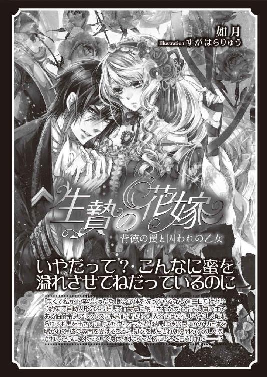

| 蜜夜 薔薇の花嫁は愛に溺れる (蜜猫文庫) | |
| 如月 | |
| 竹書房 (2015) | |
この作品は縦書きでレイアウトされています。
また、ご覧になる機種により、表示の差異が認められることがあります。
一部の漢字が簡略字で表示されていることがあります。
イラスト／ＫＲＮ
プロローグ
リネンの包帯をゆっくりと解くと、天使の羽のように白い風切羽が現れた。
十日前には、折れてだらりと垂れ下がっていたその翼は今はぴしりと伸びて美しいシルエットを描いた。治療法は間違っていなかったようだ。
縛めから開放された白鳩が身震いをすると、雨覆の柔らかい羽毛がひとつ、ふたつ抜けて宙を舞った。クククー、と鳩が小さく鳴いた。
「よく我慢したわね。さあ、もう羽ばたいてもいいわよ」
リディが囁くように言い、両手でそっとその体を包んで持ち上げた。
初めは攻撃的だった鳩も、今はすっかり懐いて大人しく抱かれている。今朝はリディの手から粟をついばみ、それがなくなると嘴で指を追いかけてくるまでになった。
飼い主以外の手から餌を食べるようになると帰巣するのは難しいと聞いたことがある。この子は帰れるだろうかと、リディは不安になった。
──でも、食べなければ死んでしまうから。
鳩は生きることを選んだのだ。もしだめだったら、ここに戻ればいい。
華奢な腕で鳩を顔の前に掲げ、彼女は言った。
「さあ、飛んで」
その言葉を理解したのか、白い鳩は翼を広げて風を抱きこむようにゆさゆさと動かした。
リディの赤い髪がふわりと揺れる。まぶしそうに琥珀色の瞳を細めながら、彼女はタイミングを合わせて鳩を空に向けて放った。
風を切る音がして、小さな羽毛が舞う。
上空をしばらくの間大きく旋回した後、戻る方角を見定めたのか、鳩はまっすぐ南に向かって飛んでいった。
第一章
若い菩提樹の枝をへし折る音がした。
イボタの茂みを踏み鳴らし、複数の足音が追いかけてくる。
──なんていうならず者たちなの！ こんなに森を荒らして。
リディの心の奥から、押し込めていた憎しみがせり上がってきた。
今朝、炭焼きの『おじいさん』が捕まった。
あの人は気のいい男だったけど、魔が差したのだ。
負傷した鳩の足から銀の足環をくすね取って売ってしまったなんて、リディも知らなかったが、買い取った銀細工商が密告したために捕まった。
炭焼きとリディは顔見知りというだけだから、このことについて彼女が責められることは何もないはずだ。しかし貴族は信用ならない。
彼らは、端から下層の者を疑い、陥れ、処刑する。
彼女は藪の陰に潜み、小さな舌を出して風の向きを測った。
──いい風が吹いてる。
リディは粗織りのシャツの懐に手を入れた。そして胡桃の殻をひとつ掴み、わざと姿が見えるように、獣道に躍り出て、風上に向かって走った。
「こっちだ、アルフォンス！」
男の声が近くなった。もう少し引きつけて、しっかり狙わなくちゃ。
悪戯盛りの子どものような身軽さで、彼女は駆けていく。
「待てえ！」
その怒号に応えたわけではないが、突然リディはうずくまって、彼らが近づくのを待った。
「よし、捕まえるぞ！」
男の声に歓喜の色が混じっていたがそれも一瞬のことだ。リディは体をねじって男の顔をめがけ、胡桃を投げつけた。
「わ......っ」
胡桃が男の額に命中して殻が砕け、粉が飛び散る。後は振り返らず、リディは再び走り出した。足音が追いかけてくる様子はない。男たちを無事撒いたが、心の中には失望と焦りがうずまいていた。
──この森には、もういられない。
薬草が豊富で、静かないい森だったのに悔しい。
背丈ほどもある藪をかいくぐってリディはようやくねぐらに戻った。
炭焼きのおじいさんに手伝ってもらって作った小さな小屋で、数本の低木と生い茂った蔓植物がいい目隠しになっていた。
背を屈めて中に入ると、寝床にしていた敷き藁があり、先日まで彼女が世話をしていた鳩の白い羽が落ちている。
藁の上に丸めてあった毛布を掴んで床に広げ、ありったけの荷物をその上に並べた。
採りためた薬草をすりつぶしておいてよかった。
粉にして胡桃の殻に詰めれば運ぶのも簡単だ。丸薬にしたものは端切れに包んだ。
麻袋にきっちりと胡桃を並べ、すり鉢とすりこぎ、針や小さなナイフはリネンに包んで、毛布の上に置いた。干し肉とわずかな果実と林檎酒の入った革の水筒も忘れない。
居心地のいい場所だったのに、思ったより早く出て行かねばならないのが少し口惜しい。
しかし、一箇所に長くいられないのは彼女の一族の業なのだ。
「うん、これでいい」
頭巾つきの褐色の外套をまとい、後ろで結わえた赤い髪を頭巾の中に完全に隠した。
彼女の赤い髪は人目につきやすいし、顔を見られれば女と疑われてしまうかもしれない。
無頼の輩に襲われないよう、リディは常に男のふりをしていた。
生成りのシャツに毛織のベスト、膝丈のホウズに革の長靴を履いた細い足は少年そのものだが、顔立ちは甘いから、見られないよう気をつけなくてはいけない。
最後に毛布で全ての荷物をぐるぐる巻きにし、荒縄で結わえた。
彼女はそれを背負って立ち上がる。念のため、目潰し粉入りの胡桃をひとつ、右手に掴んで入り口から外を覗いた。
何の気配もしないし、人影もない。
──急ごう、完全に日が落ちる前に次の住処を探さなくちゃ。
茂みを抜けて一気に駆け出そうとした時、突然背負った荷物を引っ張られた。
「あっ」
追っ手がここまで来たとは驚いた。リディは胡桃を投げようと右手を振り上げた。
しかし、それを放つ前に手首を捉えられた。
力強く大きな手に完全に動きを封じられてなすすべがなくなり、リディは全身総毛立つほどの恐怖に見舞われた。
「なんだ、細い腕だな。まだ子どもじゃないか」
さっき撒いた男とは違う声だ。低く落ち着いた、しかし張りのある声音で、そこに凶暴さは感じられない。相手は力を緩めないまま、言った。
「二度同じ手には乗らない。まあ、さっきやられたのは私ではないが──、悪戯小僧め、こっちを向くんだ」
「やっ、やめろ！ 離せ」
リディは荒っぽく怒鳴った。少年のように思わせておかなくてはならない。
「子ども相手に手荒なことをする気はない。逃げないと約束しろ。だいたい、なぜ逃げた？」
「おまえらが追いかけてくるからだろ」
「やましいことがないのに逃げるのか。足環つきの鳩を見なかったかと尋ねただけなのに」
リディは悠長な物言いに苛立って振り向いた。
「どうせ鳩泥棒だってんだろ、こっちが違うっつっても絶対泥棒扱いするに決まってんだ、あんたら憲兵は──」
顔だけ相手に向けて睨みつけようとして、リディは言葉を切った。炭焼き小屋のおじいさんが掴まったと聞いて、ヒゲ面の憲兵が来たとばかり思ったのだが、違った。
すっきりと手入れされた金色の髪に縁取られた顔は作り物かと思うほど整っているが、リディを見つめているアイスブルーの瞳は大らかでやさしげだ。
それに、憲兵なら紺色に赤い線の入ったお仕着せの服を着ているはずだが、彼はターコイズブルーの地紋つきのコートを着て、肩から首周りにぐるりと金銀の頸章を連ねている。
のどもとには絹地をたっぷり使ったクラヴァットがあしらわれている。生粋の貴族だ。
彼はリディの背の荷物を掴んだまま尋ねた。
「憲兵がどうしたって？」
どう見ても憲兵ではなさそうな相手に向けてリディは言った。
「あいつらは何でもぼくたちのせいにするから！ 信用なんかできないね」
「勘違いするな、私は憲兵ではないし、鳩泥棒を探しているわけでもない、現に鳩は戻ってきたし──」
リディがごくりと唾をのんで、彼の言葉に耳を傾けた。
あの鳩は無事に巣に帰ったらしい。元気にしているだろうか。
とにかく巣に戻れてよかった、とリディが思ったとき、男は言った。
「しかし、優秀な鳩ほど寿命が短いのは遺憾なことだ」
「えっ、......死んだの？ あの白い鳩──？」
思いがけない男の言葉に、リディはうっかり問い返した。男は無表情のまま言った。
「なぜ白いとわかる？ 私は鳩、としか言っていないのに」
「あ......っ」
リディは自分の失敗に気づいた。ごまかそうにも、いまさらとぼけても不自然だろう。
彼女は悔しそうにうつむいて唇を噛みしめた。
男は確信したように微かに笑い、リディの腕を掴んだまま小屋に入った。
彼は足で藁をかきさばき、白い羽毛が舞い上がるのを見た。
「どうやら間違いなさそうだな、ここに白い鳩がいたのは」
「ぼくは盗んでない！ 弱って落ちてただけだ、ぼくは泥棒じゃない」
「そんなことはわかっている。治療したのはおまえか」
男はそれまで寛容な眼差しをしていたのに、急に真面目な少し怖い目つきになった。
「し、知らない......、だけど、本当に死んだの？」
リディが震える声で尋ねた。
真っ白な鳩は、もしかしたら王様とか、偉い人の持ち物だったのかもしれない。
それを盗んだと疑われたり、下手な治療をして死なせてしまった罪はどのくらい重いのだろう。それより、あんなに元気に飛び立ったのに死んだなんて、信じられない。
「死んだとは言ってない」
「だって、寿命が短いって──」
「一般論だ。役に立つ鳩ほど早死になのは事実だから。長距離、わき目も振らずに飛行する気性が命を削るのだろうな。治療したのがおまえなら、ああいえば何か反応すると思った」
「......卑怯だな！」
「私は嘘は言っていない。嘘が嫌いだからな。鳩を治療した者には褒美をやろうと思っている、だから探していた」
男はリディの顔をじっと見つめた。
彼の造作は整いすぎて、生身の人間のような気がしない。
それにひきかえ、リディの顔はわざと泥で汚してあるし、服も薄汚れている。
これまでに感じたことのない恥ずかしさに、彼女は息苦しくなり、目を伏せた。
顔を長く見られてはいけなかったのに、横を向こうとしても男が彼女の顎を掴んで阻む。
今さら抵抗しても遅いように思えた。顔はしっかりと凝視されているし、視線だけ逸らしても何の効果もない。
「もう一度訊く、白い鳩を手当てしたのはおまえか？」
「......はい」
彼を信じたわけではないが、リディはようやく認めた。
「そうか。なかなか見事な治療だった、褒美を取らそう」
若いのに──二十歳過ぎくらいだろう──荘厳な雰囲気をまとって彼はそう言った。
しかしリディは、貴族なんかから粟粒ひとつもらわないと心に決めていた。
「褒美はいりません、でもその代わりに」
「その代わりに？」
「炭焼き小屋のおじいさんを釈放してやってください。盗んだのではないし、おじいさんが鳩を拾ってぼくに持ってこなかったら、鳩は死んでいたと思う」
なるほど、と彼は相槌を打った。
「わかった。おまえの荷物はこれで全てか」
男が尋ねた意味を探ろうと、リディがおずおずと目を上げる。寝床の藁以外は背負っているので、小屋の中は空っぽだ。
「はい」
「ならば、ちょうどいい」
彼はそう言うと、突然リディを肩に担ぎ上げた。
「あっ、何を......？」
リディは足掻いたが、鍛え抜かれた男の前に自分の非力さを痛感するしかなかった。
＊ ＊ ＊
リディとアルフォンスを乗せた馬がゆるい坂道を上り、跳ね橋を渡った頃には、空にうっすらと半月が見えていた。
彼らは跳ね橋の突き当りの、二つの塔に挟まれた城門をくぐり抜けた。右手に石造りの大きな建物があり、中庭を囲むように礼拝堂、三層建ての建造物や塔が続いていた。
石敷きの中庭の中央に丸い井戸が見える。
アルフォンスはリディを片手で掴まえたまま馬を下り、出迎えた馬丁に馬を引き渡した。それから、後ろに従えていたもう一頭のやや小型の馬からジャンを下ろすよう命じた。
ジャンというのは、リディを追いかけて反撃に遭った男だ。目をやられて、とても馬を駆ることなどできない状態だった。しかし、日頃連れ立って慣れているのか、アルフォンスの馬がゆっくり先導すると、ジャンが何もしなくても、彼の馬はついてきた。
「ああ？ ここはどこだ、ベキュ邸に着いたのか？ おい......水、誰か水をもってきてくれ。目が痛くて開けられない」
ジャンが馬上で喚いているのを見て馬丁がアルフォンスに尋ねた。
「いったい、どうしなすったんですか」
「狩猟の下見に行って、目を痛めてしまってな。まあ、たいしたことはないが、目をよく洗ったら、後で広間にでも連れてきてくれ」
その会話の間も、リディはアルフォンスにしっかりと腕を掴まれていて、逃げる隙がなかった。馬丁はリディを胡散臭そうに見たが、ジャンに呼ばれて、手綱に手を伸ばした。
その時、突然騒々しい声が聞こえた。
リディが驚いて顔を巡らせると、板に乗せられた少年が四人の男に運ばれてきた。
「どうした？」
アルフォンスがそのひとりに尋ねると、男は答えた。
「訓練中に落馬したんです」
運ばれていたのは、褐色の縮れた髪の、十歳くらいの少年だった。青白い顔でぐったりしている。リディは彼を食い入るように見た。
左腕が折れているようだったが、副木を当てればいいだろう。肘と頬に擦り傷はあるが、ほかに外傷はないようだ。使用人たちの呼びかけに目を開ける少年の視線は揺れていない。大丈夫だ、きっと。
リディはほっとして、小姓から視線を逸らした。彼らは左手に並ぶ建屋に向かって歩いていく。そこには医師が住んでいるのだろう。
「残念ながら、あれは助からないな」
と、アルフォンスが意外なことを言った。
「えっ？」
思わずリディが彼を見上げた。
「頭を打っている。耳から血が出ていた」
本当だろうか。自分がそんな重大なことを見落とすだろうか。小姓の髪には草がからみついていて、土はついていなかったから、おそらく落ちた先は草地で、頭は強く打っていないとリディは思った。その場所を確認したほうがいいかもしれない。
「放っておいていいんですか」
リディが尋ねると、アルフォンスは先に立って歩き出した。
「なすすべがないのだから仕方ないだろう？」
彼の冷静な言葉に我に返り、リディは自分に言い聞かせた。
──関係ない。気にしちゃいけない。
自分の正体は絶対に隠し通さなくてはならない。そのためには、たとえ目の前に重病人がいても、何もしてはいけないのだ。
──早く、ここから出たい。病人やけが人のいないところに行きたい。
リディは立ち止まり、唇を噛みしめ、目を閉じた。しかし振り払おうとしても、小姓の姿が目に浮かんで消えなかった。彼女は振り向いて、小姓を運んでいる男たちのところへ走った。
「どいて」
「うわっ、何だこの薄汚いガキは」と誰かが言った。
人だかりを押し退けて、彼女は少年を見た。それから、反対側に回って両方の耳を確認した。血なんかどこにも出ていない。
「こら、あっちへ行け」
「医者のところへ連れていくんだから邪魔するな」
野次馬と思われたのか、リディは男たちにすげなく追い払われてしまったが、やはり、小姓の命に別状なさそうだとわかった。
「おや、見間違いだったようだな」
背後でアルフォンスが呟いた。また試された──。リディはきつい眼差しで、アルフォンスを睨んだ。
＊ ＊ ＊
「あの......、炭焼きのおじいさんは──？」
「心配するな、約束どおり釈放するから」
「本当に？ 拷問などしないでくださいね」
黙っているのも気まずくて、リディは念を押した。バスタブの中でリディは体を洗っていた。湯で洗うなんて贅沢だ、しかも屋内で。
そこは使用人たちのための浴室らしい。白漆喰の壁に囲まれた小さな部屋で、白と黒の方形のタイルを交互に敷き詰めた床に、白い陶製のバスタブが置かれている。
アルフォンスは衝立の向こうで待っていた。
「しっかり洗え」
衝立越しに会話していたのに、突然アルフォンスがそう言いながらバスタブの方にやってきたので、リディは慌てて胸を隠した。
彼は怪訝な顔をしてそれを一瞥し、床に脱いであったリディの服に手を伸ばした。
「おまえの不潔な衣類は捨てるがかまわないだろうな」
「えっ、だめです、捨てないでください」
「なぜだ？ 何か思い入れでもあるのか」
「思い入れも何も、服はそれしか持っていないから、着るものがなくなると困ります」
「着替えは用意してある。体をすみずみまで洗ったらこれを着ろ。私が子どもの時に着ていた服だが、どうせもう使わないから」
その言葉に続いて、バスタブの近くの籠にばさりと衣が一揃い投げ込まれた。
「毛布も焼き捨てろ、不衛生だ。入れ物が必要なら革の背負い袋を与える」
確かに鞄代わりに毛布を使っているが、それだけではなく、野宿するのにも必要だ。
不衛生というなら、代わりは新しい毛布がいい、と思いつつも貴族から何かを与えられるのはよくないと、リディの心の奥で警鐘が鳴った。
これ以上近づかないでと祈りながら、リディは下半身は湯に浸からせたまま、体を折るようにして髪を洗った。そうしていれば、赤い髪で体がほぼ隠れる。
彼はリディを幼い男の子と思い込んでいるようなので、そのまま誤解させておく。
ここ──伯爵の城らしい──を出たら、もう会うこともないだろうから、あえて正す必要はないと思った。
「筋肉のない体だ。よくそれであんなに早く走れたものだ。おまえ、声変わりもまだだな。いったいいくつだ、十二、三ってとこか。親はどうした？」
実のところリディは十七歳だがここは曖昧に答えることにした。
「年はよくわかりません。親も──」
「いないのか」
リディは黙っていたが、男の声に同情のような響きがこもっているのを感じて、うしろめたい気がした。
「名は？ 私はアルフォンス・ド・ベキュだ」
ベキュ──山暮らしのリディでも知っている。伯爵の家名だから、彼はその親族だろう。
しかし、彼はなぜリディをこんな城に連れてきたのだろう。鳩の治療の褒美というなら、炭焼きのおじいさんを釈放してくれれば、それでよかったのに。
「ぼくは......リディ」
「リディ？ 女みたいな名前だな」
彼に言われてどきっとした。何も思わずに正直に名乗ってしまったが、名前が男っぽいとか女っぽいとかいう感覚がわからなかった。
「炭焼き小屋の男については今回は見逃してやるが、身寄りのないおまえを放置するわけにはいかない。ここで小姓として修行するか、それとも修道院に行くか？」
身寄りがないわけではない。母親は健在だが、リディの一族は十五になると親元を離れ、ひとりで生きるのだ。自立して二年の間に何度か住処も変えた。
どちらと言うなら修道院の方が、逃げる機会がいくらでもありそうだ。
リディが答えようとしたとき、別の人間が入ってくる気配がした。
「ひどい目に遭った、まだ痛いんだぜ、ちくしょう」
その声には聞き覚えがある。リディが目つぶし粉を投げつけた相手、ジャンだ。
「なんだ、広間で待っていればよかったのに」
と、アルフォンスが言うと、男が言った。
「こんなところで何をしてるんだ？ アルフォンス」
「入浴させているんだ。私は不潔なものが大嫌いだからな」
それから、彼は男に向き直った。
「ジャン。さっきは災難だったな。しかし、猛毒というわけでもないからよかったじゃないか。まだ目が赤いが、普通に見えるんだろう？」
おう、と後からやってきた男は答え、ののしるように言った。
「気をつけろよ、アルフォンス。とんでもない悪童だからな、そいつは」
アルフォンスがジャンというその男に気をとられている間に、リディは大急ぎで体の水気を拭い、籠から白いシャツを取り出して羽織った。丈が随分長いが、それでよかった。できるだけ体を隠したかった。アルフォンスがなだめるように言った。
「そう怒るな。本当にまだ子どもなんだ、よくあの森でひとりで生きていたと思う。森は伯領でもあるし......こんな境遇の子どもが領内に存在するというのは問題だ。ベキュ家にも責任の一端はあろうと思う」
「また責任、か。──そんなことより、例のものは見つかったのか？」
「いや......残念ながら今回もだめだったようだ」
二人は狩猟の成果でも話しているのだろうかと思って聞き耳を立てていると、アルフォンスがこちらを見た。
リディはバスタブから出たため、今は衝立に隠されることなく彼の目にさらされている。彼女はすっかり身なりを整え、濡れた髪を乾かすふりをして──実際に乾かす必要があったのだが──リンネルのタオルを頭からかぶっていた。
「洗い終えたらこちらに来るんだ」
と、彼は命じた。その時、リディはシャツの上に黒と銀の縞模様のベストと膝丈のブリーチズを履いていた。
シャツは男物とは思えないほど柔らかくて肌に心地よく、ベストは裏地つきでしっかりした厚みのある布だった。布で巻いて押さえなくても、リディのささやかな胸はベストの厚みでどうにかごまかすことができた。
彼女は、用意されていた部屋履きのスリッパに足を入れ、彼らの方に近づいた。
アルフォンスは待ちあぐねた表情で腕組みをしていた。長くはないが金色の髪は神々しく、アイスブルーの瞳は涼しげで、高い鼻梁はまっすぐ通っている。
上背もあって相当な美丈夫だった。
森で捕らえられたときも緊張したが、今もやはり、リディは彼の前に立つと顔が熱くなり、息苦しくなる。恐怖からかと思ったが、それだけではないような気がした。
並んで立っているジャンは彼よりわずかに背が低く、くすんだ褐色の髪を背で束ねている。グレイのコートの袖には黒糸で刺繍がしてあり、アルフォンスほどの華やかさはないが、どちらにしても裕福な人々の部類に違いない。
「おい、アルフォンス。大丈夫なのか、そいつを縛り上げなくて。反撃に遭うぞ」
ジャンはそう言いながら、わずかに後退った。
そこまで警戒されると、リディもさすがに彼が気の毒になった。胡桃の中に砂と一緒に詰めてあった香辛料のトウガラシと薄荷で目がひりひりするだけで、洗い流せばまもなく涙も止まり、目を開けていられるようになるのだが、森の中にあってすぐに洗えなかった分、痛みが長引いているようだ。
「さっきは......ごめんなさい」
生きるか死ぬかの瀬戸際に相手に致命傷を与えなかっただけでも温いやり方で、リディが謝る筋合いではなかったが、目を腫らしている男を見ると、ついその言葉が出た。
「ひとりで生きるなら、当然身に着けておくべき護身術だから仕方なかろう。どうだ、風呂に入れたらこぎれいになったんじゃないか？」
アルフォンスがタオルをリディの頭から掴み上げて言った。
「おや、鮮やかな赤い髪だな。それとも俺の目が充血してそう見えるのかな」
最後の方は皮肉混じりの口調でジャンが言った。確かに、白目はいまも充血している。瞳は灰色だ。まぶしそうに顔をしかめながら、ジャンが言った。
「ふうん、よく見ると可愛い顔をしているなあ。城に残して面倒を見るのも悪くないかもしれないな。小姓として仕込んだら貴婦人たちにさぞ──いや、それはよくないな。俺の人気が奪われるのは嫌だ」
「何を言っているんだ。今、使用人になるか修道院で過ごすかを尋ねていたところなんだ。おそらくこの子どもは、私たちの探しているような類の人間ではないと思う」
どうやら彼らは人探しをしているようだ。そしてリディは、金持ちな青年により、身寄りのない子どもとして保護されたということらしい。全く余計なお世話だ。
「あのう......ぼくは、修道院に行きたいです」
と、リディが言うと、アルフォンスが答えた。
「わかった、それがいいだろう」
「神よ、どうかこの凶暴なガキに祝福を与え、善良な青年になるようお導きください」
芝居がかった物言いでそう言ったのはジャンだ。ほとんど笑わないアルフォンスと違って、ジャンの方は怒ったりおどけたり、表情がよく変わる。
「ああ、こんな犠牲を支払ったのに収穫なしかよ。......ちくしょう、いったいどこにいるんだ、メルヴェイユの末裔は！」
その言葉に、リディの体が凍りつきそうになった。
──メルヴェイユの末裔......！
かつては王宮に仕え、栄華を極めたので『メルヴェイユ』と称されたが、陰謀により失脚した一族だ。
女の半分は魔女裁判によって処刑された。落ち延びた者たちは四散してひっそりと生きた。
そんな敗北者の子孫を、彼らはなぜ探しているのだろうか。
ふたたび魔女狩りをして、民衆の前で処刑しようというのだろうか。
アルフォンスのお下がりの衣が長すぎたのは幸いだった。リディは平静を装っていたが、そのぶかぶかのシャツとブリーチズの下で、足の震えを止めるのに必死だった。
＊ ＊ ＊
夜が更けると、リディは城内の螺旋階段を上がり、二階へと連れて行かれた。
歩廊を通り、大広間に出る。右手の壁の中二階に白塗りの木製の演壇があった。酒宴が行われる時には、そこで楽師が音楽を奏でるらしい。
広間を横切ると二つの部屋があり、そのひとつの扉を開けて、アルフォンスが入れと言った。
しかし、リディは中に足を踏み入れなかった。
「おまえはしばらくここで寝泊りするんだ」
そう言われても、リディの答えはもう決まっていた。
「いえ、今から自分で修道院に行きますから」
「なんだと？ もう遅いし、いきなり押しかけても宿坊に泊まるのがせいぜいだ。その上、食禄を払わねば引き受けてはもらえないぞ」
「食......禄？」
「つまり、捨てられた赤子でもない限り、修道院に子どもを預けるには何年か分の食い扶持に相当する金を払わなくてはいけない」
リディは苛立ちを覚えた。頼みもしないのに修道院に入れと強要し、金を払えというのか。もともと修道院の世話になる気はない。
リディは、というより彼女の一族は、教会も修道院も憎んでいる。
「だったら森に戻ります。そんなお金払えないし、ひとりでも何の不自由もありません」
「それは許さない。身寄りのない子どもを保護するのは領主の責任だし、放置したらやがて山賊になり、峠越えの商人隊を襲うことになるかもしれないからな。食禄は私が払う、それを褒美としよう。これでおまえは二度と飢えたり凍えたり野盗に怯えることもないから、心配はいらない」
アルフォンスの押しつけにリディは腹が立った。それは褒美という名の強制収容であって、嬉しくもないし安心もしない。
十七歳の女であって、子どもではないと言えば、彼はその思いつきを撤回するだろうか。
しかし、彼らはメルヴェイユを探しているのだ。メルヴェイユの魔女を。
狩られて殺されないためには、少年のふりをしたほうがいいに決まっている。
何とかこの場を抜け出さなくては、とリディは懸命に考えるが、妙案が浮かばない。
「とにかく入れ」
彼に背を押されて、リディはしぶしぶ部屋の中に入ったが、その瞬間、鼻腔をくすぐる草の匂いに懐かしさを覚えた。
その部屋は臙脂に青の蔓草柄の壁に大きな暖炉が切られており、それを囲むマントルピースには天井に至るまで、金彩彫刻が施されていた。暖炉の左右には一対のタペストリーが掛けられている。
そして入り口近く、暖炉からいちばん離れた壁面に、数十個の引き出しのついた棚が置かれていた。棚の上の天井からは干からびた草や根が吊るされ、それがリディにとって馴染んだ香りを放っていたのだとわかった。
室内を見渡して呆然としているリディに、アルフォンスが説明した。
「奥が寝室で、ここは本来は衣裳部屋だが──薬草部屋といったほうが合っているな。ある人物を見つけたら、薬種や道具は全て譲ろうと思っている」
全て譲る、と聞いてリディは動悸がした。それが誰かは知らないが、大変な幸運の持ち主だ。
ぶら下がっている大量の植物は、一瞥しただけでも貴重な薬草だとわかる。なかなか手に入らない珍しい植物もある。その全てがほどよく乾燥し、いい状態で保存されていた。
「その人物って......医師ですか？」
「まあ、そんなようなものだ」
「城に医師はいないんですか。誰がこれを管理しているんですか」
「医師はいるにはいるのだが──草を干したのは私だ。薬種も多少は揃えてある」
リディはアルフォンスのことを油断ならない危険な男だと思っていた。しかし人のために役立てようとこれだけのものを集めたという事実を知ると、彼を見る目が少し変わった。
「あなたは薬師なんですか？」
「違う。とにかく探し人が見つかるまで、おまえはここにいていい」
そこにいたいと願ってもいないのに傲慢な物言いだ、とリディは内心思ったが、逃げたい気持ちは好奇心に勝てなかった。あのたくさんの引き出しにどんな薬種が入っているのだろう？
──一晩だけ、ここに留まろう。明け方、隙を見つけて逃げればいい。じっと息をひそめて待っていれば、機会はあるはずだ。並の人間なら油断するもの。
ところが、そううまくはいかなかった。
「えっ、まさか、同じベッドで寝るんですか」
ひとしきり引き出しの中を見て回った頃、奥の一室に案内されたのだが──。
壁は濃い緑と金の幾何学模様で飾られ、木製の扉は白い大理石のアーチで囲まれている。ここにも大きな暖炉と、その前に長椅子が置かれていた。
しかし、ここで眠るぞと言われたが、ベッドはひとつしかない。
男女がひとつのベッドで、と思ったが、今リディは少年ということになっているのだった。
「十分な広さがあるから問題ない」
アルフォンスは先にそう言って、裸になるとベッドに入った。
リディは慌てて目を逸らしたが、たくましい体を一瞬見てしまい、真っ赤になった。
薄暗かったから赤面したことは、彼には気づかれなかったと思うが。
「ぼくは床で寝ます。こういう寝床には慣れていません」
「私が寒いんだ。おまえを暖房代わりにするのだから早く来い。......心配するな、私に男色の気はない」
そう言って彼はリディの腕を鷲づかみにしてベッドに引き上げた。春の初めなので多少は寒いだろうが、屋内のベッドで贅沢なことを言う。
「ま、待ってください。肌着だけは着ていてもいいですよね。修道院ではそのようにすると、聞いたことがあります」
リディは十五になるまでに、母親からこの世の全て──母の知る限り、ではあるが──を教わってきた。生きる術、生き残る術、そして警戒すべき人々の暮らしについても学んだ。
だから、修道士が男同士で罪を犯さないために衣を着て眠ることも知っていた。
リディもこれまで裸で寝たことはなかった。防寒のためや危急に備えて、丸裸なんて無防備な姿にはならない。
「よかろう。さっさと入れ。ベッドに入ったら、寝入るまで話をしてやろう。おまえは薬草に興味があるようだな、私の部屋に入るなり、目を輝かせていたから」
アルフォンスの子ども扱いに思わず苦笑がもれた。まるで幼子のように世話を焼かれ、くすぐったく感じながらも、ふと心が温かくなる。
彼は押しつけではなく、リディを身寄りのない子どもとして心から案じてくれているのだろう。意外と情深い男なのかもしれない。
とはいえ、この窮状に変わりはない。
リディはシャツ一枚になって、おずおずと羽根布団をめくって体をすべりこませた。
胸のふくらみに気づかれたらどうしよう、と思うと冷や汗の出る思いだ。
アルフォンスは抱き枕のようにリディの体を抱え込んだ。力強くて、温かい。
彼の上腕にリディの頭が乗る格好で捉えられたとき、複雑な香りがふわりと漂った。香木を焚いたような品のよい匂いに、かすかにイリスの花の匂いが混じっている。それらが人肌で温められて、森で嗅いだことのない芳香となって彼の身体を包んでいるのだ。
リディは自分の手を体の前に寄せて、胸が彼の体に触れないように気をつけた。
「緊張しているのか。ばかだな。親にこうしてもらった記憶は......ないか。さて、私がなぜここに薬種を集めているのか、その理由を話そう」
死刑執行人の腕枕で罪人が眠らされているようなものだ、緊張しないはずがない。それに、男の裸身に触れるのも生まれて初めてのことで、身動きひとつできない。
しかし、彼が薬種を集めている理由は知りたい。
「人を探していると、さっき聞きました」
「そうだ。私はメルヴェイユを探しているんだ。それは昔、王族の医師として権勢を誇っていた一族で──」
一瞬、リディの身体がぴくっと反応してしまった。
それに気づいたかどうかわからないが、アルフォンスは声の調子を変えず、説明を続けた。
「彼女たちは教会の禁じているやり方で治療をしたそうだ。教会は血を忌み嫌う。身体を切り裂くなんてとんでもないことだし、激痛の伴う野蛮な技だとして、絶対に認めなかった。しかし、王家の年代記には、司祭に余命を告げられ、終油の秘蹟を終えた信者を、メルヴェイユの女が何人も治したという記録がある」
リディの頭はくらくらした。終油の秘蹟、というのは、臨終近い病人が、司祭に罪を告白し、赦しをもらって魂が地獄に堕ちないよう救済してもらう儀式だ。
稀に、それをした後で快復することもあるが。教会により死を宣告された患者をメルヴェイユが快復させたものだから、それが聖職者たちを脅かした、とアルフォンスは続けた。
「教会は外科的なやり方を嫌う。メルヴェイユをのさばらせておくことは、彼らの危機を招くと判断したのだろう、権威をもつ聖職者たちが結束すると、メルヴェイユ一族の栄華はあっという間に崩壊した。──だが、時代は変わりつつある。私はもう一度、そういう技術を蘇らせたい」
「あなたは健康そうなのに？」
もうひとりのジャンという男は不摂生もしているのか、体も鈍っていたようだが、アルフォンスは身のこなしに隙がなく、力も強かった。リディがちらりと見てしまった体も、鍛えられていて、精悍だった。
病んで悩んでいる人間なら、メルヴェイユ再びと願うのもわからなくはないが。
「私は健康だな、おそらく」
アルフォンスは言った。
「だが、治したい人がいるんだ」
その声は、厳格で少々傲慢な彼らしくない、弱々しい響きをもっていた。
悩ましく、心もとないような。
彼でもそんな声を出すのだな、と驚いてリディは少し顔を上げた。
ちらりと視線を落として、アルフォンスがリディを見た。
今、灯りは弱々しいが、アイスブルーの美しい瞳が間違いなくリディに焦点を合わせていることに、彼女はまた動転した。
目が合ったことが可笑しかったのか、彼は低い声で笑った。
「理由は以上だ。今度は私が訊こうか。鳩の治療痕は、細長い一筋の傷と、その筋をまたぐような小さな痕が三箇所ついていた。鳩ごときに、と私は言いたくはないが、そんな丁寧な治療をなぜしたんだ？」
リディは治療を認めたことを後悔した。再び蒸し返されることだけは避けたかったのに。
答えに窮して彼女が黙ったままでいると、アルフォンスは続けた。
「炭焼きの男は、足環を取ったあとは、ご馳走だ、おごってやるといっておまえに鳩を渡したと言った。彼は鳩だけなら自分で食べるつもりだったが、銀の足環を売ればいい金になると踏んで、気前がよくなったんだろう」
じわり、とリディの背に汗が浮いてきた。
「通信用の鳩は、その持ち主にしか役立たない生き物だ。おまえにとって何の得もないのに、食わずに手の込んだ治療を施した理由は何なのだ？ どこでそんな方法を学んだ？ あの傷跡を見て、メルヴェイユがやったのではないかと思ったんだ」
これは罠かもしれない。褒美をやると言って連れ帰り、身寄りがないから面倒を見るといって引きとめ、薬種を見せ付けて油断させての罠だ。
──どこで間違えたの？
リディは記憶を手繰った。
野生じゃない鳩で、自分の技を試したこと？
治療が成功したとわかった時点で鳩を殺しておかないといけなかった？
でも無理だ。リディにはできない。生かすために苦労したのだ。それを殺すなんて。
「リディ？ 私はしかしおまえを疑っているわけではない。なぜならメルヴェイユは、その技を娘にしか引き継がないからだ。だから男であるおまえは、たとえその血を引いていてもメルヴェイユの魔女ではあり得ない、残念だけどな」
リディの血の気が引いた。野生の獣がするように、自分も仮死の擬態をしたいくらいの絶望が目の前に立ちはだかっていた。
＊ ＊ ＊
答えがないと思ったら、小さな寝息が聞こえた。
──眠ったのか？
アルフォンスは少年の髪を撫でてみたが、身じろぎひとつしない。ジャンと二人で追い回してしまったから、疲れきっていたのかもしれない。
初めて彼を見たときは、アルフォンスの忌み嫌うべき不潔な子どもに過ぎなかったが、洗い上げたら見違えた。言葉遣いも悪くないし、佇まいにそこはかとなく品がある。
荒くれた若者と思っていたが、修道院へ行きたがったり、衣を着たまま眠りたいと言ったり、この少年は案外、信心深いのかもしれないし、何より賢そうだ。
ひょっとすると、自分は、泥沼の中から美しい珠を拾い上げたのかもしれない。
衣を脱がなければ湯たんぽ代わりの効果も薄いが、それは口実で、ひとりの子どもが道を踏み外さないようアルフォンスは見張っていたのだ。
目を離せば、おそらく彼はここから逃げ出して森に舞い戻り、賊の一員に成り下がってしまうかもしれないと考えて、こうして捕らえていたのだが。
疑って悪かったという思いがアルフォンスの胸を過ぎった。
鳩を懸命に治療する姿が目に浮かぶ。負傷した小姓を心配して駆け出す姿も目に焼きついている。根がやさしいのだろう。
さきほど、薬種棚の引き出しをひとつひとつ開けては食い入るように見つめていたリディの横顔を眺めて、彼は心が騒いで仕方なかった。
少年は琥珀色の瞳を陽光のように輝かせ、何に興奮したのか頬を薔薇色に染め、まるで人を恋うように薬種やさまざまの丸薬を凝視していたのだ。
門外漢から見れば、どれもただの草にしか見えないだろうに、彼はそこにどんな関心を抱いたのだろう。小さな頭の中にどんな思いが渦巻いていたのだろうか。
男色の気はない、と自覚しているが、この少年から発散する雰囲気に見入っているうちに、次第にその顔立ちの愛くるしさ、首や腕の細さ、頼りなさに目がいくようになってしまい、アルフォンスは少なからず狼狽し、なぜそんなふうに感じたかを自問してみる。
城に住む、同じ年頃の小姓たちを思い浮かべてみるが、これほど利発そうな、魅惑的な容貌をもつ者は見当たらない。
見栄えのよい装束を身につけさせ、立ち居振る舞いを躾けたら、どう成長するだろうと思うと楽しみであり、修道院に任せておくのが口惜しいような気がする。
親友のジャンも言っていたっけ。
──ふうん、よく見ると可愛い顔をしているなあ。城に残して面倒を見るのも悪くないかもしれないな。小姓として仕込んだら貴婦人たちにさぞ──。
燃えるような赤い髪に琥珀色の瞳、甘い顔立ちは確かに女たちに愛されるだろう。
ジャンはよく見ていたな、と感心した。やつは女好きで男に興味などないはずなのに。
朝、目を覚ましたら、城に残るようにゆっくりと説得してみようか。
羽根布団を引き上げて彼の肩までしっかりとかぶせてやった。寒くないように、その小さな体をアルフォンスの胸にしっかりと引き寄せる。
──ん？ 何だ、この感じは......？
森で担ぎ上げたときの軽さからいくと、もっと骨ばっていそうなのに、思いがけずその身体は柔らかい。
子どもというのはこんなものだったか？
アルフォンスは弟たちが十二、三の頃を思い出してみたが、骨格からして違う気がする。
彼は、リディの長い髪に指を入れて梳いてみた。さらさらとした細い髪だ。
個人差はあるだろうが、男にしては髪の一本一本までが頼りない。
──栄養が足りていないのだろう。
彼は右手でリディの背をさするようにして、その感触を確かめた。肩幅が狭すぎるのではないかと思った。しかし、腰から下へと手を移動すると、思いのほか丸みがあって、痩せぎすの少年の尻とは思えなかった。臀部を掴んでみると、ぴくりとリディの体が動いた。
起こしてしまったか、と慌てたが、彼はまだ目を閉じたままだ。
顎も小さいし、足も小さい。顔もつるつるとしていて幼児のようだ。
アルフォンスの胸板にごつごつしたものが当たっているのが、唯一少年らしい骨格だが、と思って手でそれを探ると、リディの肘だった。
彼は体の前で肘を揃えるようにして曲げ、両手は顎のあたりで組んでいるのだ。まるで祈りでも捧げているように。
なんて不自然な格好だろうと思った。
アルフォンスはその肘を引いて楽にしてやろうと思ったが、それは固く閉じられていて動かなかった。
野生動物のような暮らしが長いと、眠るときにもこんなに力を入れているのだろうか？
──野生動物......か。
奇妙な予感がした。手負いの獣が傷を隠す習性を、アルフォンスは思い出した。
彼はリディの枕にしていた自分の左腕をそっと引き抜き、身を起こした。
それから、ベッド脇のサイドテーブルにあるオイルランプを取り、火を灯した。
光がベッドを照らし、柔らかい布団の凹凸の影を浮かび上がらせた。ベッドに入る前、リディは背で結わえていた紐を解いたためにシーツに赤い髪が広がっていた。
体を丸めるようにして彼は眠っている。
アルフォンスがランプを灯そうと起き出したために、リディの腰のあたりまで布団がめくれていた。獲物を狙う獣みたいに、彼は息を詰めてそっとリディに近づいた。
細い手首を両手でそれぞれ掴むと、アルフォンスは一気に開いた。
「あっ」
か細い悲鳴が聞こえた。
琥珀色の大きな瞳を瞠って、リディがアルフォンスを見つめていた。
「動くんじゃない。怪我があるかどうか、調べるだけだから」
アルフォンスが低い声で言った。
「け......怪我？」
「野生の動物は、痛みや傷を隠すというから」
リディの顔が青白く、ひどく怯えているように見えた。
絹地のシャツの衿を掴み左右に開く。少々乱暴だったか、ボタンがちぎれて飛んだ。
「や、......やめて......ください」
震える声で訴えながら、リディは抵抗したが、アルフォンスは力でねじふせた。
彼のアイスブルーの瞳もまた、驚愕したように見開かれた。
絹地の前身頃が開かれて、薄桃色の肌が見えた。傷は──？
不自然に少年が隠そうとしていたものの正体をようやく彼は覚った。
負傷などしていなかった。むしろ傷ひとつない肌に、あるのは小さな丸い双丘。
それぞれの中心がうっすらと薔薇色に染まり、ぷくりと膨らんでいる。
この少年が眠っている間すら──いや、眠ってはいなかったかもしれないが──必死で隠そうとしていたのは、歪みのない美しい曲線を描く二つの乳房だ。
少年にあるはずのない──。
アルフォンスは混乱した。そしてシャツの裾を捲り上げる。
「いやあっ」
甲高い声だ。細い足がじたばたと動き、最後の抵抗を試みたが、アルフォンスはそれも難なく封じた。
彼はリディの膝を掴んで自分の腰へその足を引き寄せた。
華奢な左足をアルフォンスの右膝で押さえ、彼女の──もはや『彼』ではないだろう──右膝を掴んで開いた。
「嫌です、いやっ......ぁ」
アルフォンスはリディの身なりに惑わされてすっかり勘違いしていたが、その股には、やはり男にあるべきものがなかった。
「おまえ......女だったのか──？」
なぜ男のなりをしていたかは、たやすく想像できたが、本当に女かどうか断定するのは早いかもしれない。
アルフォンスは、リディの足の間を指先でなぞった。
「ひぁっ」
ぴくりとリディの下腹が震えた。浅い溝を滑らせるように指の腹を動かしていくと、柔らかい花芯に触れた。
「あっ、......ぁ、やめてください」
見当をつけて、やや深い窪みをみつけて指を埋めようと試みる。粘膜を押し分けて指先を入れると、リディが「痛い」と叫んだ。第一関節がやっと入るか入らないかの狭いものではあったが、膣孔がちゃんとある。
アルフォンスはそれ以上、彼女をどうこうするつもりはなかった。ただ確かめる必要があったのだ。女とわかったら、扱い方も変わる。第一に男だけの修道院に送るわけにはいかない。
「許してください、お願いです」
震える声で懇願する彼女の足の間から静かに指を抜き、アルフォンスははだけたシャツをかき寄せてその裸身を隠した。
そして子どもをあやすように、乱れた髪をなでつけ、体を毛布で包み込んでやった。
生まれてこの方、こんなにやさしく何かを扱ったことはないというほどに。
「怯えるな、もう何もしない。確認しただけだ」
彼女がそれを信じるかどうかはわからないが。
それにしても、女だったと気づかなかったとは不覚だった。どうりで体つきが丸みを帯びて、感触が柔らかいはずだ。
成熟しているとは言いがたいが、年も十二、三よりはもっと上だろう。
「そうならそうと......なぜ、早く言わなかったんだ？」
呆れたように彼は言ったが、答えを期待してなどいなかった。女と知られれば手籠めにされるかもしれないと案じていたにきまっている。
「子どもを犯すような蛮族ではないぞ、私は」
「すみ......ません」
「まあ、いい。今日はとにかく寝ろ」
ランプを消し、自分もベッドに潜って目を閉じたが、そうそう寝付けるはずもない。
リディのか細い悲鳴や、薄桃色のなめらかな肌、固い果実のような隘路の感触が、目に、耳に、そして指先に残って蘇る。弾けるような丸い乳房の先端の淡い色を思い返すと、彼女を押さえつけてそれを頬張ってみたい欲求にかられる。
女にだらしない自分ではないはずなのにどうかしている。
男が裸で眠ろうとしているすぐ横に生娘の白い肌があることは、潔癖なアルフォンスにとって想定を超えていた。
「ああ、なんて夜だ、全く」
彼はベッドから抜け出ると、ベッドから毛布を一枚引っ張り出してトーガのようにまとい、暖炉前の長椅子まで移動した。
椅子から長い足をはみ出して横たわり、アルフォンスは考えた。
女を拾ってしまって、どうしたものか。
服はどうする？ 自分には姉妹はいないぞ。女のことならジャンに相談するか。いや、口の軽そうなあいつにこのことを知らせて大丈夫なのか？
それよりもっと重要な問題があるだろう。
──こいつがメルヴェイユではあり得ない、と言い切れなくなったことだ。
めまぐるしく思考が働いて、睡魔など全く降りてこない。
まんじりともせず、彼は朝を待った。
第二章
リディも一晩中眠れなかった。
女だったと知ると、彼女だけをベッドに残してアルフォンスは暖炉の方へ行ってしまった。彼は長椅子で寝るつもりらしい。女とわかればすぐに欲情するような類の男ではないのだろう。そのことにリディは胸を撫で下ろした。
安心すると、相手の息遣いが気になってきた。
彼はもう眠ったかしら──？
耳を澄ませると、もっと遠くの方から、かすかな音が聞こえてきた。コン、コン、と何かがぶつかるような音だったが、神経を研ぎ澄ませてそれを聞いていたら、誰かが咳をしているらしいとわかった。
止まったかと思うとすぐにまた聞こえ、次第に激しくなっていくようで、リディはそれが気になって眠れなくなった。
──苦しそう。
リディはそれを聞きながら、あれこれと想像した。
乾いた咳か、湿った咳か。顔を真っ赤にして咳き込んでいるのか、空咳みたいなものか。
どのくらい長引いているのだろうか。咳き込んでいる人の年はいくつくらいだろうか──。
どの薬草がいちばん効くのか。
今、自分の立場を考えると、下手に動いてはいけないのに。
──でも、考えるだけならいいわよね。
そうして結局一睡もせずに夜明けを迎えると、彼女はアルフォンスが起きる前に、彼に与えられた古着を身につけた。
朝、同じ部屋のテーブルで、彼と向かい合わせで食事をした。昨日の夜食よりは簡素とはいえ贅沢な朝食だったが、リディはあまり食べられなかった。
テーブルの向こうに、灰青色のウエストコートと共布のブリーチズをまとった端麗な姿のアルフォンスが座っている。腰に銀のベルト、肩から斜め掛けした剣帯には短剣を一振り収めていた。
「そら、しっかり食べないか、育ち盛りなんだろう」
アルフォンスはそう言いながらリディに、料理を盛り付けた皿を押し出した。そして自分の言った『育ち盛り』という言葉に違和感を覚えたらしく、小さく舌打ちをした。
「見慣れないから食べ方がわからないか？ 世話が焼けるな」
そう言うと、彼はパンをちぎり、小さな陶器の皿に丸く盛り付けてあった練薬のようなものをナイフで塗りつけてリディに手渡した。
「これはリエットといって、豚肉からできているんだ、うまいぞ」
リディがそれをおそるおそる食べると、口の中で溶けるように柔らかくて美味しかった。琥珀色の瞳を子どものように見開いて味わっているリディを、アルフォンスは満足そうに眺めていた。
彼と目が合い、じっと見つめられていたことに気づくと、リディは俯いた。はしたない食べ方をしたかと心配になった。
その後は、互いにほとんど口を利かなかった。口を開けば、あれこれと詮索されるだろうと、リディからは決してものを言わなかった。
「よっ、どうした？ 二人とも神妙な顔つきをして──」
ジャンが騒々しい足音を立てて入ってきた。見れば、両手に大きな花束を抱えている。マントも外さずに、どこかへ行く途中だろうか。アルフォンスは彼を一瞥して言った。
「別に。朝食をとっているだけだ」
彼がジャンに何を言うかと、リディはハラハラしながら見ていた。ジャンが言った。
「俺はこれからシャタン邸を見舞ってこようと思うんだが──。アルフォンス、おまえは行かないのか？」
「そんな花束を持ってか？ 無意味だ。──私は今月初頭に行ったばかりだし、今は手が離せない。それに、なぜおまえが行くんだ？」
ジャンの浮かれた様子とは対照的に、アルフォンスは関心なさそうだ。友人のこの態度に呆れた顔をして、ジャンが反駁した。
「花をもらって喜ばない女はいないし、女はいつだって待ってるもんなんだぜ？ 月に一度しか行ってはいけないなんて規則があるわけじゃないだろう。おまえは冷たいな」
「ひと月に一度は必ず見舞うと決めたからにはそれを欠かしたことはない。なぜ冷たいと言われるんだ？ それ以上行っても、何も変わらないし」
「そうか？ 俺は、何度でも行きたくなるな。行くと微笑むんだ、まあ、気のせいかもしれんが。彼女が待っていてくれるような気がして癒される、俺自身が」
「変なやつだな、好きにしたらいいだろう」
「アルフォンスの浮気者め！ 顔の可愛い小姓に夢中か？ 俺は行くぞ。セレスティーヌ、わが眠り姫......！」
ジャンは、また大袈裟な身振りをしながら騒々しく出ていった。
女だと暴露されなかったことに、リディはほっとした。
──見舞う......って、治したいのはその人？ 昨夜咳をしていた人？
でもそれなら、見舞いが一ヶ月に一度きりということはないはずだ。ジャンがこれから会いにいくという相手は、同じ屋敷にいる人ではないだろう。
そういえば、朝になってからあの咳が聞こえない。いったいなんだったんだろう。
リディの中でいろいろな疑問が湧いたが、下手に動くのは危険だと自分を戒めた。
彼は疑っているに違いないから。
──メルヴェイユを探しているんだ。
たったひとりの病人のために？
リディは胸がもやもやとした。メルヴェイユの一族がどれほどの災難に遭って逃げ隠れているのか、知らないとは言わせない。こちらだって命がけなのだ。
リディは、たとえ目の前で重病人がもがき苦しんでいても、何もしない、と決意していた。
「全く騒々しいやつだ。食事を続けるぞ。......あ？」
アルフォンスがふとリディの顔に視線を留め、頬に手を伸ばしてきた。
「リエットがついてる。幼児じゃあるまいに」
そして長い指で、リディの頬を拭った。水晶のようなアイスブルーの瞳が眩しい。
彼がわずかに動いただけで、凛とした芳香が広がる。アルフォンスの知的に引き締まった形のよい唇が間近にあって、目のやり場に困った。
頬に触れられて、顔が赤くなったのが自分でもわかった。
動悸が激しく、体が震える。まるで病気だ。
瞬時に彼女はいくつかの薬草を思い浮かべたが、どれも効きそうになかった。最善の薬は、アルフォンスから離れることだと思った。稀有な美しさを前にして、息苦しくなるからだ。
──早く、ここを出なくちゃ。
「洗濯場に行かせてください」
自分だけ食べ終わると、リディは立ち上がって言った。
洗濯場は中庭中央の井戸ではなく、浴室の隣、屋根つきの井戸端にあった。城内の洗濯女たちが集まるその場所にはリディの着ていた粗末な服と、鞄代わりの毛布が洗って干してある。
アルフォンスは焼却すると言ったが、リディがそれを拒み、昨日の入浴の後、自分で洗った。
「もう乾いているはずです。それに着替えて帰ります」
貴族から何かを受け取るつもりはない。そして、今度こそ森へ帰るつもりだ。
「あんな貧相な服をまた着るというのか？」
「はい。森に帰りますから。......あなたが心配していたような幼い子どもではないので、もうかまわないでしょう？」
リディは、女とわかったからには腹をくくって、本当の年を打ち明けようと思った。世間には十四にもなれば結婚する娘も多いのだから、他人の干渉を受けることはないはずだ。
「子どもでなくても、女である時点で保護が必要だ。身の振り方が決まるまで、ここにいろ」
「嫌です。昨日は黙っていたけど、本当は十七です。もう子どもも産めます」
だから保護される必要などない、と言いたかった。しかしアルフォンスを納得させることはできなかったらしい。
「まだ食事は終わっていない。座れ」
リディはそれを無視して、くるりと彼に背を向けた。
「待て──メルヴェイユ」
彼の放った言葉に、リディの心が凍りついた。
「おまえはメルヴェイユだろう」
「し、......知らな──」
「子どもを産めるだって？ 一子相伝......か」
「──えっ」
「メルヴェイユのならわしだ。おまえがもしそうなら、私の子を産んだらその子に秘術を託すのか？」
彼も立ち上がると腕を伸ばし、リディの肩を掴んで振り向かせた。彼女の小さな顎を掴み、体を屈めてきた。絹糸のような金の髪がさらりと揺れ、アイスブルーの瞳が近づいてくる。
リディは自分の顎を捉えているアルフォンスの手を、両手で引き剥がそうとしたが、そうすればするほど力が加えられるようだった。
たちまち距離を縮められ、唇を塞がれた。
「......んん」
彼はリディの赤い髪に手を添えると、より強く自分の方へと引き寄せ、ゆっくりとリディの唇を味わい始めた。
彼の行動は乱暴だが、口づけは思いのほかやさしく、唇で唇を撫でるように触れたかと思うと、舌でリディの唇をなぞってきた。リディは、生まれて初めての口づけに動揺していた。息が苦しく、胸がしめつけられるような心地がした。
アルフォンスは何をしようとしているのだろう？
なぜこんなことになっているのか、リディには理解できなかった。
一子相伝だから、彼の子を産んだらリディはその子に秘伝を託すか、と彼は言った。
アルフォンスは、今それを確かめようとしているのだろうか。
子を産んで、秘術を伝えるなんて何年もかかることなのに、そんなことのために彼は無垢なリディを汚そうとしているのだろうか。
その恐ろしさと、唇のやさしさに、リディは混乱した。
「ん......んん、やっ」
彼女は渾身の力を込めて、アルフォンスを押し退けた。怒りの目で彼を睨んだが、なんの効果もなかった。彼はリディを横抱きにすると、ベッドに運んだ。
「あっ」
柔らかいベッドに投げ出された体を、リディは反射的に縮めようとしたが、アルフォンスの手がそれを阻んだ。両手首を布団に押しつけられ、足は彼の体で押さえられていた。
「いや、......何を......っ？」
四肢を拘束され、顔を振って足掻いたが、それも唇で封じられた。
リディの左手だけが開放されたが、その代わりに彼の右手がベストの内側へと忍び込む。薄い絹のシャツ越しに、アルフォンスの指が彼女の乳房の突端を摘まんだ。
「んっ......ん」
びくん、とリディの体が反応した。
「んんっ......ふ」
唇を奪われたまま、リディがもがいている間に、彼の手は片手で乱暴にベストの前を開いた。「もう乳首を硬くして......、なるほど、子を生せるほどには成熟しているというわけか」
絹地を押し上げるように屹立した乳頭を、彼は布の上から口に食んだ。ずきんと突き上げる小さな衝撃にリディは悲鳴を上げた。
「あっ、あ......っ」
それは痛みではない、別の感覚だ。彼の舌に弄られているうちに、体全体が熱くなってくる。抵抗することも忘れて、リディはその奇妙な感覚が何なのかを探っていた。
「は......っん」
アルフォンスはリディのシャツを暴き、柔らかな肌に直に触れてきた。指の間に乳頭を挟んで軽く転がされ、彼女はまたびくんと震えた。
「あ、......や、......め──」
「そんな甘い声で言われても、煽られているとしか思えない」
彼は非情な言葉を投げつけて、リディの胸を舌で蹂躙しはじめた。ぬるぬるとした舌先で乳頭を転がすように舐め、そうかと思うと軽く噛む。その刺激はたちまち全身に伝わって、リディのつま先まで震わせるのだった。
「はぁっ......あぁん」
拒絶しているはずなのに、声が上ずって、リディは戸惑う。
母に厳しく言い聞かせられたことを思い出して、自分を戒めた。
──心から尊敬し、愛しいと思う男とでなければ、契ってはいけない。メルヴェイユの血を汚さないために。そうと決めた男でなければ、みだりに近づいてはならない。おまえがその気でなくても、暴力によりこじ開けられ、深手を負うだろう。絶望にうちのめされるだけでなく、乾いたままの未成熟な体に男の刃を突き入れられて死んだ娘もいる──と。
「......っ、くっ」
声が漏れないように、リディは唇を噛みしめた。アルフォンスは、チュ、チュッ、と淫らな音を立ててリディの胸を吸い始めた。
「ひ......っ」
リディの細い首がのけぞり、熱い息が漏れる。彼女は足の間がじわりと湿ってくるのを感じた。アルフォンスの指先や舌が軽く触れるだけで、リディの体は大きく波打った。
「あ、ぁ......ん」
「いい声だ。最初からそういう声を聞かせていたら、男と間違えたりしなかったのに」
アルフォンスが顔を上げてそう言った。舌で嬲られていた胸が、きゅ、と疼いた。
「やっ、ああ......っ」
リディはわざと恐ろしい言葉を心の中で繰り返した。そうすれば彼を押し退ける力が湧いてくると思った。
──乾いた未成熟な体......男の刃......死──！
こじ開けられないように、膝も引き締めようとしたが、アルフォンスの膝が割り入っていてそれを阻み、逆に彼の足を自分の太ももで締めてしまった。
アルフォンスは胸を弄るのに飽きたのか、唇を腹へと滑らせ、リディの淡く染まった肌を濡らし、甘噛みした。リディは何度も体をのけぞらせた。悩ましい感覚は、母の教えた恐怖をもたらすものとは少し違う気がした。
自分はどこかおかしいのかもしれない。メルヴェイユ失格なのだろうか。
アルフォンスは、そんなリディの焦燥感を吹き飛ばすような暴挙に出た。彼は彼女のブリーチズを引きずり下ろした。
「あ......っ」
腰が細いので、あっという間にリディの下半身がむき出しになった。彼はそこに手を入れて、リディの足の間を探った。
「おまえは確かに、もう子どもを産めると言ったな？ 昨夜、指一本もまともに入らなかったのに」
リディの股間に彼の手が押し入り、浅い溝のような秘裂に触れた。
「ゃ......っ」
どくん、と心臓が脈打った。恥ずかしい場所に触れられた衝撃と、思いがけずもたらされた強い官能に息を呑む。
「......ふっ」
おや、とアルフォンスが言った。
「濡れている」
「そんな......ちが......あぁぁっ」
リディの体が跳ねた。彼の指先が、リディの花芽をえぐるようにするりと動いたからだ。じわりと体の奥から湿ったものが溢れてくるのを感じる。乾いているはずなのに。
「感じていたのだな。男を受け入れられる体だったというわけか。淫らな蜜を溢して」
「ちが......うっ......ぁ！ や、め......て......」
拒絶の声は消え入りそうだ。体が溶けてなくなりそうな、甘い快感に揺り動かされてしまう。
こんなふうになったことないのに。こんな淫らに震えたことなど、今までなかったのに。
ぐちゅ、ぐちゅ、と濡れた音が耳につく。アルフォンスの指は、蜜壺の入り口を溶かし、処女の隘路へと侵入してきた。
「い、......やあ──っ」
リディの目から涙が溢れた。メルヴェイユの誇りを失ったような自分が恐ろしかった。
その時、アルフォンスは突然動きを止めた。
「......っ、く」
泣きじゃくるリディを、彼はやや驚いた顔で見下ろしていた。突然我に返ったのか、最初から本気でなかったのか、どちらなのかはわからない。
呆れたように眉を上げ、アルフォンスがぽつりと言った。
「冗談だ。真に受けるな」
彼は身を起こすと、乱れたリディのシャツを整え、ブリーチズを引き上げた。
「強がりを言っていても、やはり小娘だな。こんなことぐらいで震えている。頼りないにもほどがある。私の言うとおりにしろ、悪いようにはしない」
＊ ＊ ＊
園庭をとぼとぼと歩きながら、リディは考え込んでいた。
──さっきのは何......？
冗談にしては性質が悪すぎると思う。それとも、本気にして泣き叫んだ自分があまりにも子どもで愚かだったのだろうか。
犯されると思った時のあの恐怖──、そして、それとは裏腹に、自分の体に起こった変化を思うと、別の恐ろしさに身が縮む。
アルフォンスの近くにいると、自分が自分でなくなる。
それなのに、今もこうして彼に従っているのはなぜなのか、自分でもわからない。
あの後、もう半時ほど、アルフォンスはリディを連れて城内を巡っている。
園庭にはさまざまな薔薇が植えられ、今は早咲きの薔薇の花が咲いていたが、リディにはその美しさを味わう心の余裕などなかった。
どこへ連れていかれるのだろう、と思っていると、門の方にひとりの男が歩いていくのが見えた。肩幅は広いが、体を窮屈そうに丸めた姿は見慣れたものだった。炭焼き小屋の男だ。
「おじいさん──！」
リディは思わず叫んだ。男はおどおどと振り向くと、小さな目を見張った。
「おじいさん、釈放されたの？」
彼女は男のみすぼらしい衣に、鞭の痕や、血の滲んでいる様子がないかを確かめた。衣はもともと襤褸だったが、それ以上にほころびが増えているということはなさそうだ。
炭焼きの男も逆に、リディを上から下までまじまじと見つめて言った。
「坊か──、誰かと思うた」
そこへアルフォンスが口を挟んだ。
「約束どおり、釈放する。今後、伯領の鳥獣を狩ることはならん。行け」
「伯爵様、ご温情をありがとうごぜえます」
男は深々と頭を下げた。リディは驚いてアルフォンスを見た。伯爵様、とおじいさんが言ったが、アルフォンスは否定しなかった。彼はここの城主だったらしい。あまりに若いので急には信じられないが、代替わりして間もないのかもしれない。
「おじいさん、もう変な気を起こしちゃだめだよ」
リディが追いかけるように言うと、炭焼きは振り返り、何か気がかりなことでもあるように立ち止まって言った。
「伯爵様......そのう、今度のことは、わしが悪いんです、その坊を許してやってくだせぇ。鳩のことは、わしが食えと言ったのでごぜえますから」
彼はリディが鳩を食べたと思い込んでいるようだった。捕まったリディをかばってくれたと思うと、嬉しかった。それにはアルフォンスが答えた。
「こいつのことは心配するな。ちゃんと面倒を見るから」
「そうなんでごぜえますか、こちらの世話になるんで......？ そうか──それでいい服を着ておったんだなあ」
リディはそんなつもりはなかった。しかし、城を出たとしても、あの森に戻ることはないだろう。いつまでも戻らなかったらおじいさんが心配するかもしれない。だから、彼にはそう信じさせておいたほうがいいと思った。
「うん。──元気でね」
リディは頷いた。炭焼き小屋の男は、リディが女だったことは最後まで知らないまま、もう二度と会うこともないだろう。アルフォンスが急きたてるように言った。
「早く行け」
「へえ、ありがとうごぜぇます、伯爵様」
彼は何度か振り返りながら、跳ね橋を渡って去って行った。
リディがその姿が見えなくなるまで立ち尽くしていた時、頭上でパタパタと何かが翻る音が聞こえた。
見上げると何十羽という鳥が上空を旋回している。
「鳩......！」
「運動をさせているんだ。そのうちに鳩舎に戻る」
そう言ってアルフォンスが指で示した先には、石造りの塔が見えた。
塔の最上部の四角い窓から木戸が下開きになっている。数羽の鳩がそこで羽を休めていたが、大半は群れをなして滑空していた。
「あの中にいますか？ その......」
「おまえの治療した白い鳩か。それはまだ巣箱で休ませているはずだ」
「そう、休ませてもらって......。よかった」
青い空を見つめながら、リディの胸がふわりと暖かくなるのを感じた。放っておけば失われたであろう命を、ひとつ救えたことがなんともいえず嬉しかった。
「おい」
鳩の飛ぶのを飽きずに見ていると、しびれを切らしたような声に呼び覚まされた。アルフォンスの眼差しは怜悧で美しく、目が合うとリディは動悸がしてしまう。
彼はふとリディに手を伸ばした。
「これを」
大きな手に、一輪の赤い薔薇を持ち、リディに差し出しているように見えるが、何のまねだろう？
「そら、受け取れ」
「え？ ......わたしに？」
と言ってしまってから辺りを見回したが、ほかに誰もいない。
男が花を差し出すという行為は、何かしら気持ちがこもっていると思う。
リディはどういう態度をしていいかわからなかったが、アルフォンスから押しつけられるようにして薔薇を受け取った。
葉を数枚つけたその薔薇の枝は、幾重にも重なった深紅の花びらが、少しほぐれて開き始めたといったところだ。甘い香りに鼻をくすぐられ、ふとリディの頬が緩んだ。
「なるほど。ジャンの言ったとおりだ」
彼の整った顔も、少し甘くなった。
「花を喜ばない女はいないと、あいつは言っていただろう。これで心は決まった」
彼が何を決心したのか、リディにはわからないが、それよりも自分が花を喜んだと言われたことに驚いた。
アルフォンスが何を決心したかというのは、すぐに明らかになった。
炭焼きの男を見送った後、彼はリディを連れて再び階段を上がり、二階の大広間を抜けた。正面はアルフォンスの居室で、そこに戻るのかと思えば、今度は巡回路を右に曲がって、それより少し小さな部屋にたどりつく。
扉の前で待つ間、咳をしているのが聞こえてはっとした。昨夜、一晩中気になっていた咳だ。
リディはそこでひとりの女に引き合わせられた。
「あらかわいい。新しい小姓さん？」
金髪の貴婦人が、リディにそう言って微笑みかけた。
今は咳いてはいないが、ベルベットの椅子に座り、膝掛けをかけた婦人は、肩を軽く上下させて息苦しそうにしていた。
「この娘のために、母上のお下がりをもらえませんか」
アルフォンスが言うと、貴婦人は青い目を見開いてリディをしばらく凝視した末に「まあ」と小さく言った。アルフォンスが母上と呼んでいることから、前伯爵夫人だろうか。
「何ですか、唐突に」
「根掘り葉掘り訊かずにいてくれると助かるのですが」
アルフォンスの言葉に、彼女は顔をしかめた。
「頼みごとをしておいて何も訊くなと釘を刺すのですか、悪い子ね。あなたは昔から私の躾に不満があると、お父様に泣きついておいて、都合のいい時だけ頼ってくるのですから。そのお父様ももういらっしゃらないけれど──。女の子に悪戯はいけませんよ、アルフォンス」
女はまるでアルフォンスを小さい子どもを相手にするような物言いをしたが、リディの関心はそこではなく、夫人の病にあった。
「私はおまえに悪戯をしたか、リディ？」
アルフォンスの斜め後ろに控えていたリディを振り向き、彼が言った。
リディは、さあ、と首をひねった。
女かどうか確かめるためだったとはいえ、ふだん人の目になど絶対曝せない場所を暴かれ、触れられたことは仕方ない。しかし、自分の子を生すかと迫られたときは戦慄した。彼は冗談と言っていたが、リディにとっては恐ろしかった。あれは悪戯だろうか？
「とにかく、お嬢さんにそんな格好をさせておくのはよろしくないわね。お待ちなさい」
夫人は召使いを呼んだ。そして、二言、三言指示をするとまもなく一揃いの衣装が調えられた。アルフォンスが言った。
「助かります。うっかり男ばかりの修道院に送り込むところだったので」
すると、夫人が慄くように首を横に振った。
「じゃあ、あとは任せて。アルフォンス、いつまで見ているの......着替えを見るのも許されるような仲ですか？」
リディは目を剥いて否定しようとした。アルフォンスは言った。
「あ？ いえ──リディはすぐに逃げようとするのでうっかり。では、私は外で待っています」
そしてアルフォンスが部屋から出ていった後、リディは夫人──彼女はやはり前伯爵夫人で、ベキュ夫人と呼ばれているらしい──の指示と召使いの手によって、ドレスというものをまとうことになったのだ。
「薔薇色のアンダードレス......ちょっと派手すぎるかと思うでしょう？ でも、大丈夫。これを重ねて着てごらんなさい」
ベキュ夫人のこの言葉を聞いて、リディはまだ上に着るのかと内心驚いた。赤いドレスの下には、スカートをふくらませるペチコートというものをつけているというのに。
夫人の説明によると、召使いが次にまとわせたのは、フォレストグリーンの薄い絹地に花模様を刺繍した美しい被い布で、オーバードレスというらしい。ふくらんだ袖にはアンダースカートと同じ色のリボンをあしらい、袖口には柔らかなレースがついていて、アンダードレスの赤みと重なって落ち着いた色になった。
「でもこの方はお若いから、地味になりすぎないように、オーバースカートの裾を左右で縛ってみてちょうだい」
言われたとおりに、召使いがオーバースカートの裾をサテンの赤いリボンで縛って襞を整えると、夫人は満足げに言った。
「まあ、このドレスがまた役に立つなんてよかったわ。リディ......でしたっけ。あなたの髪の色にとてもよく合っています。じゃあ......次はネックレスを選びましょうか」
「奥様、御髪はどういたしましょう」
「そうねえ、毛先を大きくうねらせて、肩先に垂らしてみて。......伸びやかで愛らしいわ。社交界デビューする時には結い上げなくてはなりませんけど、今はまだいいでしょう」
召使は女主人の機嫌をとってか、『大変お似合いです』と言ったが、リディは不安になった。
これでは速く走れず、追いかける男を撒くこともできない。胡桃を投げるくらいはできるだろうか。用意された全てのものをリディの身にまとわせ終えると、ベキュ夫人が言った。
「アルフォンスに入ってきていいと言ってちょうだい」
「かしこまりました、奥様」
召使いが彼を呼びに部屋を出るとすぐにアルフォンスが入ってきた。その時、重い鎧をまとったような心地でリディは立ち尽くしていた。
アルフォンスは入室すると、切れ長の目を大きく見開いた。口を一瞬開けて何か言おうとしたようだが、言葉は発せられなかった。彼はしばらく無言でリディを凝視していた。
「そんなにおかしいですか」
不躾なまでの視線にリディが小さく抗議をすると、アルフォンスは母親に向き直った。
「さすが母上だ......、見違えた。実のところ、小姓姿のままにしようか迷っていたんです」
それを聞いた夫人は、怪訝な顔をして言った。
「何があったか知りませんけど、男のなりをするのは、神が与え賜うた女の性を隠し偽ることで、褒められたことではありません。せっかくこんな愛らしい顔をしているのだから......今度はこんな年寄りのお古なんかを着せるより、新調してさしあげるのですよ、アルフォンス」
「それはリディ本人によく言い聞かせてやってください。私の言うことは聞かない女ですから」
不満そうな顔を見咎めたのか、アルフォンスがリディを見てそう言った。
「......でも、これでは走れません」
リディが拒絶の意志表示をすると、夫人が驚いた顔で言った。
「乙女が走るものではありません」
『走る』ことが、まるで罪悪であるかのように、夫人は慄いた。
「野蛮な男から追いかけられたらどうすればいいのですか？」
その問いかけに真実味がこもっていたからか、夫人は一瞬絶句した。それから、リディをまじまじと見つめ、言葉を選ぶように言った。
「少なくとも、この城内にいる限りは、きちんとした身なりの女性は尊重されます。しつこく声をかけてくる男がいても『おやめください』と言えばいいはずですよ。そうですね、アルフォンス？」
「そのとおりです、母上」
アルフォンスが取り澄ました表情で言った。すると、今朝の彼の行動は、リディが身なりをきちんとしていなかったからということだろうか。
なるほど、この重々しい装束は、本当に女の身を守る鎧らしい。
「惜しむらくは雰囲気が少し硬いわね。微笑んでごらんなさい、そうすれば完璧ですよ。......ちょっと変わったお嬢さんだけど、どういう方？ ご両親は？」
夫人の質問にリディが口を閉ざすと、アルフォンスが説明した。
「彼女の出自は知りませんが、行きがかり上、放置できないので......私は、修道院にと考えていました」
リディはきっぱりと言った。
「断ります」
「そら、万事この調子ですよ、母上」
「よほど悪さをしたのでしょう、アルフォンス。......わかったわ、私に預けてちょうだい」
そこまで言い終えると、苦しそうに胸に手をやった。
「いえ──母上、私はそこまでの面倒をかけるつもりでは......」
アルフォンスの言葉を遮るように、女が言った。
「そろそろ私もお父様のいらっしゃる国に行けると思うので、少しでも善行を積んでおきたいのですよ。......でも、人にうつる病気だったら、お嬢さんを構うのはよくないかしら」
この弱音に、アルフォンスは気がかりな表情をちらりと見せて言った。
「弱気なことを。そんなに体が辛いのですか、母上？」
「昨夜、ずっと咳いて眠れなかったの。朝や昼は落ち着いているのですけどね。こんな苦しい持病から逃れられないなら、早くあちらに行きたいですよ」
「医師の言うことをよく聞いて治せばいいのです」
リディは二人の会話に神経を集中した。夫人はうんざりしたように言った。
「もう十分。それで、どうなの？ ほかにそのお嬢さんの行く当てはあるの？」
「いや──正直言うと、まだ決まっていません」
本人の意向も訊かずに彼女の身の振り方についての相談が行われているのを、リディは奇妙な気持ちで聞いていたが、心は動きつつあった。
一晩中、咳の音を聞きながら、あれこれと分析して、頭の中で薬草の組み合わせを考えていた。しかし、遠い音だけでは曖昧な想像しかできなかった。
当の病人に、それはいつから続いているのか、どんなふうな咳なのかと尋ねるか、間近で観察して確かめればもっと有効な調合ができるはずだとリディは口惜しく思っていたのだ。
──関わっちゃ、だめなのに。
「わかりました。でも私はこんな体ですし......ほかによい後見人を探してみましょうね」
関わりたい気持ちと、危険だという警告が彼女の頭の中で争っていたが、貴婦人の指先をふと見て結論が出た。リディはためらいなく答えていた。
「いいえ、こちらでお世話になりたいと思います」
アルフォンスが驚いた顔でリディを見た。
「でも、病気が──」
夫人が感染を気にして口ごもった。何度か、咳をこらえて彼女が口元に手をやるのを観察して、そういう病ではないとリディは確信していた。
夫人の指を見ると、第一関節だけがふっくらとして爪の生え際のくびれがない。それは、感染ではなく、別の病気からくるものだ。
「そのご心配はいらないと思います。実際、侍女のみなさんは誰も咳をしていません」
あ、そうね、と言う夫人にアルフォンスが尋ねた。
「それではつまり......、彼女は母上の侍女になるのですか？」
「いいえ、あなたの知り合いのお嬢さん、ということでいいのではないかしら？ コンパニオンとして、話し相手になってもらいましょう」
「まあ──そうですね。では私が後見人になります。必要なものは全て私が負担します。手に負えなくなったらこちらに戻してください、母上」
アルフォンスが話をまとめた。リディの望む方へ向かったといえるだろう。
夫人の病も気になるが、それだけではない。薄氷を踏むような立場はまだ変わらないが、アルフォンスよりは、貴婦人の方が隙があるだろう。彼女には悪いが、逃げ出す機会が多いほうがいい。
こうして、リディの身の振り方は決まった。
「客室を用意するまで、控えの部屋で休んでいて、リディさん」
ベキュ夫人──アルフォンスの母は前伯爵夫人で、ベキュ夫人と呼ばれているらしい──が侍女に命じてあれこれと用意させているようだった。
「そして、新調するまでしばらくの間、衣装は私のお下がりで我慢してちょうだい。今すぐ必要なものは、何かありますか？」
リディは一本の薔薇を彼女に見せて言った。
「これを挿しておく入れ物はないでしょうか？」
ベキュ夫人は、それはどうしたのかと尋ねた。
「アルフォンス様からいただいたのです、奥様」
「まあ、あの子が花を？ どういうことかしらね、珍しい」
薔薇の花とはいえ、ジャンの抱えていた花束とは比べ物にならない。たった一本の花だが、どうしたものかと迷って、結局、着替えの間も手に持っていて離さなかった。袖を通す時だけは侍女に持ってもらったが。
「深い意味はないと思います」
「そうかしら？ あの子は本当に気が利かないの、こんなことめったにしないのよ」
ベキュ夫人がしきりと首をひねっている。
しかし、ジャンの戯言を実践して反応を見ただけだろう、とリディは考えていた。彼はリディが喜びを表したと解釈し、男装をやめさせようと決めたようだ。腑に落ちない。
しかし、それなのになぜ、いまも大切そうにその花を持っているのか、自分がわからない。
「では、控えの間で待っていて。水を入れた花瓶を届けさせますからね。少し時間がかかるかもしれないけれど、座って待っていてください」
ベキュ夫人に耳打ちされた侍女が、隣接した小部屋にリディを案内した。そこには赤い布製の長椅子と肘掛け椅子、丸いテーブルがあり、小さな銀製の皿に砂糖菓子が置かれていた。自由にお召し上がりくださいと言われたが、手をつける気にならなかった。
そのほかには、リディの目の前に銀貨が置かれていた。無用心だ。金持ちというものは、そういうことに無頓着なのかもしれない。
いずれにしても、その銀貨は、特にリディの関心を引くものではなかった。
森で暮らしていると、そんなものは役に立たないからだ。市に行けば食糧と交換できるかもしれないが、人の多い場所には行かないから、使いようがない。
それに、リディは生き別れた母から、『他人のものを決して盗んではならない』と厳しく躾けられていた。
伯領で無断で狩猟や採集をしてはいけない、と決められているのは知っているが、それは馬や猟犬を率いての大掛かりなものだけで、森の民が日々の暮らしのために、野草や野鳥の卵を採ることは見逃されていた。それだけで生きるのは過酷だったが、昔かつては王に仕えていた一族である、という自尊心をメルヴェイユは決して捨ててはならないのだ。
リディは、静かに椅子に座り、花を見つめながら、花瓶がくるのを待った。
しかし、侍女がもたついているのか、かなり時間が経っても戻ってこなかった。
次第にしおれていく薔薇の花を不安げに見つめていて、リディはふと気づいた。
「棘が削がれてる......」
薔薇の棘は鋭いが、それがひとつ残らず削ぎ落とされていた。
彼は短剣を使ったのだろうか。相手の手を傷つけないようにという心遣いかもしれないと思うと、リディの頬がふと熱くなった。
気が利かないとベキュ夫人は言っていたけど──。
半時ばかり経って、ようやく侍女が花瓶を持ってきた。リディはそれに薔薇の花を挿した時、ベキュ夫人から呼ばれた。
「私は少し横になりますから、あなたは自由にしてかまいませんよ」
はい、奥様、と答え、リディはベキュ夫人がベッドに横たわるのを見届けた。
彼女の呼吸は普通より速いようだ。ぜいぜいという音がかすかに聞こえる。アルフォンスとの会話で、彼女は『持病』と言っていたから、長患いなのだろう。
「奥様、わたしはアルフォンス様のお部屋に荷物を取りに参ります」
リディはそう言って彼女の部屋を出て、アルフォンスの寝室に向かった。
医師がついているというのに、どんな治療をしているのか知らないが、その効果は薄そうだ。アルフォンスの部屋にちょうどいい薬種があるのをリディは思い出していた。こんな近くにあるのに、ベキュ夫人の症状からその処方にたどりつかないとはなんとももどかしい。
あの薬種を分けてもらい、何種類か組み合わせて煎じたい。
しかし、アルフォンスに何と言って？ 彼はメルヴェイユを探しているのに。
そもそも彼に隠れて薬を調合などできるのだろうか。そう考えて、リディはふと我に帰った。
──わたし、何をしようとしているのだろう。関わらないって決めたはずなのに。
彼女は混乱していた。アルフォンスの部屋の前で、葛藤したまま立ち尽くしていると、背後から声をかけられた。
「何の用だ？」
リディはびくりとしたが、声の主がアルフォンスだとすぐにわかった。
「奥様がお休みのうちに、荷物を取りにきました」
荷物、と呟くように言って、アルフォンスは扉を開けた。
「入れ」
肩を引き寄せられ、リディの動悸はまた激しくなった。
＊ ＊ ＊
リディが森の小屋から持ち出した荷物は、革の袋に詰め替えたまま、薬種棚の上に置かれていた。中を調べられなかっただろうか。彼女は言った。
「中身を入れ替えて、鞄をお返ししないといけませんね」
「それはおまえにやったものだ、持っていていい」
と、アルフォンスは言ったが、そうはいかないのだ。貴族からものを与えられたくない。今着ているドレスも同じだ。
全てを返してここから出て行くためには、元の服と毛布を取り戻したいが、それには一階に下りて洗濯場に行かないとならない。
リディがそんなことを考えている間、アルフォンスは何を思ったのか、彼女をしばらく見つめていた。
「......よく似合っている」
彼がぼそりと言ったその言葉は、褒めているようだが、あまりに不機嫌な物言いだったので、リディは聞き違いかと思った。
「え......？」
「いや、いい。用件はそれだけか？ 母上とうまくやれそうか。困ったことがあったらすぐに言え」
「ええと......薬種を少し分けてもらえませんか」
「薬種？ 何に使うんだ」
「ちょっと......慣れないものを食べたので具合が悪くて」
彼女の嘘に気づいたのかどうかは知らないが、アルフォンスはあっさりと許可してくれた。
リディは注意深く薬種を選んだ。
「それをどうするんだ？ 使えるかどうかはわからないが道具がある。試すといい」
彼は蓋付きの棚から陶製のポットや青銅の鍋のような容器を取り出した。
「これが乳鉢、この棒で草や実をすりつぶすんだ。煎じるときはポットを使う。そして──」
アルフォンスは、透き通った丸い器から細い管が伸びた、奇妙な道具を彼女の前に差し出して言った。
「これはレトルトといい、蒸留するときに使う。丸い部分に液体を入れて熱を加えると、この細い管で蒸気が冷やされ、分離された成分が抽出できる。花から精油を取り出したり、薔薇水もこの原理で作れるが──ああ、そこまでは必要ないか」
「これは何ですか？」
別の道具を指差すと、彼は天秤だ、と答えた。それは、紐のついた皿が二枚、棒の両端に吊るされていたが、ものを乗せると皿が下に動いてしまい、不安定だ。
「片方の皿に薬種などを乗せ、別の皿に分銅を置いて釣り合うようにする。それにより薬種の重さがわかる。こうして分銅に刻まれた数字の合計を記録しておけば、同じ分量、同じ濃さの薬液や丸薬を作ることができる」
彼は説明しながら、片側がつながった一対の金属の尖った棒で小さな石のようなものを摘んで皿に乗せた。これが分銅、というものなのだろう。同じ形、同じ大きさの分銅を左右にひとつずつ乗せると、左右の皿は同じ高さで止まった。
「同じ効果を作り出すためには、計量は欠かせない」
リディは目を瞠った。母から伝授された秘術に、計量という概念はない。
全ては、勘がものをいう。意識を集中して病人に向き合い、観察し、話を聞き、顔色や呼吸の様子、目の色、肌の様子、それらから適量の薬草と最善の組み合わせが、頭の中に自然に導き出されるのだ。
そういう勘を持たない人間には、秘伝を継承することはできない。
「どうしてこんなものを？」
「異国で見つけて持ち帰ったんだ。そこではメルヴェイユには及ばないが、人々が知識と経験を分かち合って技術を磨いていた」
彼は何を言いたいのだろう。
メルヴェイユは秘伝を書き記さない。口述と実地訓練によってひとりの娘にのみ教える。何人娘が生まれようが、引き継ぐのはひとりである。
だから、娘を産まなかった女は、後継者を失くし、そこで秘伝を途絶えさせてしまう。当然、メルヴェイユは減っていき、いつかひとりもいなくなるかもしれない。
──でも、確かに、分かち合えば残る可能性は高くなるわね。秘伝とはいえなくなるけど。
「世の中には道具は作れるが医術はわからない、逆に、医術はできても道具は作れない者がいる。医師の中にも、腹の病に精通している者、頭の病に詳しい者などいるだろう──そういう者たちが、能力や知識を共有したほうがいいとは思わないか？」
アルフォンスの理知的な瞳が訴えた。メルヴェイユに語りかけるように。王の寵臣だったメルヴェイユは、教会の陰謀によって領土も地位も奪われ、命すらも狙われた。そういう軋轢を、その清々しさで帳消しにしようとでもいうのだろうか。
どきん、とリディの心臓が高鳴った。関係ない、と自分に言い聞かせた。
メルヴェイユと全く関わりのない者が、彼の挑みかけるような言葉に対して、どう反応すれば自然なのだろう？ ぼんやりと首を傾げていればいいのだろうか。それとも、何のことですか、と問い返せばいいのだろうか。
結局彼女はどちらの芝居もできずに、息を詰めるようにして身構えていたが、アルフォンスは厳しく追及するわけではなかった。
「それで、今、おまえは何を作りたいんだ？」
「あ、ええと......、草を煎じたいのです」
「わかった、道具は自由に使っていい。火は暖炉か、ランプと三脚台を使え」
「はい」
道具が揃っているのは好都合だった。革の袋の中には自分の道具もあるが、それを彼に見せたくなかったし、森では何をするにも、もっと手間と時間がかかった。
素焼きのポットの中の水が沸騰し、薬草の色が滲みだしてくると、爽やかな草の匂いがした。半時もすればできあがりそうだ。
リディが薬草を煮詰めている間、アルフォンスは無言で彼女を見ていた。
彼はリディがメルヴェイユであると疑っている。彼女は視線を感じながら、うなじに刀剣を突きつけられているような心地がした。
「いったいどのくらいの間、煮るんだ？」
痺れを切らしたのか、アルフォンスが尋ねた。
「蜜蠟が一本、燃え尽きるぐらいの間です」
「......半時間程か、暇だな」
アルフォンスを煩わすのは心苦しかったが、薬草が焦げつくのを防ぐため、その場を離れるわけにもいかず、リディも気まずかった。薬草を煮るのに集中しようと彼女が努めていた時ふいに、アルフォンスが思いついたように言った。
「女の身じまいのことは母上に任せたが、私も後見人として何か......、そうだな、鳴り物でも教えてやろうか」
彼が音楽をたしなむのかと驚いて、リディが顔を上げた時に彼は寝室へ入って行った。その後、クローゼットを開け閉めするような音がしたかと思うと、楕円形の鳴り物を持って戻ってきた。
「リュートぐらいなら多少は心得がある。そこに座れ」
アルフォンスは、テーブルから遠めに椅子を引き、リディを座らせると、その膝にリュートを載せて、彼女の後ろから手を回した。木製の胴がリディの胸に触れてひやりとした。
「ネックは左手で持つ──そうだ。右手で絃をかき鳴らす。これは六弦だが、もっと多いのもある」
まるで背後からアルフォンスに包み込まれるような格好だ。リディの鼓動が高鳴り、リュートの授業どころではない。彼に言われたとおりにリディが小さな左手でネックを掴むと、その上からアルフォンスが手を添えて、絃の押さえ方を指南した。
「指先以外の力は抜いて......そうだ、しっかりと絃を指板に押しつけろ」
右はアルフォンス自身の手で絃を弾いて見せたが、絃が緩んでいて締まりのない音がした。
「ああ、調弦を忘れていた。ずっと放っておいたからな」
彼はそう言うと、リディからリュートを取り上げた。自分も別の椅子に腰掛けて脚を組むと、膝の上にリュートを置いた。そして、絃を巻きつけた木の棒のようなものをくるくると回して締めつけ、一本一本の音色を確かめた。
「これはペグというんだ」
彼は、リュートの部品を説明しながら調弦をした。アルフォンスの手により、六本の絃がぴんと張りつめ、清澄な音が出るようになるのを、リディは真剣に見つめていた。
リディは鳴り物を触ったことはないし聴いたこともなかったが、彼が整えた後の音はきらきらとして美しいと思った。
「母上が厳しくてな。こんな実戦に役に立たないものなど、私は関心がなかったから、やめさせてほしいと何度も父上に訴えたが、なかなか聞いてもらえなかった」
それが、さきほどのベキュ夫人の小言だったのかと思い出し、リディはくすりと笑った。アルフォンスがそれを見咎めて、憮然と言った。
「何を笑う？ 吟遊詩人じゃあるまいし、私が宮廷愛の歌など奏でて何になる？」
ベキュ夫人は無骨だと彼を評したが、この美貌をもって、深い意味もなく薔薇を一輪差し出されただけでも動揺するのに、愛の歌など送られたらどうなるのだろう。
「じゃじゃ馬が大人しくなるというなら、やらなくもないが、どうだ？ 聞くか？」
リディは頷いた。彼の指がいったいどんな旋律を紡ぎ出すのか、知りたかった。
では、と言って、アルフォンスがネックに左の手指を置き、右手で絃を弾き始めた。
「弾き語りはやらない。リュートだけだ」
彼は、叶わぬ想いを呟くように、ぱらりぱらりと音を散らした。思いがけず哀愁を帯びた音色で、宮廷愛の歌にしては静かに楽曲は始まった。
気怠げに片恋を嘆き、吐息するかのような旋律が流れているかと思うと、途中で新しい旋律が加わって少し明るくなった。序盤と違って華やかな曲調なのは、想いが通じ合った恋人同士の戯れを表しているのだろうか。
アルフォンスの長い指が器用にネックを動き、右手がアルペジオや華麗な和音を鳴らすのを見ながら、リディは心を震わせていた。
リュートを奏でるアルフォンスの伏せた目は切れ長で、意外と睫が長い。
時折ネックの運指に流す視線が艶かしい。その眼差しが一瞬こちらに向けられて、リディは息が止まりそうになった。
とくん、とくん、というリディの鼓動がリュートの音に交じって聞こえる。息が苦しい。ずっとこうだ。アルフォンスの傍にいるだけで、ひどく心が乱れる。
ずっと彼を見つめていたいが、視線が合うと胸が締めつけられるから、リディは目を閉じた。
すると、リュートの旋律に乗って、リディの瞼の裏に神秘的な風景が見えた。
暗闇に蠟燭がいくつか灯り、ゆらめいている。
若い男女に次々に菩提樹の枝が差し出される。
メルヴェイユの婚礼の儀式だ。
新月の夜、菩提樹の下に集まって仲間の結婚を祝うメルヴェイユの宴だ。
リディはそれを見たことがない。メルヴェイユ自体が減ってしまったことと、魔女狩りが激しくなった時代に警戒して集まることをやめたからだと言われている。
なぜそんな光景が浮かんだのだろうと考えて、リディにはようやくわかった。アルフォンスがその潔く美しい心をリュートの音色に載せてさらけ出してしまっているからだ。きっと彼自身もそのことに気づいていない。
──この人の心の中には、森のような静けさと深さがあり、人を想う温かさがあり、輝かしい命がみなぎっている。その奥に飛び込みたい。その美しい森に。
──だめなのに。わたしはメルヴェイユなのに。
リディの心がひどく騒いだ。
突然リュートの音が止んだ。
「リディ？」
アルフォンスが驚いたようにこちらを凝視していた。
「......はい」
夢から無理やり覚まされたような心地で、リディが返事をした。
「どうした？ 泣きそうな顔をしている」
言い当てられて、リディは狼狽した。彼女の心はどうしようもなく、アルフォンスに惹かれていた。初めて会った時から、反発しながらも、心が捕えられて逃れられない。
彼に近づくと頬が熱くなったり、息苦しくなったり、緊張したり怯えたりしていたのは、恋をしていたからだったのだと、今、気づいた。
そんなリディの様子がアルフォンスにどう解釈されただろう、と不安になったが、彼は女心に疎いようだった。
「そんなに退屈だったか？ こんなもの──しょうがないな」
彼は困惑した顔で立ち上がり、リュートを椅子に置いた。それから、リディの頭にそっと手を置いて言った。
「下手な演奏をしたと、母上に言いつけるなよ？」
彼は自分のことが全然わかっていない、罪作りな無骨者だ。
リュートが途切れてしばらくすると、シューシューと湯気の立つ音が聞こえた。
「──あ、薬液ができました」
リディはそう言って立ち上がった。
「薬液は、冷ましてからこのガラス瓶に入れるといい」
アルフォンスが薬種棚から取り出し、薄緑色の小瓶をくれた。コルクで蓋をすれば、液体を溢さずに持ち運べるようになっている。
これで、ベキュ夫人の咳がきっと治まると思ったが──。
「プランタ、ルテミシア、グリキリ、サヤン──それは本当に腹痛の薬か？」
リディがガラスの瓶に薬液を入れ終えた時、アルフォンスが、詩篇でも暗唱するように言った。リディは一瞬、体を強張らせた。
彼女が何も言っていないのに、アルフォンスは使用した薬草を全て言い当てた。
アイスブルーの瞳が静かに見下ろしている。私を誤魔化せると思っているのか、とでも言いたげに。リディは降伏した。
「ごめんなさい......本当は、咳に効くんです」
「母上を案じてくれたのか？」
「はい」
「それはありがたいが、素性もわからない女が作った薬液を、母上に飲ませるわけにはいかない。特に、サヤンは量を間違えば、毒になる」
アルフォンスの言い分はもっともだったが、リディは反論したかった。
ベキュ夫人の咳は、弱っている心臓を治さなければ完全には止まらない。なのに、夫人付きの医師はそのことに気づいていない。
──サヤンを使ったのはほんの少し......わたしは間違えたりしないのに。
しかし、それを説明すれば、怪しまれてしまう。
「おまえの腹痛の薬でないなら、これは取り上げる」
アルフォンスはリディの手から薬液の入った瓶を奪った。
「あっ」
寛容にリディの作業を見守るふりをして、彼は彼女の行動を監視していたのだと気づいた。リディはこみあげる怒りをこらえきれなかった。
「あなたのお母様でしょう？ 昨日、朝まで咳が止まらなくてあんなにお苦しそうだったのに、知らぬ顔ですか？」
「母上の身を案じるからこそ、得体の知れない薬液を渡すわけにはいかない。それとも、これはメルヴェイユに代々伝わる秘薬かな、それなら話は別だ」
アルフォンスが試すようにこちらを見ている。初めて会った時、彼は嘘が嫌いだと言ったが、それこそ嘘だ。こんなに狡猾でしたたかな男は見たことがない。
彼はこちらの心を見透かすように言った。
「メルヴェイユであることを隠したいなら、たとえ目の前で人が死にかけていようと、何もしないことだ、違うか？」
「......人でなし！ それを返しなさい」
リディが彼の持ち上げた薬瓶に手を伸ばしたが、届かなかった。それどころか、逆にその手首は捉えられ、引き寄せられた。
「役立たずのリュートめ、じゃじゃ馬慣らしの効果などありはしない」
彼は忌々しげに吐き捨てたが、その輝くような美貌が目の前にあって、リディは息を呑んだ。力強く抱き寄せられて、もがいても揺るがない。唇が重ねられた。
「......ん......っ」
抗う力も言葉も封じられた。リディは混乱した。いったい何が起こっているのか？
これは男が女を──逆もあるかもしれないが、愛しく想ってする行為ではないの？
アルフォンスの唇がリディの唇にかぶさったまま、その感触を確かめるように動きを止めていた。彼から漂う高雅な香りに酔いしれて、抵抗することも忘れてしまう。
長い口づけから放たれて、リディは彼を見つめた。
アルフォンスのアイスブルーの瞳に、暴力的な表情はなかった。むしろ、彼自身も動揺しているようだった。
「何を......するの」
「自分でもわからない」
そう答えて、彼は再び口づけてきた。甘く重ねるように唇を合わせ、まるで果実でも味わうようにリディの唇を食む。
逃げる隙はあったはずなのに、リディの体は動かなかった。
口づけというものが、こんな甘美なものだとは知らなかった。彼女が大人しく受け止めていることに自信をつけたのか、アルフォンスの口づけは次第に深いものとなっていった。
むさぼるように唇を吸い、ぬるりとした舌をこじいれてきた。
「......んぅ......！」
驚いて後ずさろうとしたが、彼の手がリディの背中をしっかりと抱き寄せていて、逃げられなかった。アルフォンスの舌がリディの口腔に潜り込み、彼女の舌先に触れた。
「ん......っ」
ぴくりとリディの体が震えた。濡れた感触が彼女の舌に重ねられたかと思うと、それはもっと奥を求めてリディの喉まで侵入した。その刺激で、なぜか体が熱くなってきた。
体を支えきれなくなってしまい、リディはアルフォンスの胸に寄りかかっていた。アルフォンスの大きな手がリディの髪を包み込み、もう一方の手はリディの腰を捉えた。
長い口づけに、リディの体の奥にほの暗い灯りが点ったのを感じる。そこから溶けていくようだ。
息が苦しくなって、立っているのも辛くなった時、ようやく彼の舌は引き下がったが、離れ際に唇をやさしく舐められた。
「あ......ぁっ」
疼くような感覚がリディの体内を走り、甲高い悲鳴が、わずかに開いた唇から漏れた。
アルフォンスが、はっとしたように顔を離した。彼の瞳がいつもより濃く、深いブルーに輝いていた。その奥に熱情のような光が宿っているのを見て、リディの胸が震えた。
二人は無言でしばらく見つめ合っていた。リディは口づけの理由を尋ねたかったが、冗談だと言われそうで怖かった。ほかにどんな理由があるというのだろう。
先に沈黙を破ったのはアルフォンスだった。
「おまえは、メルヴェイユ......だろう？」
甘く揺らいでいたリディの心が、突然凍りついた。
「ち......ちが──」
「真実を言うんだ、私はおまえを守ると約束する。メルヴェイユであろうとなかろうと」
ああ、とリディは理解した。彼はまた自分を陥れようとしたのだ。悩ましい愛の調べと、小娘を騙すに十分すぎるほどの熱い口づけによって。
リディの心から混沌とした熱情が遠のき、冷静になったのを通り越して怒りが生じた。
「あなたの約束など、信じられない」
彼女がきつく睨み据えると、アルフォンスはようやく腕を離した。リディは後ずさり、彼が立ち尽くしている間に、その部屋から出て、ベキュ夫人の部屋へと走った。
＊ ＊ ＊
「何をやっているんだ、私は」
リディが逃げ去り、ひとりになった部屋で、アルフォンスは己をののしるように言った。
椅子に放置されたリュートを一瞥して唇を噛む。柄にもなく宮廷愛の歌などを奏でた自分に呆れた。これまで、女の機嫌を取るような行動をなどしたことがないのに。
薔薇を一輪手渡したり、鳴り物を聞かせたり──まるで意中の女を射止めようと躍起になっている男みたいじゃないか。
彼女を少年だと思い込んでいた時から、そのほっそりとした首筋や、つるつるした頬、蜜のように甘い色をした大きな瞳は気に入っていた。外見だけでなく、彼女の内面から発する輝きにも心が騒いだ。
しかしそれも、自分の信条である『責任感』がもたらすものだと、アルフォンスは高を括っていた。所領で拾った身寄りのない子どもを立派に育て上げるという小さな計画を考えついて、悦に入っているだけだと思っていた。
先刻、母の部屋で、着飾ったリディを見た時、アルフォンスは平手打ちを食らったような衝撃を受けて、言葉が出なかった。
彼が秘かに好ましく思っていた、内面から控えめに発していた輝きは、今や誰から見ても明らかな美の輝きへと変貌していた。
ぴんと伸ばした細いうなじにこぼれる幾房かの赤い髪が、その肌の白さを際立たせ、小さな顔に唯一の表情を与えている大きな琥珀の瞳も人を惹きつける。唇はきりっと引き締まっていてめったに笑むことはないが、それゆえに、鳩一羽、薔薇一輪でふとほころびたあの瞬間がアルフォンスの目に焼きついて離れない。
『微笑んでごらんなさい、そうすれば完璧ですよ』と母親は言ったが、そんな笑顔は自分だけに向けられていればいいような気がした。
彼女の凛とした表情は、謎めいた魅力を醸し出していたし、へつらいのない物言いも、彼女の素性を知らない者が聞けば、高位の貴族令嬢のように聞こえただろう。
実際、メルヴェイユであれば王の寵臣の末裔なのだが。
アルフォンスは、彼女から取り上げた薬液の小瓶を眺めた。
──愚かな小娘。
森に潜んでいたためだろう、人を警戒はしても、心から疑うことは知らないらしい。目の前に病人がいるだけで、あっさりと正体を曝す。教会が恐れたような邪悪な魔女ならもっとしたたかなはずなのに、アルフォンスが仕掛けたいくつかの小さな罠は、魔女を見破るための試金石というよりは、彼女のいじらしさばかりを浮かび上がらせた。
『人でなし！』と言った彼女の声が、アルフォンスの耳に残って消えない。
「そうだ、......私は人でなしだ」
アルフォンスは額に手をやり、いらいらと金の髪をかき上げた。
──だが、思い出せ、メルヴェイユを探していた理由を。
アルフォンスは自分に問いかけた。自分はメルヴェイユを利用するために探していたのではなかったか？ ある女の病を治すために、手を尽くしていたのではなかったのか？
そうだ、目的を果たすためにメルヴェイユを捕えたのだ。間違ってはいない。
アルフォンスは自戒を込めて独白した。
冷徹になれ、非情になれ。
心を乱すな、乱されるな。
そして秘かに目的を遂行したら、森に帰してやるのだ。
しかし、そのどれも実行できるような気がしなかった。
＊ ＊ ＊
──その夕刻、ベキュ夫人の容態が急変した。晩餐の後、咳がひどくなり、誰がみても尋常でないとわかるほど悪化してしまった。
「奥様、奥様！」
侍女たちが彼女のベッドの周りを右往左往し、医師が来るのを待っていた。
ベキュ夫人はベッドの上で激しく咳き込み、呼吸困難に陥って悶え苦しんでいた。
その額には汗が浮き出し、指先や唇は紫色になって、目は血走っていた。昼間、美しく結い上げられていた金髪は解け、あまりの苦しさにふとんをかきむしって、寝具も乱れるほどだ。
医師が到着して、咳止めの薬液を口に含ませようとしたが、ベキュ夫人は息も絶え絶えな中、必死の形相でこう言った。
「も......う、......死なせ、て──」
この病は、水責めの拷問と同じほどの苦しみをもたらすという。彼女はそれに耐えられなくなったのだろう。
──あの薬があれば......！
リディは唇を噛んだ。アルフォンスは何をしているのだ。母親をこれほど苦しめている病から、助けてやりたいと思わないのだろうか。薬を取り上げたアルフォンスを恨めしく思った。
彼はあれを捨ててしまっただろうか。
「司祭を呼ぶように」と医師が言った。右目にモノクルを嵌めた初老の男だ。もはやベキュ夫人の治療を諦めたらしい。彼の言葉を受けて、侍女のひとりが慌ただしく寝室を出てった。
「わたしはアルフォンス様を呼んで参ります」
リディがそう言ってベッドから離れたとき、ちょうど彼が入ってきた。少し遅れて、別の若い男も二人、到着した。
母上、と口々に言っているところから、二人ともアルフォンスの兄弟だろう。
息子が来たことがわかると、夫人は痩せた腕を伸ばした。そして、大きく胸を上下させてあえぎながら言葉を紡いだ。
「アル、フォンス......、後を、頼み......ましたよ」
夫人の手を握りながら、アルフォンスが驚いて医師を見ると、彼は首を横に振って言った。
「話をなさることができるうちに、終油の秘蹟をお受けになったほうがよろしいでしょう」
終油の秘蹟──司祭に自分の犯した罪を告白し、赦しをもらって死を迎える準備だ。
「遺、言を......」
ベキュ夫人が息も絶え絶えに言った。その唇は紫色になっていた。
「弱気なことをおっしゃってはいけません。母上、しっかり」
アルフォンスはガラスの小瓶を取り出した。それはリディの作った薬液だ。彼が自分の作った薬液を試そうとしていることに、驚きと、嬉しさを感じた。
アルフォンスが信じてくれたことが嬉しいのだ。
しかし、激しく咳いているベキュ夫人には、医師ですら一滴の水も飲ませられない。
「母上、どうかこの薬を飲んでください、良くなりますから」
アルフォンスが説得するように言っても、苦痛を終わらせたいと腹を決めたベキュ夫人は、もう受け付けなかった。
「今は無理です──どうか、三脚台とランプと小皿を貸してください」
リディがそう言うと、アルフォンスの命令により、すぐにそれが運ばれてきた。
彼女は小皿に薬液を少量注ぎ入れ、三脚台の上に乗せた。そして下から熱すると、まもなく薬草の匂いが立ち上り、部屋中が清涼な香りに包まれた。
リディはその一式をベッド脇の小さなテーブルに移し、ベキュ夫人に湯気が届くようにした。
「奥様、大丈夫です。すぐに気道の腫れが引いて、呼吸が楽になりますよ」
彼女の耳元で囁くように言い、リディは夫人の背を撫でた。クッションを持ってくるよう頼むと、ベキュ夫人の体を半分起こし、背中をクッションで支えた。
「この姿勢のほうが、咳が治まります。細く息を吐いてから、ゆっくり吸ってください」
リディの呼びかけに、ベキュ夫人が一度息を吐いてから、浅く呼吸をした。少し咳が出たが、呼吸を止めるほど激しい咳ではなくなっていた。
「そうです、心を落ち着けて、美しい風景でも思い浮かべていらしてください」
しんと静まり返った寝室で、居合わせた全員が驚嘆した表情でリディを見ていたが、今はそのことを気にする余裕はなかった。従順にリディのいうとおりにしているうちに、弱々しいながら、ベキュ夫人の呼吸が落ち着いてきた。
「まあ、......なんという、お香かしら」
驚きの中に喜びの色も含めて、ベキュ夫人が言った。
「お薬、飲めますか？ スプーン一杯だけ......」
リディが尋ねると、ええ、と夫人が答えた。
医師は部屋の隅で戸惑うように立ち尽くしていた。リディが顔を巡らして視線を送ると、何も言わなくてもアルフォンスが瓶から匙に薬液を垂らした。
「唇を薬で湿らせますね。ご自分の唇を舐めるようになされば、むせることもありません」
あれほど頑なに、関わらないと自分に言い聞かせていたのに、リディは夢中で看護していた。目の前で人が死にかけていても何もしないなんて、無理だった。
彼女はやるべきことを全て終えた。夫人が安らかな寝息を立て始めたとき、満ち足りた気持ちと、足元が揺らぐような不安が同時にリディの胸を過った。
「あの......」
リディがベッドから離れて振り返ったとき、アルフォンスとその兄弟らしき青年たち、そして侍女や召使いが不思議なものを見るようにこちらを凝視していた。そこには医師もいたし、いつの間にか到着した司祭もいた。
痛いほどの視線を受け止め、リディは消え入るような声で言った。
「お邪魔をして申し訳ありませんでした」
そして、逃げるようにしてベキュ夫人の寝室を出た。
廊下に出たものの、どこに行く当てもなかった。夫人の寝室の奥が、彼女のとりあえずの居場所だったが、あそこにはもういられないと思った。
──どうしよう......。
逃げなくちゃ。今ならみな、夫人に気をとられている。
何も持たずにこのまま？ さすがにそれは心細い。
リディの荷物はアルフォンスの部屋だ。昼間、彼にメルヴェイユだろうと詰問され、唇を奪われてしまい、それを取りにいったという目的も忘れて飛び出してきてしまった。
今、アルフォンスがベキュ夫人に付き添っているうちに、彼の部屋から自分の荷物を取り戻し、身軽な格好をして城を出るのだ。
＊ ＊ ＊
リディはベキュ夫人の部屋を出て、大広間を抜け、アルフォンスの居室へと向かった。
夜も更けて、回廊に一定の間隔で灯されているランプの光を頼りにたどり着く。
扉を叩いたが、もちろん中には誰もいない。そっと戸を開けてリディは入室した。
中は真っ暗だ。廊下に出てランプを取ってくるか、それとも手探りで棚まで歩こうか。
リディは後者を選んだ。回廊のランプがなくなっていれば、通りかかった誰かに怪しまれる。
彼はリディの荷物を薬種棚の上に置いていたはずだ。
マホガニーの薬種棚の上を手で探る。干した薬草が積んであるのが手触りでわかった。用心深く探っていくと、今度は陶製のポットや天秤がある。落としたら壊れてしまうので気をつけた。その隣に、ようやく毛布のようなものに触れた。
使用人が運んでくれたのか、洗い上がった毛布と粗末な衣が畳んで置いてあるようだ。リディの荷物の入った革袋も、同じ場所に置かれていた。全て取り戻せた。これで身軽になって城を出ることができる──。
リディはそれらを棚から下ろしてしゃがみ、床に毛布を広げた。革袋から荷物を出して毛布に包んだ。森の小屋から出てきた時と同じ手順だ。
今度はどこへ行こうか。森に戻れば、追手がすぐにつきとめるだろう。
ドレスはここに脱ぎ捨てていこう。
彼から何も受け取るまいと決めていた。
いや、一つだけ持ち帰りたいと思うものがあったが、ベキュ夫人の奥の小部屋に残してきてしまったので、取り戻すのは不可能だ。
──一輪の薔薇。
それをなぜ、心残りと思ってしまったのか、自分でもわからなかった。
ばかばかしい。何の役にも立たないのに。
妙な未練を振り払うように、リディはドレスを留めているボタンを外した。ひとりで着脱するのが難しい構造だが、持前の体の柔らかさでなんとかコルセットの紐も外した。
全ての衣を脱いで、もともと自分が着ていたシャツを手にしたとき、扉の開く音がした。
「──リディ？」
アルフォンスの声だ。リディは息を殺して身構えた。
「そこにいるのか？」
彼は廊下の壁から携帯用ランプを取り外して室内を照らした。
リディ自身は薬種棚の後ろにうずくまっていたが、ドレスは隠しきれなかった。
アルフォンスの足音が近づいてくる。
ランプの明かりがこちらを照らした。もう隠れようがない。
「何をしているんだ」
「......き、着替えているのです」
「着替え？」
ドロワーズも肌着も脱いで、これからシャツを着ようとしていたところだった。みすぼらしいシャツで胸を隠すのがせいいっぱいで、白い肩や足は剥き出しだ。
「あちらを向いていてください」
ベキュ夫人が言うように、貴婦人が頼めば聞いてくれると思ったが、ドレスを脱いでしまったからだろうか、彼は歩みを止めなかった。
「お願いですから......来ないで」
「どこへ行こうとしていた？ 私に黙って出ていくつもりか」
「お話は、少しだけ待ってからにしてください」
コツンとマホガニーの棚にランプを置く音がした。
うずくまったまま、リディは見上げる。アルフォンスが体を屈めて近づき、彼女の腕を掴んだ。
「やっ......」
強い力で引き寄せられ、持っていたシャツがはらりと落ちて、彼女の裸身がさらけ出されてしまった。
「放してください」
恥ずかしさに目を伏せた。アルフォンスの視線を感じる。
「なんということを」
彼の呆れたような声に、リディは惨めな気持ちになる。
アルフォンスは一瞬リディの腕を離し、衣擦れの音をさせて自分のウエストコートを脱ぐと、彼女の肩に掛けた。
「風邪を引くぞ」
「今着ようとしていたんです」
「ドレスが気に入らないのか？ とても似合っていたのに」
「あなた方から何もいただかないつもりなのです。お願いだから後ろを向いてください」
「私が目を離せば、すぐに逃げようとするだろう」
彼はリディの体をウエストコートの上から抱きしめた。
「母を救ってくれたこと、感謝している......。このまま立ち去るなんてやめてくれ」
「あなたは、お母様のところへ行かなくていいのですか？」
「容体は落ち着いている。今医師が看ているし──おまえの見立てで、もう安心というなら実際そうなんだろう」
「でもわたしは、もうここにはいられません」
「なぜだ。メルヴェイユだからか」
びくりとリディが震えた。もう隠しきれない。
「怖がらなくていい、私は敵じゃない。おまえは母親の恩人でもあるし」
「あなたのお母様を救ったと認めてくれるのですか？ もしそうなら......わたしも命がけなのです。見逃してください」
「私がおまえを守ると言ったのは、メルヴェイユであったとしてもだ。このことで一切おまえに危険が及ばないよう、約束する。信じてくれ」
命をかけて守る？
そうまでして、彼が自分に何を求めているかは、なんとなくリディにはわかっていた。
「もしあなたの助けたいという人を治したら、今度こそ解放してくれるのですか？ 森に帰してくれますか」
リディは身をよじって彼から少し体を離すと、顔を上げて彼の瞳を見つめた。日頃冷淡なアイスブルーだった目が濃い青みを帯びていた。その奥に情熱をちらつかせて、彼は答えた。
「それは──できない」
「どうして......！」
「おまえを手放せば、もう二度と会えなくなる」
「何か困るのですか」
リディがそう問うと、アルフォンスは目を逸らして、ばつの悪そうな表情をした。
「知るか」
何という答えなの、とリディは憤慨した。
こんな人に振り回されるのはもうこりごりだと思った。彼の胸を手で押し返そうとした時、突然唇を奪われた。
「......っ」
──なぜ？
なぜ彼が口づけるのか、リディにはわからないが、嫌悪感はなかった。
愛しい者にするようにやさしく、渇望するように熱っぽい口づけが、振りほどこうとするリディの力を奪っていく。
彼がそんな香油を使っていないはずなのに、ふと薔薇の香りを嗅いだような気がした。リディの幻想だったかもしれない、彼女の閉じたまぶたの裏に、一輪の薔薇が浮かんだ。
彼が、恋人に与えるように差し出した薔薇。
あれが本物の、恋人への贈り物だったら──と思った。
顔を重ね、唇を合わせているうちに、リディの肩からアルフォンスのウエストコートが滑り落ちた。
「......んっ」
リディは狼狽したが、彼は口づけをやめないまま、むき出しになったリディの肩や背に手を這わせた。
素肌に触れられて、ぞくりと震えた。間違って触れてしまったのかと思ったが、彼の手は止まらず、肩から鎖骨へと移動し、それからふくらんだ乳房におりてきた。
「......んん」
驚いて突き飛ばそうとしたが、その手を掴まれた。彼は唇を離した。
「っ......何をするの」
「私のしたいようにする」
勝手なことを言い、リディの両手首を掴んだまま、彼はリディの顎からのどへと唇を滑らせ、とうとう乳房へ到達した。
「あ......」
びくん、とリディの肩が跳ねた。
既に疼いて色づいていた乳頭を口に含まれ、甘い悲鳴を上げてしまう。
「いや──っ」
拒みたいのに、それは心地よく、リディを酔わせていく。れろれろと舌先で乳首をなぞられると、体は熱く震え、奥の方から溶けてくるのを感じる。
「っ......はぁ......あっ」
「感じているんだろう？」
愛撫を止めて彼が言った。
「う、そ──ぁあっ」
否定する前に、彼に乳頭を吸われてのけぞった。アルフォンスはリディの乳首を舐め、吸い、乳輪をしごいてきた。根気よく左右交互に愛撫され、リディの乳房の先にある果実が固くしこってくる。その先端を舌でかすめるように弄られるうち、彼女の下肢の間が濡れてくるのを感じた。
昨日も、彼の口づけと愛撫を受けているうちに同じようになった。メルヴェイユで学んだことには、それは、男を受け入れるために女の体がそうしているのだという。未熟な体ではそんなふうにはならない。そして、女の体が受け入れたいと望まなければ溢れてこないとも聞いている。
──受け入れたいと望まなければ......？
「違う......だめっ、やめて」
「どうした」
「......あっ」
愛撫を止められて、リディの奥がせつなげに収縮した。内腿をきつく閉じて、溢れないようにしたが、それをアルフォンスに気づかれてしまった。
彼の長い指が、秘められた場所に伸ばされた。するりと抵抗なく、花芯を分け入ってくる。
「ひ......っ」
「また濡れている」
残酷な言葉だ。受け入れたいと望むはずないのに。わたしの体はどうかしている、とリディは動揺した。ふいに体が宙に浮いた。
「ああっ」
横抱きにされて、運ばれていく。目眩に見舞われて抗えないうちに、ベッドに下ろされた。
「美しいな──メルヴェイユは子を選ぶというが、知能だけでなく、外貌も選ぶのか？」
「知らな──っ」
彼は返事など求めていなかったらしい。リディの言葉は唇で遮られ、手首を捉えられて動けない。唇を重ね、むさぼるようにリディの舌を吸い、口腔の奥まで彼の舌が入ってきた。
「ん......っ」
口蓋を舌でなぞられて、背筋がぞくっとした。それは快感となって彼女の腰をひくひくとうねらせる。彼の大きな手で乳房がゆるやかに揉みしだかれ、下腹がじんと熱く煮えたぎってきた。
アルフォンスの唇は、リディの唇から顎へ、そして鎖骨のくぼみへと移ってきた。
「ああん」
いつの間にか、彼のシャツもはだけていた。たくましい胸がリディの乳房を押しつぶしそうになるほど抱きしめてくる。リディはか細い悲鳴を上げた。
やがて彼は胸の尖りに舌をあてがい、まるで甘い砂糖菓子であるかのように舐め始めた。
すぐに反応してそれは硬く勃ってきた。リディの乳頭はひどく敏感になっていて、アルフォンスからもたらされる甘酸っぱい快楽を受け止め、それを全身に散らした。
リディは彼の舌に翻弄され、びくびくと何度も痙攣した。
「あ......、あっ......いやあ」
拒絶しているはずなのに、声が甘く上ずってしまう。
「こんなふうになるのは、少なからず私を想っているからだろう？」
アルフォンスが意地悪く言ったが、リディは否定できなかった。
「こちらはどうだろうな」
そう言いながら、彼は彼女の下腹部へと顔を埋めてきた。
「......ぁっ、あ、......ん」
見られるのが恥ずかしいほど濡れていた。さらなる恥辱を受け、リディは悲鳴を上げる。
彼の舌が花芯の割れ目にすっと入ってきたのだ。
びくんとリディの背中が大きく跳ね上がった。
「ひ......っ、あ、ああう」
ぴちゃぴちゃと、雨だれのような音を立てて、彼はリディの秘められた場所を丁寧に舌でほぐした。じわりと愛液があふれてくる。
「ふ、......う、ううん......、やめ......て」
リディの懇願をただのよがり声と受け止めたのか、アルフォンスの舌はさらに深いところを抉ったかと思うと、甘露を掬い上げて、襞裏をしごきながら後退していく。そして、膣孔の上端の最も敏感な粒をすうっとひと舐めした。
「いあぁっ！」
どくん、とリディの白い肌が波打ち、その後ガクガクと震え始めた。
意識が遠のきそうになるのを、アルフォンスの声が呼び覚ます。
「達ったのか」
──いった......って？
「快楽の極みに上ったんだろう？ だが、まだこれからだ」
ああ、これがそういうこと、なの......？
生まれて初めて味わった快感に、リディの体はまだびくびくとのたうっていた。
「この薔薇の蕾はまだ硬いようだな。もっとほぐしてやろう」
彼はリディの花芯を舌で嬲りながら、とろとろと蜜を宿している膣孔に指を差し入れてきた。
「ひ......っん」
つぷりと挿入された指の存在感に、リディは息を呑んだ。
ひりつくような隘路の痛みに、リディの腰が浮き上がって逃げようとするのを、アルフォンスの腕が掴んで引き寄せ、さらに深いところへと指を忍ばせた。
「あ......っ、うぅ」
じわりとくる疼痛にリディが呻く。アルフォンスの舌はそれをなだめるように真珠の粒をねろねろとこね回してきた。
「あっ、......やぁ......っ」
強烈な快感に、リディの背筋が反り返り、強張った。蜜壺からは媚液が溢れ、アルフォンスの指を濡らしているようで、リディの体内でうごめかされても、痛みはあまり感じなくなってきた。リディの中に穿たれた指は二本に増え、それが交互に肉襞を押し開いたり、敏感な部分を探して小刻みに動かされた。
「あ、......だめ、そこ......、あ」
リュートのネックの上を優雅に動いていた、あの長い指が自分の中に入っている。異物感は次第に心地良さへと変わり、リディの声も高く悩ましくなっていく。
「あ、あっ、ううん......あ、いや、いや──っ」
リディの中を抜き挿しされていた指の動きも激しくなり、じゅぶ、じゅぶ、と淫靡な音を立てていた。何度目かの絶頂に、リディが身をしならせると、とくとくと甘蜜が分泌され、アルフォンスの指を伝って彼の手首まで濡らした。
「たっぷりと溢れたものだな、これで傷つけずにすめばいいが」
──傷、つける......？
官能に悶えて朦朧としていたリディが、ふと正気に返る。
「私は今、おまえと結婚することができない。なのに抱きたい気持ちを抑えられない。本当に嫌なら、全力で突き飛ばしてくれ。そうでなければ、おまえを私のものにしてしまう」
リディは琥珀の瞳を大きく見開いた。アルフォンスが自分を抱こうとしている？
鼓動はさっきから早鐘のようだが、体は金縛りに遭ったように動かない。
「どうして、そんなこと......」
リディの心は困惑しているが、体は淫らな蜜を送り出して彼を欲しがっている。
美しく、強く、聡明で、まっすぐな瞳をして彼は言った。
「メルヴェイユを守る覚悟を決めるため？ ──いや違う、ただ、そうしたいだけだ」
覚悟を決めるとはどういうことなのか。彼はリディと結婚できないと言う。
それを知って身を任せるのは、自ら不実な男に弄ばれることになる。拒絶すべきなのだ。
もっとも、メルヴェイユにとって、そんなことはどうでもいい。たとえ体を繋いでも、その男と暮らす必要はない。アルフォンスが呻くように言った。
「違う、理由などない。おまえが愛しい」
かすれた声に彼の真剣さが籠もっていた。
リディの頭の奥に、今もリュートの調べが流れている。アルフォンスが爪弾く美しい絃の音色が。そこに嘘など感じなかった。ひっそりとした闇の中に灯る明かりのような温かさに包まれて、まどろみたいと思う。心惹かれる男にしか体を許さないのもメルヴェイユだ。
「逃げるのなら今のうちだ」
アルフォンスの怒ったような目を──真剣ゆえにそうなるのだと後でわかったが──リディは潤んだ瞳で見つめ返した。
「抱いて、ください」
消え入るような声で、リディが答えると、彼は驚いた顔をした。受け入れられるとは予想もしていなかったのだろうか。
「そんな目で見られたら──どれほど突き飛ばされても、やはり抱いてしまう」
彼はそう言って唇を重ねる。リディもそれを受け入れる。
しっかりと胸を合わせて互いの唇をむさぼっているうちに、リディの下腹部を硬いものが圧迫していることに気づいた。
「これ以上、抑えられない」
アルフォンスは半身を起こした。彼のシャツは既にはだけて鍛えられた胸筋を曝していた。彼がブリーチズの前を緩めてわずかにずり下ろすと、狭くて我慢ならなかったというように、たくましい肉茎が現れた。
リディの足を広げさせ、その間にアルフォンスは腰を沈めてきた。
「おまえを拾ってから、私は抑制が効かなくなってしまった。結婚できないというのに、私は卑怯な男だ。せめて心と命をおまえに差し出そう」
それで十分だ。メルヴェイユには、十分な愛情だ──リディの心は喜びに震えた。
アルフォンスがリディの陰唇を指でそっと開き、恥ずかしいほど蜜を溢している膣洞に、肉棒の先端を当てがった。ぐいと押しつけられ、リディの体が強張った。
「あ......、熱、い......です」
彼の突端の熱さに驚いて、リディが弱音を吐く。
「どうした？」
「少し怖い......です」
「しかし止められない。おまえの中に入りたがっている。私はおまえと契りたいんだ」
アルフォンスはさらに深く腰を入れる。リディの肉洞の入り口に先端が押し込まれた。
「......あっ......痛い......！」
十分な滑りがあっても、生まれて初めて男を受け入れるのは難しかった。痛みで体が強張ってしまう。
「力を抜いてくれ、リディ。いい子だから」
「は、はい......」
とはいえ、どうしたらいいかわからない。
彼は再びリディの乳房を口に含み、舌で乳頭を転がし始めた。
「はっ、......ぁあん」
きゅんと疼くような快感にリディが悶え、ふわりと力が抜けた。
その時、アルフォンスの手によって、リディの足がさらに大きく開かれ、ずい、と肉棒が挿入された。
「ああっ」
一瞬の激痛とともに、アルフォンスの灼熱がリディの処女の砦を突き破った。そのままめりめりと媚肉を押し広げて、突き進んでくる。
「もう少しだ、リディ」
「あ、......あ、うぅ」
──裂けちゃう......っ。
それは声にはならなかった。痛みと圧迫感がリディの体内を犯したが、それが嬉しくもあった。新雪に足跡を残すように、リディの中に彼が踏み入ってきた──。
じんじんと痛む蜜洞を、アルフォンスはさらに圧迫した。
「ひ......うぅっ」
乳房も額も汗で濡れてきた。どこまで耐えれば、彼の全てを受け入れられるのだろう。
「美しい......私のメルヴェイユ......！」
アルフォンスが呻くように言った。メルヴェイユ、と言われても今は怖くなかった。
彼はメルヴェイユとわかっていて、リディを守ると言ってくれたのだ。
彼は今もリディの胎内を進み続け、最後は叩きつけるように陰茎を滑り込ませた。
「あ──、アル、フォンス......様」
たくましい腕に抱きしめられ、体の奥まで繋がれて、リディは完全に彼に支配された。下腹部が、痛みと圧迫感にびくびくと震えている。体内がみしみしと音を立てて苦悶しているが、アルフォンスと肌を合わせている喜びに、全てが昇華されていく気がした。
「愛しいリディ。ほら、私たちは繋がっている」
「ええ......」
「痛い？」
「......はい、少し」
「じゃあ、動かずにこうして、抱き合っていよう」
彼はそう言って、リディに口づけた。甘くしっとりとしたキスをしながら、彼女の赤毛を指で梳く。そのやさしい仕草が切ないほど嬉しくて、リディの目から涙があふれた。
アルフォンスがその涙を唇で拭った。繋がったまま、互いの鼓動を肌で感じる。
彼の鼓動の方が少し遅くて、リディのそれは早鐘のようだ。
唇を何度となく重ね合わせる。破瓜の痛みが落ち着いてくると、リディのほうから腰を揺らし始めた。
「もう動いていいのか？」
アイスブルーの瞳が気遣わしげにリディの目を覗き込んだ。
「──はい」
「可愛いやつだな」
彼はそう言うと、リディの額にキスをし、それから体を少し起こして、リディの体内から自身をギリギリまで引きずり出した。
「あ、......ぁあ」
動かれるとやはり痛くて、ぶるりと背を震わせてしまった。膣洞が虚ろになり、リディは思わず彼の背中に手を回した。ひりひりとした痛みがまだ残る中、アルフォンスは勢いをつけて再び挿入ってきた。
「うくぅ......！」
ずん、と体ごと突き上げられて、リディは悲鳴を上げた。処女の狭い膣孔を貫くのは、彼も辛そうだ。だが手加減はしてほしくなかった。痛くてもいい、彼に抱かれたい。
──このまま、ずっと一緒にいられたらいいのに。
リディはメルヴェイユの定めに逆らってばかりだ。
メルヴェイユは人を殺さない。命を救うために知恵と力を駆使するものを、簡単に奪ったりできないと考えている。だから、メルヴェイユを裏切っても命を奪われたりはしない。ただ、静かな別れがあるのみで、それは恐ろしく孤独なものだと思える。
それでも、リディはアルフォンスと一緒にいたいと思った。
「アルフォンス様......メルヴェイユからわたしを、奪って......！」
「もう奪っている」
アルフォンスはうなるように言うと、さらに突き上げた。
ベッドがギシギシと鳴る。
「あ、......ぁ、あっ」
リディのよがり声も次第に高まり、速まっていく。再び快感が蘇り、脚を彼の腰に絡めて締めつけてしまった。
アルフォンスが低く呻き、肉棒がリディの中でどくんと蠢いた。
熱いしぶきがほとばしり、リディの体内を満たしていく。
──せめて心と命を差し出そう。
アルフォンスのその言葉に酔いしれて、リディの意識はつかの間の眠りに落ちていった。
第三章
リディの傍らで侍女のひとりがベキュ夫人の髪を梳いている。
夫人は白絹の夜着の上から、ラベンダー色の布に銀刺繍の縫い取りをしたガウンを肩にかけてベッドに半身を起こしていた。
「こんなに楽に眠れたのは何年ぶりでしょう」
ベキュ夫人の顔色はまだ完全ではなかったが、一時のことを思えば、誰の目にも快復ぶりが明らかだった。彼女の希望で、昨日と同じようにまた薬液を焚いているので、室内全体に爽やかな香りが漂っている。
昨夜アルフォンスと結ばれた後、少し休んだだけでリディは夫人の部屋に戻って明け方まで彼女を見守った。結局ベキュ夫人は、あの後、一度も咳き込むことはなくよく眠った。
この日のリディは、華やかなオーバードレスはつけず、薔薇色のアンダードレスの上に、小花の刺繍をしたベージュのガウンを羽織っていた。看護の邪魔にならないように、赤い髪はゆるく編んでひとつにまとめて背中に垂らしている。
「なんだか、生まれ変わったような気がします。リディ、あなたは神が遣わされたのかしら？ あれは何の薬？ あなたにはずっと傍にいてほしいわ」
死なせてというほどの苦しみから解放されたことが、よほど嬉しいのか、夫人は饒舌だ。
「いいえ、お薬が変わったわけではありません、奥様」
リディはベキュ夫人の手を握りながら、背後に視線を感じていた。夫人付きの侍医が凝視しているのだ。見なくてもわかる。モノクルを付け、神経質そうな細い眉をうごめかし、今、己の立場の危うさをひしひしと感じているだろう。
「そんなはずはないわ、何か、変わった薬をくれたのではなかった？」
夫人の追及を、リディははぐらかした。
「あれは──ただの気付け薬です、奥様。息苦しい時にあれを時々飲まれるのはかまいませんが、今までどおり、お医者様のお薬をお続けになれば、すぐにお元気になられますよ」
たとえ夫人の病の本当の原因をつきとめられなかった医師であっても、害にならなければいい。彼を追い出すつもりはない。
恨みを買って足下をすくわれることだけは避けたい。
「騒がせて悪かったわね、アルフォンス」
ベキュ夫人が扉のほうに顔を向けてそう言った。アルフォンスが後ろに立っていると思うと、リディは頬が熱くなった。リディはベッドに向かっているから彼の姿は見えないが。
昨夜のことが蘇り、心臓が高鳴ると同時に膣孔まで疼いてくるのに閉口した。
下肢の間にまだ鈍い痛みが残っている。今朝も、椅子に座るときの小さな衝撃ですら、彼に貫かれているような痛みをもたらし、思わず声を上げそうになったのだ。
顔が赤くなったかもしれない。それを夫人に見られてはいけないと、リディは慌ててうつむいた。
「治ると私は言ったはずですよ、母上」
アルフォンスの声が背後から聞こえて、耳朶をくすぐる。
「でもねえ、アルフォンス。昨日は本当にもうこれまでだと思ったのよ。今、自由に話せるうちに今後のことを言っておきたいので、後で司祭を呼んでください」
「母上？」
「いまわの際となってわかったのですけれど、私は息子たちの中でも、頼りないナルシスたちよりも、アルフォンス、あなたのことがいちばん心残りだったのです。あなたは、今すぐセレスティーヌと婚約解消しなさい」
その言葉に、リディはわれに返った。
──アルフォンスには婚約者がいる......！
一瞬、周囲の音が途切れ、自分の鼓動しか聞こえなくなった。動揺しているのだ。
裏切られたという気持ちはなかった。彼は結婚できないとはっきり言ったのだ。
だが、それは身分違いだからで、結婚できないのは当然だと思っていた。
それでも別にかまわないと思ったのは、メルヴェイユの血だろうか。
リディは彼を受け入れた。彼に処女を捧げたい、彼の子どもを授かったなら産みたいと思った。アルフォンスの妻の座を欲しいとは思わなかった。
ただ、彼に抱かれたことが幸せだった。なのに何を動揺しているのだろう、自分は。アルフォンスに許婚が──愛する女が別にいたことに衝撃を受けたのかもしれない。
「それはできません、母上」
アルフォンスは冷然と拒絶したが夫人も折れようとしない。
「あちらのご両親もそうしろと言ってくださっているのですよ。ですからむごいことでも、冷酷なことでもないのです。あなたには伯爵家を引き継ぐという義務があります。十分あなたは待ったのだから、セレスティーヌのことはもうあきらめなさい」
婚約解消、あきらめる──そしてひと月に一度の見舞い。
リディにも、次第に状況がはっきりと見えてきた。
アルフォンスの婚約者は重い病気なのだろう。だから彼はメルヴェイユを探していたのか。ようやくわかった。そしてそれはリディの心に暗い影を落とした。
ふらりと立ち上がり、リディはこう言った。
「奥様、わたしは席を外します。他人が聞いてはいけないお話だと思いますから」
それは口実にすぎなかったかもしれない。とにかくリディはその話を聞きたくなかったのだ。しかしベキュ夫人が退室を阻んだ。
「お待ちなさい、あなたにも聞いてほしいの、リディ」
呼び止められて、振り向いた。アルフォンスが怪訝な顔をしてベキュ夫人を見ていた。
「あなた方はどういう関係？ わたくしには想い合っているように見えますよ」
どきりとした。勘が鋭いことだ、昨夜の名残は見せていないはずなのに。それにしても、両想いとはどういうことだろう、とリディは不思議に思った。
こちらの想いはともかく、アルフォンスはベキュ夫人の助言を一蹴し、婚約解消しないと言い切っている。それほど婚約者を大切にしているということなのだ。
「いいえ、そんなことはありません、奥様」
リディはきっぱりと言った。夫人は残念そうに言った。
「まあ......そうなの？」
「はい、ですから、失礼いたします」
「ああ、リディ。貴婦人はひとりで出歩いてはなりません。さもないと大変なことになりますよ。侍女を伴いなさい」
貴族のならわしだろうが、リディはひとりで十分だ。
控えの間に行くと、しおれた薔薇一輪が待っていた。リディはそれを花瓶から抜いた。
薔薇の花に口づける。
このまま枯らしたくないと思った。どうしたら残せるのかと考えた。
＊ ＊ ＊
婚約者についてリディの前で言及されるという仕打ちを、アルフォンスは忸怩たる思いで受け止めていた。婚約していながら彼女を抱いた自分の卑劣さは嫌になるが、彼女を失いたくないという気持ちがそうさせたことも事実だった。
リディを追ってアルフォンスが回廊に出ると、彼女は三人の男に囲まれていた。彼の弟二人と、もうひとりはジャンだ。ジャンはリディを見知らぬ人のように見ていた。
「おはようございます。奥様は既にお目覚めです」
リディが固い表情でそう答えた。不安げに目を伏せている様子は深窓の令嬢といった風情で、なんともいえず儚げで美しい。昨夜その肌を堪能したはずなのに、また欲情してきそうになり、アルフォンスは必死に自分を戒めた。
ジャンが弟たちと一緒にいるとは厄介だ、とアルフォンスは思い、向こうがこちらに気づいていないのをいいことに、しばらく離れた所から成り行きを見守ることにした。すると、アルフォンスのすぐ下の弟、クリストフが言った。
「きみは誰？ 見かけない顔だが──母上の一大事なのに不謹慎ながら、昨日から気になっていたんだ。わが邸宅にこんな美女を招いていたなんて。今度、私と踊ってほしいな」
すかさず末弟のナルシスもリディに話しかける。
「ずるいな、出し抜くのは禁止だ、兄上。それにしても、なぜ母上はぼくたちに紹介してくれなかったのかな」
──あいつらめ、リディに何を言っているんだ。
アルフォンスは複雑な気持ちだった。リディを人目に曝すのはよくなかった。彼女が男のふりをして過ごすのも限界があると思って母親に相談したが、着飾らせるとあまりにも垢抜けて、男が放っておかないほど美しくなった。
だからといって彼女を抱いていいはずがない。アルフォンスは自分の心がわからなくなっていた。女に対して、制御できないほどの衝動にかられたのは、初めてのことだった。
日頃、女好きで饒舌なジャンはどうだろう。
そう思って視線をやると、ジャンは怪訝な顔でリディを見ていた。彼女は薔薇一輪を携えたまま、名乗るのをためらっている様子だ。
「美しい髪だ、──生まれはどちらかな。西国の王族だろうか」
クリストフがリディの髪に触れようとした時、ジャンが大声で叫んだ。
「ああっ、あの悪ガキ......？」
ジャンのやつ、ようやく気づいたな。どう説明したものかとアルフォンスは躊躇したが、弟のクリストフがリディの結わえた髪に触れてキスしようとした時、無意識に彼はリディの傍まで進み出ていた。
「ほら、ひとりで出歩くと大変なことになる、と母上に言われただろう？」
アルフォンスはクリストフの手を払い除け、リディの腕を取った。
「兄上！ その女性は？ そんな美人をいったい今までどこに隠していたんだ？」
二人がアルフォンスに詰め寄った。ジャンは呆然として、リディとアルフォンスを交互に見ていた。
「いいから、早くおまえたちは母上に挨拶をしてこい」
アルフォンスはそう言って弟たちを母親の寝室へと追い立て、リディの手を引いて自室へ行こうとしたが、ジャンだけはベキュ夫人に挨拶しようとせず、二人の後ろを歩いてくる。
「今日は帰ってくれ、取り込み中だ」
アルフォンスは振り払おうとしたが、ジャンは引き下がらなかった。
「待て、どういうことだ、アルフォンス？」
ジャンが追いかけながら言い、アルフォンスは足を緩めず、振り向きもせず答えた。
「女であることを隠していた、それだけだ。身を守るためには仕方なかっただろう」
「本当に中身も女なのか？ 俺は女にやっつけられたのか？」
ジャンが混乱したように言った。
「間違いなく女だ」
アルフォンスは断言した。彼は身をもってそのことを確かめた。自ら抱くことによって──。同じことを思ったのか、リディが俯いて赤くなった。
どうやって調べたのだとしつこく問われたら何と答えたものかとふと考えたが、しかしそれは取り越し苦労だったようで、ジャンはあっさりと納得した。
「なんてじゃじゃ馬だ！ ......しかし、だったら、メルヴェイユの可能性も──？」
「黙れ、こんな場所で」
「しかし──」
ジャンは結局、アルフォンスの個室までついてきたので、アルフォンスも根負けして彼を部屋に迎え入れた。リディと三人で入室した後、彼は扉をしっかりと閉めた。
ジャンが言った。
「俺は昨夜のことは知らないんだが、赤毛の美しい女が、ベキュ夫人を看病していたと聞いた。その美女にはどうやら侍医も諦めた病を治す医術の心得があるらしいと、ナルシスたちが言っていた。つまり、このガキ──じゃなかった、女は俺たちの探している一族なんじゃないのか？」
ジャンがそう言うと、リディが怯えた目をして言った。
「あ、......あれは、母も同じ病気だったので知っていただけです。奥様の薬の処方はお教えしますから、お願いですから、どこかそれでお暇させてください」
リディは懇願したが、ジャンは納得しない。
「だめだ、ベキュ夫人には申し訳ないが、目的はそれじゃない。セレスティーヌを看てほしい。彼女は長い間、目を覚まさないんだ」
「セレスティーヌ......？」
リディがその名を口にするのを聞いたとき、アルフォンスの胸がちくりとした。
それは、婚約者の名だ。彼はリディが現れるまでは、病身の婚約者に対して、ずっと誠実であり続けた。どんな誘惑があろうとも、なんの葛藤もなく跳ね除けることができた。それが、リディに対してだけは、制御不能だったのだ。
結婚できない身であるから、嫌なら拒めとアルフォンスが言ったのに、彼女は拒まなかった。
無論、そんなことが言い訳として通用するはずもない、全ての非は自分にあるとアルフォンスは思っている。しかしそれについては、いまだ心の整理がついていない。
「やめろ、ジャン。リディは関係ない。その話は私たちの問題だろう？」
アルフォンスはリディとジャンの間に割り込んで言った。
「リディは奥に行っていろ」
彼女を寝室に押し込んで、彼はジャンと、薬種棚の前で再び話し始めた。
リディは寝室の扉にぴたりと身を寄せて、二人の会話に聞き耳を立てていた。アルフォンスが彼女の素性を暴露したらどうなるのだろう。
昨夜アルフォンスが言った、『おまえを守る』というのが、リディを口説き落とすための甘い言葉に過ぎなかったとしたら。彼らが結託してリディを閉じ込める魂胆なら、急いで逃げ道を見つけなくてはならない。
ジャンが訝しげな声で言う。
「なぜだ、あれほど探していたのに──。きみは婚約者を治すために医者を訪ね歩いて、それでもだめだとわかるとメルヴェイユを当てにしたんだろうが！ どうして今になって、関係ないなんて言うんだ？」
やはり、婚約者が病気だから、アルフォンスはメルヴェイユを探していたのだ。頭を殴られるような衝撃と、力が抜けてしまうような落胆に見舞われて、リディは自分の体を支えることも辛かった。ただ、どんな病気なのだろう、という疑問だけが彼女を持ちこたえさせていた。アルフォンスは答えず、ジャンが再び言った。
「きみは二年以上、セレスティーヌの治療法を血眼になって探していたじゃないか。異国にも治せる医師がいないか探しに行き、薬種や医療の器具まで集めて。──だが、異国でも解決法は見つからなかった。結局メルヴェイユに一縷の望みを託すしかないんだ」
──やっぱり......、そういうことだったのね。
あの見事な薬種の収集、医術のための器具の数々、薬草の知識、異国にまで行って──。
リディを抱いたのもそうだろうか。体で繋がれば言うことを聞くと思われたのかもしれない。
アルフォンスは脅しや冗談でなく、メルヴェイユに子を産ませてでも秘伝を奪おうとした。
──全ては婚約者のためだったのだ。
リディは、たとえわずかでも、彼の心が自分にあるかのように感じたことが、ひどく恥ずかしく情けなく思えた。
「聞いてくれ、ジャン」
アルフォンスがようやく答えた。
「メルヴェイユを巻き込むのはやめようと思う。あの一族も人であって道具ではないんだ」
え、とリディは耳を疑った。彼が自分を抱いたのは婚約者を治すためなのに？
「なんだと？ セレスティーヌを見殺しにするのか？」
ジャンの気色ばんだ声に、アルフォンスが冷静な声で答えた。
「そうじゃない。セレスティーヌのことは家族も厚く見守っているし、私たちも手を尽くしている。だが、彼女のために秘密を暴かれ、無理やり連れて来られたメルヴェイユはどうなる？ その女の立場はひどく危ういものになるんだぞ」
「別に殺すわけじゃない、お願いして看てもらうんじゃないか」
「魔女狩りの危険に曝してまで？ セレスティーヌの伯父が司教だということを忘れたのか？ メルヴェイユも同じように尊い命だ。どっちが重いかなんて、比較できないだろう」
リディの鼓動がまたも激しくなってきた。アルフォンスが自分のことも、婚約者と同じひとりの人間として尊重してくれたことが嬉しかった。ジャンはまだ食い下がっている。
「きみはセレスティーヌを見ていないだろう、次第に弱っていくのがわかるのに......！」
「次第に弱って？ 本当か？」
アルフォンスは一瞬動揺の色をその声に表したが、すぐに冷静になったようだ。
「私は今月初めに見舞ったきり、半月ほど行っていないが、彼女に何か変化があったのか？ 急変したのなら、シャタン家が連絡してくるはずだが」
アルフォンスの淡々とした物言いとは対照的に、ジャンは興奮した声で言った。
「わずかな変化だって俺は見逃さないさ。比較できないと言いながら、アルフォンス、きみはメルヴェイユの方を重く捉えているんじゃないのか。セレスティーヌをちっとも見ていない。彼女との婚約を解消しないことを、見上げた根性だとひそかに感じ入っていたが、それは責任感からというだけだったのか？」
「責任感──それは、そうだ。病弱だからと見捨てるわけにはいかない」
「だったらなぜここで躊躇する？ きみを見損なっていたぞ。きみと結婚してもセレスティーヌが幸せになるとは思えない」
「おまえ......セレスティーヌのことを？」
アルフォンスが言いかけたことはリディにもわかった。たったこれだけの会話で、ジャンがどれほどセレスティーヌを大切にしているかが、はっきりと理解できた。
「そういうきみこそ、あの赤毛娘になぜ入れ込んでいるんだ？」
突然、ジャンに自分のことを言われて、リディはどきりとした。アルフォンスはなんと答えるだろうと、息を詰めて耳を澄ませた。
「リディは関係ない、巻き込むな。彼女をいかなる危険にも曝すつもりはない」
「あの娘を守るというのか？ なら俺もセレスティーヌを守る、それは譲れない」
ジャンがきっぱりと言った。会話はそこで途切れ、ドアを閉める音がした。
＊ ＊ ＊
「もういいぞ、出てきても」
アルフォンスに言われて、リディは薬種棚の部屋に戻った。今聞いた話に、まだ頬が熱い。彼が守ると言ってくれたのは本当だった。
彼はリディがずっと握りしめていた薔薇を見て言った。
「きみは、その薔薇をどうするつもりなんだ？ 萎れ始めているじゃないか」
『きみ』と呼ばれて驚いていると、アルフォンスが言い訳した。
「もう小姓じゃないのだから、おまえはおかしい。きみと呼ぶことにした」
そうだったのか、と納得して、リディは答えた。
「精油を作ろうと思うんです」
「たった一本では精油はできないな、薔薇水が少量できるだけだ」
「じゃあ、薔薇水を作ります」
「薔薇ならいくらでもある、庭師に持ってこさせればいいだろう」
「いいえ、この薔薇じゃないとだめなんです」
リディが慌てて言うと、アルフォンスが首を傾げて、彼女の瞳を覗き込んだ。
「──それは何に効くんだ？」
アルフォンスに問われて、リディは口ごもった。
「ええと、あのう──何かに効くというわけではなくて......残しておきたいんです、枯れてしまう前に、香りだけでも」
よほど勘の鈍い男でなければ、リディの恋心を気づかれてしまうだろう。顔を赤らめてうつむきながら、花をもらったということがそんなに嬉しかったのかと、自分でも意外に思う。
彼は気づいたのか、気づいていないのか、それには言及しなかった。
「蒸留器を使えばいい。やり方を教えよう」
──気づかれなかったみたい。よかった。
しかし心の底では、少し残念な気もした。
アルフォンスは無言で棚からガラスの器具を取り出し、テーブルの上に置いた。蒸留液を受け止める器や三脚台、ランプを設置する。
異国で買い求めたという道具を見つめる時の、知的な美しさを持つアルフォンスの横顔を、リディは切ない気持ちで見つめていた。
「薔薇をこちらに」
彼に言われて、そっと薔薇を手渡した。
形よい長い指にそれが摘まれ、一枚、二枚と花びらがむしり取られ、水の入ったガラスの器に落とされるのを、リディはどきどきしながら見つめた。
彼の手に、あの花びらのように触れられたいと思った。
「私は花を散らしてばかりいるな」
花弁の最後の一枚をガラスの蒸留器に入れると、アルフォンスは三脚台の下に点火したランプを滑り込ませた。
「昨日はきみの処女を散らした」
とくん、とリディの心臓が跳ねた。
「薔薇水ができたら、きみはそれを身にまとうのか？ メルヴェイユはそうするのか？」
アルフォンスの甘い声が、媚薬のように思えた。
「いいえ──メルヴェイユは、わざわざ自分の体に香りをつけたりはしません。居場所を覚られてしまいますから」
「では──きみは私が好きなのか？」
やはり彼は気づいていた。意地悪いことに、さっき、リディの心に気づいていたのに無視したのだ。
「──はい」
「正直だな。面食らうが──嬉しいよ」
アルフォンスが作業を終えて、リディの顎に手を添えた。
「あの人に、わたしは関係ないと言ったのは、わたしを抱いたからですか？」
なぜジャンに暴露しなかったかと不思議に思ってリディは尋ねた。
「聞こえたのか？ それなら私の言い分も聞いていただろう。ジャンに言ったとおり、一族を道具と見なしてはいけないと感じたからだ。きみは弱っている者を看過できず、あまりにも簡単に正体を曝してしまう。それにつけ入るのは潔くないと考え直したんだ。危なっかしくて放っておけない」
その言葉に心が揺さぶられ、感じ入るようにリディがアルフォンスを見つめていると、彼はリディを引き寄せて口づけた。
「それに美しい──生身の女だ。たった一本の薔薇で嬉しそうにするのを見て、可愛いと思ったんだ」
「棘を取ってくれましたね」
「知ってたのか」
「はい。あなたのそういうやさしさに惹かれました」
視線が絡み合う。アイスブルーの涼しげな瞳なのに、見つめられると溶けそうになる。
「きみは私に処女を捧げた。私がきみに心と命を差し出そうと言ったのは本気だから」
アルフォンスの言葉が軽い気持ちから出たのではないと信じてしまうのは、自分が愚かだからだろうか。
メルヴェイユは地位も家柄もなく、ただ心のままに、この人と決めた相手に抱かれるのだ。
蒸留器の水がグツグツと鳴り始めた。赤い花びらと一緒に、煮立ってきたのだ。
口づけを繰り返しながら、リディの体も熱くたぎってきた。
彼の手が、ドレスの上から乳房をまさぐっているのを感じ、リディは慌てた。
「だめ──」
彼女はアルフォンスから飛び退いた。彼には婚約者がいる。彼は結婚できないと言ったし、リディはそれを承知で彼を受け入れた。しかし、セレスティーナから見れば、リディは許婚を寝取った女になるのだ。
「後で、薔薇水を取りに参ります」
「逃げるのか？」
リディは彼から逃れて扉へと走ったが、足捌きの悪いドレスでは逃れられず、ドアに手をかけたところで彼に追い詰められた。
小さな手はドアの取手と共にひと掴みにされ、彼女はアルフォンスの体と扉の間に閉じ込められてしまった。アルフォンスは、リディの背に垂れていた赤いお下げ髪を彼女の胸側に退かせて、うなじに口づけた。
「......あっ」
ぴくりとリディの背が震えた。アルフォンスは後ろからリディを抱きしめ、細い首筋に舌を這わせる。
「や......めて......お願い」
厚い板とはいえ、扉一枚の向こうには回廊と大広間がある。無人というわけではない。妙な声が漏れてしまわないように、リディは声を押し殺して懇願した。
「辛かったら声を出せばいい」
彼は意地が悪い。首筋を口で弄びながら、片方の手でリディの胸を愛撫し、残った方の手でスカートをたくし上げた。
「......ぁ」
ドロワーズの中に彼の手が滑り込んでくる。それはリディの腰から前へと回り、小さな花芽に到達した。昨夜の名残でまだ濡れており、アルフォンスの指をするりと迎え入れる。濡れた指で小さな真珠を嬲られ、リディの背が反り返った。
「は......っ、ぅう」
「可愛い鳴き声も聞きたいが、辛そうに声を殺すきみもたまらない」
そう言うアルフォンスの声も、艶っぽく潤んでいた。
彼の指がリディの蜜壺に挿入された。くちゅくちゅと指で掻き回され、時折奥深くを抉られる。破瓜の余韻がまだ残っていて、そこを弄られると疼痛を感じる。リディの目に涙が滲んだ。
絹地のボディスの上から乳房も同時にまさぐられる。布が乳首の先で擦れ、甘く切ない快感をもたらした。
リディの体の奥から、また熱い滴りが降りてきた。ぬかるんだ淫らな音が聞こえてたまらなく恥ずかしい。
「も......や......め」
「早く欲しいのか？」
アルフォンスはわざと意味を取り違えているに違いない。容赦なく蜜洞を指で掻き回し、いつの間にか増やした指で肉襞を押し広げた。
「ぁあ......っ」
彼も既に高まっていたようだ。ごつごつした熱い塊が、リディの後ろから双丘を割ってぬかるみの中に突き入ろうとしているのがわかった。
「......うっ」
まだ鈍く痛むそこを、灼熱が貫く。その瞬間、リディは白いのどを反り返して小さな悲鳴を上げた。肉襞を押しのけられ、ぎっちりと剛直を埋め込まれて、息をすることすらままならない。魚のように口をぱくぱくと開けて、リディは喘いだ。
「まだ硬い。蕾をこじ開けてしまったからな」
アルフォンスも声に苦悶を滲ませながら、それでも容赦なく、何度か突き上げた。
「......あ、ぁ」
リディの体全体が扉に押しつけられ、突き上げられるたびに、木彫り模様のごつごつした感触が、リディの乳房を刺激する。それが心地よくて、また膣奥から愛液がとろとろと漏れ出てくるのがわかる。
木戸の向こうで人の足音が聞こえる。背中を這う快感に、叫び出したいのをこらえていた時、足音はまっすぐ近づいてきた。扉を叩く音がして、リディはびくりとした。
「アルフォンス様、いらっしゃいませんか？」
召使いの声だ。
背後から肩越しに、アルフォンスがリディの頬にキスをし、その唇に人差し指を当てた。居留守を決め込むつもりだろう。扉が再び叩かれた。その振動が、リディの胸に伝わってくる。
「仕立て屋が来て、リディ様の採寸をしたいそうですが、どこにもいらっしゃらないので」
扉の向こうに召使いがいることに、リディはハラハラした。
彼女はリディを捜しているが、はいここですと出て行くわけにはいかない。今この瞬間、リディはスカートをたくし上げられ、アルフォンスの肉棒に穿たれた状態なのだ。
早く離れてドレスを直したいのに、彼は自身を膣孔から抜こうとしてくれない。それどころか、リディとの秘めた交合を楽しむかのように、扉に響かないよう、ゆっくりと抜き挿しを始めた。
そのゆるい動きがリディの隘路に負担がないためか、ぞくぞくするほど気持ちがよく、声を抑えるのがひどく辛かった。
「いらっしゃいませんかあ？」
召使いの間の抜けた声がまだ続いている。
眉をひそめて、無言で悶えているリディを、アルフォンスは意地悪く、今度は小刻みに抽挿し始めた。木彫り装飾の扉に両手ですがり、リディは悶絶していた。
よがり声が漏れてしまったら、と思うと生きた心地がしない。
「アルフォンス様、アルフォンス様？」
召使いが声を張り上げる。アルフォンスの陰茎はリディの中で、大きく猛ったままだ。
萎えるどころか、ぐいぐいと質量を増して、リディを圧迫している。
「......おかしいわねえ、こちらのほうにいらした気がしたのに」
彼女はやっとあきらめたらしい。足音が遠ざかって行く。
詰めていた息をふうっと吐き出し、リディは咎めるように言った。
「ひどい......アルフォンス様ったら──！」
「別に、聞かせてやってもよかったんだ。察しのいい召使いなら、気を利かして黙って立ち去るだろうに」
「そういうわけにはいきません」
リディがほっとして力を抜いた瞬間、彼は蜜口近くまで己を引き抜き、勢いをつけて最奥まで貫いた。扉がドスンと音を立てる。
「きゃあ......っ」
彼は、ようやく動けるとばかりに、激しく腰を突き動かした。リディが嬌声を上げる。これまで耐えていたものが弾けて、官能が体中を駆け抜けた。彼の肉棒が抜き挿しされるたびに、蜜壺の甘露が雁首により、ぐちゅぐちゅといやらしい音を立てて掻き出される。
「う、あ、ああん、......何か......こぼれ、ちゃう──」
リディの太ももを温かいものが流れる。彼の恥骨がリディの双丘を、ぱんぱんと打ちしだく。
「あっ、あ、......だめ、そんなに激しくしないで。もう、もう達ってしまいます......アルフォンス......さまっ」
頭が痺れるような快感に、リディは全身を硬直させた。びくんびくんと痙攣した後、立ちくらみに見舞われた。
下腹部をアルフォンスの腕に抱え込まれていなかったら、膝から崩れ落ちてしまいそうだ。
ぎしぎしと扉をきしませて、激しい行為を繰り返した後、アルフォンスが低く呻いた。体内に彼の体液がほとばしるのを感じた。どく、どく、と脈打つ肉棒から、彼の一部が注ぎ込まれるのを、リディは恍惚として受け止めていた。
うなじに熱い息がかかる。淫らな匂いのする液体が、ほてって淡く色づいたリディの内腿をとろとろと伝い落ちた。
＊ ＊ ＊
メルヴェイユを巡る諍いの後、ジャンがベキュ邸に来なくなって一週間経っていた。
リディはベキュ夫人に気に入られ、客室をひとつあてがわれ、自由に使っていいと言われた。それだけでなく、彼女はリディの衣装から身の回り品まで、嬉々として世話を焼いてくれた。
この日のリディは、アルフォンスの瞳の色に似た、淡いブルーのアンダードレスと、白地に青の小花模様のオーバースカートを着ていた。両脇で濃い青のサテンリボンでオーバースカートを縛るという着こなしも、今ではすっかり身についた。
ベキュ夫人の指示により、髪は全体にゆるく巻き癖をつけ、いくつかの束をくるくるとうねらせて肩に垂らしている。
メルヴェイユの考え方の根幹は、王の寵臣だったというプライドの上に立っており、貴族の心得と似通ったところがあったので、リディにとって貴婦人の作法というのは、思ったより簡単だった。
「奥様、これでよろしいでしょうか」
ベキュ夫人の宝石箱や衣装箱からいくつかの宝飾品や手袋などを選んで、リディはテーブルに並べ終えると言った。
その日の課題は、夫人が指定したドレスに合わせるべき付属品を適切に選ぶことだった。
ベキュ夫人が選んだ裳裾の長いドレスは、王宮拝謁用だとわかったので、リディは羽とチュールの髪飾り、そして白い靴、白い手袋、白い扇を選んだ。
「最初にわざとできないふりをしていたとは思わないけど、呑み込みが早くて驚くわ」
「リディは記憶力がいいのですよ」
アルフォンスのその言葉に、ベキュ夫人が言った。
「なあに、あなたはわたくしが呼んでもいないのに、護衛みたいにリディにまとわりついて。もしかしたら、リディは高貴な方のご落胤ではないの？ 本当に、どこで見つけたのか、そろそろ白状しなさいな」
謎めいた娘への夫人の興味は尽きないようで、リディは内心冷や汗をかくことが多々あった。そういう時には、アルフォンスがさりげなく助け舟を出してくれたが、この城に長くいるのはよくないと、リディはひしひしと感じている。
「母上もいい加減にしないと、リディが逃げ出しますよ。今は我慢して母上につきあってくれていますが、しつこいのはどうかと──」
「ああ、ああ、わかったわ。では、今日はもうよろしいわ、リディ。明日はダンスの講師を呼びますから、そのつもりで。それから──そのうちにあなたの香水も選びましょうね」
「ダンス？ それなら私が教えますから講師のほうは断っておいてください」
アルフォンスはそう言って、リディを連れて退室した。
リディは、自分用に与えられた客室までアルフォンスにエスコートされてやってきた。彼は明日ではなく今、そこでダンスの教示をするというのだ。壁面に暖炉とクローゼット、花柄のカーテンつきのベッド、中央に小さなテーブルや椅子があり、ダンスをするにはやや狭いような気がするが、大広間で人目に曝されながら練習をするよりは狭いほうがまだいい。
「意外となんでも真面目にやるんだな」
アルフォンスに言われて、リディは、はっとした。
確かに、以前は隙を見つけてはこの城から逃げることばかり考えていた。体の弱いベキュ夫人に勧められると、断りづらくて付き合ってしまうというのはあるが、それが苦痛ではないのが不思議だった。
森の小さな小屋での暮らしにそれほど不便を感じたことはないが、ここでの暮らしも慣れてみると、リディにとって居心地の悪いものではなかった。
「嫌がらずにこなすのは、元は王の寵臣の血筋だからか──貴婦人が板についてきたというか。......しかし、メルヴェイユはダンスは教えないのか？」
アルフォンスの素朴な質問に、リディはくすりと笑った。
「伝えるのはほとんど薬草や医術の秘伝だけですから」
他にも生きる知恵として必要な知識は母から教わっているが、さすがに社交界で踊ることは伝授されなかった。
「王宮に仕えていた一族なのだから、昔はたしなんでいただろうにな」
彼はそう言いながら、リディと向き合い、片手を組み、リディの残りの手は自分の肩に乗せ、彼自身の手をリディの背中に添えた。
「足の動かし方は、こうだ。私が前に左足を出したら、きみは右足を後ろに──そう」
彼は短く説明しただけで、いきなり動き始めた。
「あとは私に合わせてついてくればいい」
なんて大雑把な授業──。リディは呆れたが、彼のステップは正確で、最初の方はついていくだけで精一杯だったが、次第に要領がわかってきた。
「勘がいいな」
そうですか、と答えながら、アルフォンスのダンスの筋の良さを感じた。
「ワルツの次はマズルカだ」
ひとしきり練習した後、アルフォンスはそう言ってリディと少し離れて向き合わせに立った。
二つ目に教わったのは早いテンポで展開し、時折手拍子を打ったり、アルフォンスがリディの手をとってくるくる回したりと軽妙で楽しげなダンスだ。
身の軽いリディでも、動きを速められると足がもつれそうになった。アルフォンスが得意げに笑った。
「やっと勝てた」
「ダンスは勝負を競うものですか？ 笑うなんてひどい」
リディは軽くアルフォンスを睨んだ。口では責めていたが、彼の珍しい笑顔に引き込まれて怒りもすぐに消えてなくなった。
「そりゃあそうだ、失礼した。きみがあんまり真剣な顔でついてくるから」
アルフォンスの着ている深紅のベルベットコートには、金モールの縁取りと、衿や袖口に金糸刺繍が施してあり、彼の髪の色とよく似合っていた。絹のクラヴァットを留めている宝石は彼の瞳に合わせた淡いブルーの輝石を金銀細工の座金に嵌めこんだ美しいものだ。
この城での滞在中に、ベキュ家が賓客を迎えて、彼が金の飾帯を斜め掛けして正装したのを見たことがある。アルフォンスはまるで太陽のような輝きを放っていて、城中の女たちの目を釘付けにしていた。
気品ある物腰、誰もが目を留めずにはいられない美貌。ふだんは無骨かもしれないが、時折、無意識にするのだろう、彼のさりげない気遣いを一度でも目の当たりにしたら、いたいけな少女たちはみんな恋に落ちてしまうに違いない。
その上、リュートで愛の歌を奏でられたりしたら──。
社交界デビューを待つ乙女が、彼に誘われるのを待っている姿が目に浮かぶ。
「光栄ですね」
練習とはいえ、アルフォンスとこうして手を取り合い、ダンスをできることがこの上なく幸運なことだとリディは思った。
「何が？」
「社交界で、あなたと踊れる乙女はごく限られた幸せな人でしょう？ こうして踊れて光栄だと思ったのです」
「さあ、そういうことは考えたこともなかったな。ただ、ジャンはけっこう気を遣っているようだ。ご婦人たちはみな、壁の花になることを恐れて戦々恐々だと。きみはそんなことは絶対にないが」
社交界というところにも、森の暮らしにはない苦労があるのだな、とリディは思った。
「ええ、わたしは壁の花でいることが怖いなんてことは、ありませんわ。そっとしておいてもらったほうがありがたいですから」
「そういう意味じゃない。誰も放っておかないからだ。それとひとつ教えよう。ダンスのマナーとして、ひとりの男と三度続けて踊るのはよくないというが──」
リディもステップをほぼ覚えて、足取りも軽やかになってきた。ちらりと足下を確認して、アルフォンスへと目を上げると、彼の視線とぶつかった。
「ただし、きみと私は例外だ。何度だって続けて踊っていい」
「ええ？ どういう特例なのですか？」
「きみがほかの男と踊るのを見たくないからだ。私がたった今決めた特例だ」
そんな、とリディは笑い飛ばしたが、アルフォンスは真顔だ。彼はダンスをやめて立ち止まった。どうしたのかと彼に目で問う。
憂いを帯びた青い目が、もの言いたげにリディを見つめ返した。彼は言葉で言い表すのをあきらめたようにリディの顎を軽く掴んでキスをした。
「リディの郷の結婚の儀とはどういうものなんだ？」
なぜ、そんなことを訊くのだろうとリディは思った。彼は教会で、司教の姪と結婚式を挙げるのに。
「蜜蠟で作った蠟燭を灯して祝います」
名前は出さなかったが、彼が尋ねたのはメルヴェイユの婚儀についてだろう。リディの口から全てを彼に話すわけにはいかない。
菩提樹の木の下で、新月の夜に、幻想的な灯りに包まれてそれは行われる。
メルヴェイユにとって菩提樹は神に近い存在であり、リディが住んでいた小屋も、菩提樹の近くに建てた。
「花嫁は白い晴れ着を着て、白い花簪を髪に飾ります。蠟燭を灯した人々の輪の中央で、花婿の右手と花嫁の左手を合わせて、誓いの言葉を言って......それから口づけをします」
「こうか？」
アルフォンスが突然そう言って、リディの言ったように手を重ねてきた。
どきりとした。
「で、誓いの言葉はなんというんだ？」
水晶のように輝く瞳がこちらを見つめている。形よい唇が、今にもメルヴェイユの誓いの言葉を紡ぎ出しそうだ。
「わたくし......リディは、夫......を生涯の伴侶とし、近くにある時も、遠くにある時も終生変わらぬ愛を誓います」
教会法の婚儀とよく似ている。もとは同じ神をあがめていたのだ。
「遠くにある時──とは、つれないな。メルヴェイユ独特なのだな」
アルフォンスに言われ、リディはうろたえた。
──何を軽率に話しているの、わたしったら......！
彼は時々思わせぶりなことをする。リディひとりを愛している誠実な男のように振舞う。
婚約者がいるのに──。
情熱的に輝くアルフォンスの瞳を見ると、彼の愛を信じてしまう。
それなのに、もし彼が同じように、あるいはそれ以上に婚約者に愛を抱いているのなら......と思うと、胸が張り裂けそうになる。
比べることなど無駄なのに。彼がどう思っていようと、自分が愛していればそれでいいのに。
リディは弾かれるように彼の手から自分の手を離そうとしたが、彼にその手を捉えられた。
「口づけは？」
「誓いの言葉の後にします」
「キスだけは共通だ、どの世界でも」
そしてふわりと触れるだけの口づけをした。
「私の部屋に来ないか？」
耳元で囁かれ、リディの体がじわりと熱くなった。彼の一挙一動に心が震える。
「母上はきみの香水を選ぶと言っていたが、きみに似合うのは薔薇以外に何がある？ あの薔薇水が出来上がったんだ」
それはリディのために彼が手折った薔薇から、彼の指で花びらを散らして作った薔薇水だ。
リディにとって特別な香水である。
「私がきみに薔薇水をつけてやろう。来るんだ」
彼は端麗な顔で笑った。
「そんな......、嘘つき......っ」
アルフォンスの真意がわかった時には、既に彼の魔の手により、リディの衣は半分剥がされていた。暖炉前の長椅子に座らされていたから、寒くはなかったが。
「嘘など言っていない。ほら......薔薇水を垂らしてやろう」
ドレスに染みがつくといけないと言ってボディスとローブを脱がされ、リディは上半身裸で震えていた。
「きみの肩もその乳房も絶品の美しさだ。この白さ、この滑らかさは、真の貴婦人しか持ち得ないものだ。昔から『白い肩』といえば貴婦人の代名詞だったからな」
アルフォンスはリディの肌を褒め称えながら、ガラスの小瓶を傾け、リディの乳房の上に垂らした。乳頭に雫が落ちてひやりとする。薔薇の芳香が広がり、リディがうっとりとそれを味わっていると、アルフォンスが指先で薔薇水をこすりつけた。
「ひゃっ......」
「きみの肌は本当にすばらしいな。薔薇水を弾いてしまう」
そうして、肌に擦り込もうとしているのか、彼の指がリディの胸の尖りをゆるゆると弄るうちに、それが屹立してきた。
「可愛く反応しているな。これはおねだりと解釈していいのだろうか」
「ちっ......違います！ 生理的反応です、きっと」
「生理的反応とは？」
アルフォンスは執拗に言い逃れを咎めた。
「きっと、赤ちゃんが吸ったときにお乳が出るように反応してるだけですから」
「ふうん。こうか？」
リディの言葉尻を捉えて、アルフォンスが彼女の乳頭を口に含んで吸い上げた。ちくりとした刺激が足先まで走った。
「痛......っ」
「すまない。......だが、痛いだけか？」
彼は詫びるように、今度は舌先で乳首を柔らかく刷いた。ビク、とリディの白い肌が痙攣した。これだけで、頬が熱くなり、下肢がむずむずしてしまう。
「もう、やめて......変になってしまいます。薔薇水は十分ですから、服を着てもいいですか」
「きみは誰かが扉を叩くのではないかと、そればかり気にしているのだな」
「人が来た時に、すぐに着られるものじゃないんですから」
「だめだ、このままがいい。それに、薔薇水のほうはまだ終わっていない。全身に塗り込めて、きみが通った跡が薔薇の香りでわかるくらいにしたいんだ」
「そんな、無駄にしないで。大切な薔薇水なのですから」
記念の薔薇を少しでも残しておきたくて作ったのに──。アルフォンスはそんなことはどうでもいいと思っているのか、胸の次は、下腹部へと小瓶を傾ける。
「──ぁっ」
冷たい液体が彼女の腹部にふりかけられた。しかも、アルフォンスは数滴ではなく、小瓶の中身をほとんど流してしまった。ペティコートが濡れ、結局リディは全ての衣を脱ぐ羽目になった。
「ひどい......！」
「暖炉の前に掛けておけばすぐに乾くさ」
アルフォンスは平然と言った。しかし、悪戯としても、これは度が過ぎるとリディは思った。彼女は裸身のまま、アルフォンスの持っていた小瓶に手を伸ばした。ほぼ全て溢してしまったようで、瓶の底に数滴分の薔薇水しか残っていない。薔薇の香りが蔓延し、花園にいるようだったが、リディの心は悲しみに囚われた。
「気に入らない。そんなものを大事にしていることが」
アルフォンスは悪びれもせず、そう言った。リディは反駁した。
「あなたにとってはなんでもないかもしれませんけど、わたしには大事なものなんです」
「なんだと言うんだ」
「......あなたが初めてくれた薔薇だから」
恋心を打ち明けるように、リディが消え入りそうな声で言ったが、彼の不機嫌さは増した。
「それが気に入らないと言っている。私が今ここにいるのに、過ぎたことのようにその記憶をとどめる薔薇水を大事にしている──それは、いつか私から離れようと思っているからではないのか？」
どきりとした。アルフォンスはそんなことを考えていたのかと。
リディは一糸まとわぬ姿で震えていた。肌だけでなく、心まで曝されているような気がした。彼は見抜いているに違いない。リディが彼から去るための心の準備を始めていることを。
──でも、別れなくてはいけないのは本当だもの。彼には婚約者がいるのだから。
彼がその人のところに戻った時、リディの元に、思い出の薔薇水が残る。それではいけないのだろうか？
他にどうすればいいのか。リディは混乱した。何より、彼を好きになった瞬間を留める薔薇の名残を失ったことが悲しく、琥珀色の瞳に涙が溢れてきた。
アルフォンスも切なそうな顔をして、リディに両腕を伸ばし、そっと抱きしめた。
彼の腕の中で嗚咽していると、アルフォンスはリディを横抱きにして隣の寝室へと運んだ。
薔薇水をぶちまけた時よりも、もっと濃い香りが立ち込めている。
何事だろうとリディが目を瞠った。部屋の中央に、大量の赤い薔薇の花びらが敷かれていた。
「薔薇が好きなのだろう？ きみのために、早咲きの薔薇を集めた。この深紅の花びらは、きみの白い肌に似合うはずだ」
そう言うと、アルフォンスはリディを静かに薔薇の花びらのベッドに横たえた。ひやりとした花びらに、リディの体が半ば埋もれそうだ。
彼も服を脱ぎ捨てると、リディの上に覆いかぶさり、リディの脚を手のひらでなぞった。そしてその白い太腿に唇を寄せてきた。アルフォンスの唇の刺激に、リディの白い肌がぞくぞくした。彼の唇はそこから膝へと下りてくる。膝頭を甘噛みされて、彼女は小さな悲鳴を上げた。
リディの体の奥は既に溶けそうだったが、彼の唇はそこから遠いところを愛でていた。
「指の先まで愛らしいな」
アルフォンスはそう言って、リディの足の指の間に舌を挿し入れ、少し強く指を噛んだ。
「あ......っ」
びくんと白い裸身が波打ち、薔薇の花びらがふわりと散った。
彼は四肢の隅々までを舐め尽し、時折ちくりと吸っては、鬱血の赤い痕を刻んだ。リディは蒸せるほどの薔薇の香りに包まれて、恍惚とした表情で、アルフォンスの行動の全てを受け止めていた。もどかしいほどの時間をかけて愛撫されているというのに、蜜壺は、一度も触れられていない。次第に胸が切なくなり、強請るように脚を開いてしまった。
「母上はそんな行儀作法を教えたか？ 男に少し触られたくらいで簡単に脚を開けと？」
アルフォンスの冷たい言葉が下りてきて、リディを責める。
「はしたない女だな、淫らな蜜をこんなに垂らして──」
「あ、お願い......もう、お願い......」
懇願しながら、ひどく惨めな思いを味わった。自分だけがしどけなく乱れているのに、アルフォンスは全く欲情していないように思えて怖かった。軽蔑されていたらどうしよう。
「アルフォンス、さまぁ......っ」
「どうしてほしいのかはっきり言わないとわからない」
見下ろすアルフォンスの目は冷徹な青に輝き、絹糸のような金の髪はさらさらと涼しげに揺れていた。彼は残酷だ。いつも、試し、陥れ、罠に嵌める。
体が飼い慣らされてしまって、もう彼がいないと生きていけないかもしれない。それが彼の狙いだろうか。
メルヴェイユの秘伝を奪うための──。
リディは彼に屈しまいと、膝を閉じて耐えた。
「なんと頑固な女だ。ここはびしょびしょなのに」
アルフォンスは呆れたように言い捨てると、リディの膝を立たせて、その脚の間に顔を埋めた。
「......あっ」
ぴくりとリディの脚が動いた。彼はその脚をもっと開かせ、女陰を舌でなぞった。
「ああ、ぁ......！」
さんざん焦らされていた秘所に触れられ、いつもの何倍も強烈な官能に、リディは歓喜の悲鳴を上げた。
快感に震えながら、敷き詰めた薔薇の花を握りしめる。力を入れすぎて、白い指が薔薇の花汁で赤く染まる。
彼の舌はもっと奥の方へと忍び込んできた。それは、ぬめぬめと肉洞を掻き回し、湧き出す甘露を舐め取った。
「きみの蜜は薔薇の香りがする。どんどん溢れてくる」
アルフォンスの唾液と混じったリディの愛液が、膣孔から桃のような双丘へと滴り落ちる。
「ああ、......あ、わたし、もうだめ......っ」
濃厚な愛撫を繰り返され、リディの官能は絶頂を極めた。
「あッ......、達っちゃう──あ、......あああっ」
魚が跳ねるように、白い裸身がびくびくと痙攣し、花びらを乱した。
達したのと、薔薇の匂いに酔ったのとで、意識が朦朧としていたリディだったが、濡れそぼった蜜口に突然太い剛直をねじ込まれて悲鳴を上げた。
「あっ──ぁあ」
アルフォンスの劣情は、長い愛撫の間を耐え抜き、ようやくリディの体内への侵入に至ったのだろう。すっかり膨れ上がって硬くなった男根を、ずくり、ずくりとリディの中に挿しいれて、最奥までいくとようやく止まった。
「もう私の形を覚えたか？」
「あ......苦しい......です。お腹にアルフォンス様が、深く入ってる......」
その圧迫感に喘いでいると、彼は姿勢を変え、脚を互い違いに絡める格好になった。互いの太ももを脚で挟んで腰を揺らすと、さきほどよりもさらに交合が深くなった。
「......ひ、......っ。あ、ああ、裂けちゃいます......っ」
「リディ、起き上がって自分で腰を動かしてごらん」
アルフォンスがそう言って、いったん彼女の体内から抜け出たかと思うと、次にリディを向かい合わせに抱き起こし、自分の屹立の上に座らせた。そそり立つ灼熱が、リディの隘路を深々と貫いた。
「あああっ」
アルフォンスがリディを載せたまま、腰を巧みに使って突き上げた。リディの乳房が揺れる。薔薇の花びらが舞い上がり、ねじり潰されて、ねっとりと成熟した香りを放った。
「あ、......あ、ぁ、いやぁああ」
じゅぶじゅぶと淫らな音が聞こえる。それは自分の肉襞とアルフォンスの灼熱がせめぎあっている音だ。彼の首筋にしがみついて耐えていたリディは、大きな快感の渦に呑み込まれ、何度も甲高い悲鳴を上げた。
官能が極まると、リディは無意識に、内腿に力を入れてアルフォンスの腰を締めつけていた。
ふいに彼女の下腹部がびくびくと痙攣し、蜜洞がアルフォンス自身を引き絞るように収斂した。それに反応してアルフォンスの肉棒がより硬く大きくなる。
「ああっ、これ以上......大きくしない......で......っ」
リディが甘く潤んだ声で叫んだ。
アルフォンスの灼熱が、リディの中で小刻みに震えたかと思うと、びゅくびゅくと子宮へと白濁を噴き出した。
「あ──っ」
彼の大腿の上でリディは力尽きた。自身を支えきれなくなって体が傾ぐ。彼女の脚の間から、白い精液がだらだらと零れた。赤い薔薇に真珠を散らしたように見えた。
あまりの激しさに、リディは意識を失っていたらしい。
気づけば、薔薇の花びらの上ではなく、アルフォンスのベッドに裸身を横たえていた。
アルフォンスの姿は見えない。どのくらい眠ってしまったのかしら、とリディは慌てた。カーテンが閉められていて、外の様子は見えないが、小鳥がさえずっているのが聞こえるから、夜明け近いようだ。
甘い疲労感にその身を委ねながら、リディは思い出した。ひとりでドレスを着られないだろうから、目覚めたら侍女を呼ぶようにとアルフォンスが言っていたことを。
──こんな姿を人に見られるのはいけないわ。
アルフォンスが残した痕が、体のあちらこちらに見えるし、秘めた場所はまだ残滓にまみれている。
リディは、ふらふらとベッドを下りて、暖炉の前に行った。薔薇水で濡れてしまった淡いブルーのアンダードレスはすっかり乾いていた。
ひとりで何とかそれを身にまとい、その上からレースやリボンで胸元を美しく飾ったボディスを着た。オーバースカートはまだつけていないが、部屋着としてはこれでも十分だ。
人目につかないように急いで客室に戻ろうと思ったその時、窓がコツンと鳴った。アルフォンスはバルコニーにいるのだろうか。
窓辺に立ってカーテンを開け、リディは息を飲んだ。いつからそこにいたのか、バルコニーにジャンが立って、窓越しにこちらに手招きをしている。彼は褐色の毛織の外套の前をきっちりと閉じていた。馬を駆り、今城門から入ったばかりという風体だ。
「ここ、二階なのにどうして......」
リディが呆然として言った。
「やはりここか。いいか、今、この部屋を出ると、廊下には侍女がいる。あんたを監視しているのだろう。まるで籠の鳥じゃないか。広い森が恋しくはないか？ 俺が侍女の気を引いて隙を作り、逃がしてやろうか？」
リディは警戒しつつ、ジャンの言葉を聞いていた。彼の真意は想像がついたが。
「その代わり、セレスティーヌを看てほしい。そうしたら森に帰す」
森に帰る──リディも最初はそれを望んでいたはずだった。
──でも、そうしたら二度とアルフォンスに会えない。
リディは、そんな考え方をするようになった自分に驚いていた。
メルヴェイユは、複数の男と交わることはなく、ひとりの男に操を立てるが、一緒に住むことはあまりない。
メルヴェイユはあくまで、女から女へと引き継がれていく。男系を軸にして引き継ぐと、本人の知らぬところで全く別の血筋にすり替えられてしまう可能性があるからだ。
──メルヴェイユの習わしを忘れてしまいそう。ここに長くいてはだめだわ。
リディの心を推測したのか、ジャンがこう言った。
「もう知っているだろうが、セレスティーヌはアルフォンスの許婚だ。彼女の伯父は司教という、折り紙つきの家柄で、伯爵家の嫁にふさわしい。アルフォンスがあんたに何をしたか知らないが、やつの一時の気の迷いだ。いつまでも囲われて慰み者になるつもりか？」
リディはジャンをまっすぐ見返すと言った。
「許婚の方からあの人を奪うつもりはなかったのです。セレスティーヌという人が治ったら、彼は結婚するんでしょう？」
ジャンは一瞬、肩をすくめた。そして自問するように言った。
「......そうでなければ、二年も待つか？」
彼と別れなければいけない、一生愛し続けるのは彼ひとりだけど。メルヴェイユの掟を忘れてはいけない。メルヴェイユとして当たり前のことだったのに、それがひどく辛いことに感じて、リディは動揺していた。
＊ ＊ ＊
ジャンの話によると、アルフォンスは司教代理から呼び出されて早朝から出かけたらしい。
メルヴェイユと関わっていることが司教の耳にまで届いたのだろうか、と思うとリディは心配になった。自分より、アルフォンスに悪い噂が立つことが怖かった。
ジャンの機転により、侍女が遠ざけられている間にリディはアルフォンスの部屋を出た。そして、人目につかず厩までたどりつき、ジャンの乗ってきたという馬車にこっそり乗り込んだ。ジャンと一緒に出かけるのを使用人たちに見られないよう、注意を払った。
セレスティーヌの自宅は、アルフォンスの居城からそれほど遠くなかった。跳ね橋も堀もなく、屋敷自体は小ぶりだったが、広い前庭を持つ、三階建ての屋根窓つきの屋敷だ。
「セレスティーヌは俺の幼馴染みなんだ。俺の馬の蹄の音を聞き分けて、昔はあの窓から、いつも手を振ってくれたんだがな──」
ジャンが三階の小さな屋根窓を指して言った。
それから、ジャンは慣れた様子で屋敷の中へ入っていった。屋敷の階段を上がり、三階の一室へとリディを連れていく。
白いタイル敷きの部屋、カップボードやテーブルなどの家具は白塗りの木製で、カーテンやクッション、ベッドの上掛けはベージュに茜色や緑の花模様を散らした錦織りで統一されている。そして、やはり花柄の天蓋垂れ幕つきのベッドで上半身を少し高くし、まるで蠟人形のようにセレスティーヌは眠っていた。
長く日の光を浴びていない青白い肌、痩せこけた腕は病人のものだが、衣装はそれを感じさせない愛らしいよそ行きドレスだ。レースをたくさんあしらったふくらんだ袖をもつ薄桃色のドレスを着ているが、スカート部分は羽根布団に隠れている。
ベッドにいるにも関わらず、ドレスと同じ布のボンネットを被せられており、胸元まで波打つ栗色の髪は丁寧に梳られて、絹の光沢をもっていた。臥せっているというよりは、少しまどろんでいる、というようにも見える。
セレスティーヌはうっすらと目を開けているが、二人が近づいても無反応だった。
「おはよう、眠り姫はまだ目覚めないか。今日は花束を用意していなくてごめんよ」
ジャンがベッドの際まで行き、レースのグローブをつけたままのセレスティーヌの手にキスをしたが、彼女はされるがままに手を預けているだけで、微笑み返すこともしなければ、嫌がりもしない。
「もうお花は十分でございますよ、ジャンさん。花瓶が足りないくらいなんですから。お気持ちだけで──」
と、中年の女が言った。
リディがこの寝室に一歩入った時から花の香りがしていたが、その女が言うように、枕元にも窓辺にも、テーブルにも、花が生けられていた。
ジャンが、くつろいだ様子で言った。
「ヴァネッサ、きみがかいがいしく世話をしてくれているから、俺の眠り姫は今日も美しいよ、ありがとう」
「これがあたしの使命でございます。お嬢様がお目覚めになった時、寂しい思いをなさるといけませんから、いつも上物のお召し物でいていただくのです」
そして、ヴァネッサと呼ばれた女はちらりとリディを見た。
「俺の友人だ。セレスティーヌを見舞いたいというので連れてきたが、差し支えなかったかな」
ジャンが紹介する間、ヴァネッサは食い入るようにリディを見つめていた。
「おや、まあ──。ジャンさんにもそういう方が......。大変お似合いでございますよ」
ヴァネッサは、リディがジャンの恋人と勘違いしているようだがジャンは否定しなかった。そう思わせていたほうが、確かに好都合だっただろう。
「セレスティーヌの目が覚めたら、正式に紹介しなくちゃと思っている」
「そうでございますか。ではあたしは席を外させていただきます。お茶のご用意はどういたしましょうか」
「今日は三人分のお茶を用意してくれ」
召使いにはそう言って、次にジャンはリディに向き直った。
「いつもは二人分用意してもらうんだ、セレスティーヌと俺の分。俺は、いつもそのテーブルでお茶をしながら、一時間ほどセレスティーヌと過ごしている」
月にきっかり一度見舞いに行くというアルフォンスに比べて、ジャンのかいがいしさに、リディは驚いた。反応のない娘を頻繁に訪ね、花を贈り、話しかけるというのはなかなかできることではない。
先日アルフォンスが言いかけたように、ジャンはこの娘を深く愛しているのだろう。それがどういう種類の愛情かはわからないが。
とにかく彼がセレスティーヌの快復を──その後にアルフォンスと彼女の結婚が待っているとしても──心から願っていることは間違いない。
「ジャンさんとお嬢様は本当にお小さい頃から幼馴染みでいらっしゃいましたものねえ」
ヴァネッサはそう言いながら、壁際のカップボードから三組のティーカップとソーサーを取り出してテーブルに並べた。リディたちの目の前でポットに茶葉を入れ、飲むことのできない令嬢の分も含めて、慣れた手つきで湯を注ぐ。
「それでは、あたしはいったん失礼します。後で旦那様と奥様もご挨拶にいらっしゃると思います」
ヴァネッサが出ていくと、すぐにリディはジャンに尋ねた。
「いつからこうなったのですか」
「二年前。正確には、二年と二ヶ月前の、晩冬のことだ。その窓から身を乗り出していて、転落したらしい」
リディは白いタイル敷きの床を横切って窓に駆け寄り、下を見た。前庭は芝生で整えられているが、窓の真下は石敷きで、落ちたらほぼ助からないのではないだろうか。
「誰かそれを見たのですか？」
ジャンも窓際にやってきて、リディの質問に答えた。
「さっき話をしたヴァネッサが一緒だった。雪の上に落ちたので命だけは取り止めたが、頭を強打したらしい、それから一度も目覚めない」
雪が積もっていたと聞いてなるほどとリディは思ったが、まだ釈然としない。
「なぜ身を乗り出したんですか？」
その質問に、ジャンは驚いたような顔をし、それから視線をセレスティーヌに向けた。しばらく考え込む様子をした後、ジャンは言った。
「状況はよくわからないが、俺の馬の蹄の音を聞きつけると、よくそうして手を振っていたから、誰かが来たのを見たか、あるいは来るのを待っていたのかもしれない。......彼女はなぜ目覚めないと思う？」
リディは記憶を手繰った。母から教わった全ての知識を掘り起こして、セレスティーヌの容態に当てはめていく。
「傷や出血はありましたか？」
「いいや、見た目はどこも悪くないから、誰もが、気絶しているだけですぐに目覚めると思ったんだ」
しかし、この高さから身を乗り出して落ちたのなら、確実に頭を打っているだろう。リディは言った。
「頭骨の破片が脳を傷つけているか、頭の中に血の塊ができているかもしれません」
「治せる薬はあるのか？」
「破片を取り除くか、血を抜かないといけないと思います。今被っているボンネットを取って、頭骨の状態を見ないとわかりませんけど」
「血を抜くって、瀉血ということかい？」
ジャンが言った瀉血というのは、古い時代から行われているが、毒素を出すために腕などから血を抜いて捨てるという、ほとんど効果のわからない行為だ。リディはどう答えようか迷った。メルヴェイユに伝えられているのは、おそらく彼の想像もつかない治療法だからだ。
「......瀉血ではありません」
「じゃあ、どういうことなんだ？ 答えてほしい、セレスティーヌは食事も摂れない。このままではどんどん弱ってしまう」
リディは俯いて唇を噛んだ。アルフォンスの言ったとおりだった。目の前で消えそうになる命を前に、立ち止まらずにはいられない。自分の弱さを呪った。
「穿頭術です。頭の骨に小さな穴を開けて血の塊を取り去り、塩水で洗います」
「なんだって？」
ジャンの驚愕した顔を見て、リディは不安になった。理解できないということが恐怖心を招き、それが魔女狩りへとつながった歴史がある。
そんな治療はさせられないと拒まれれば、何もしない。だが、それだけで済むだろうか。
ジャンはごくりと唾を飲み込むと、言った。
「痛い治療......なのか？」
「痛みを感じないようにやります。昏睡していても、何か感じることはあるかもしれないので」
「傷は？ 残るのか？」
「小さい傷ですし、頭の中なので、髪に隠れて見えなくなります」
リディがそう説明すると、ジャンの顔が安堵した表情になった。
「それで助かるなら......だが、そうなると、セレスティーヌの家族の理解を得なくてはならないな。ああ、もちろんアルフォンスも」
「まずあなたがよく考えてください。他の人に言う前に！ 本当に覚悟ができるまで誰にも言わないでください、そして──」
リディは今も針の上を歩いているような気持ちだった。メルヴェイユはかつて王の寵臣だった。だが、教会の陰謀に遭ってからは、自分の一族のためにしかその秘術を使わないという掟を定めて、息をひそめて生きているのだ。
その掟に背こうとしている自分も裏切り者と同じだ。
「......そして？」
ジャンが眉をひそめて問い返した。リディは彼の目を見つめて、念を押すように言った。
「もし治療を望むなら、終わった後にわたしのことを全て忘れると約束してください。たとえ拷問に遭っても言わないと誓って」
しばらくの間、ジャンは金縛りに遭ったように身動きせず、リディを凝視していた。
「わ......わかった。誓う」
小心者ほど危険だから、気をつけて見極めなければならないと思ったが、リディの印象では、ジャンは面食らっているだけで怯えてはいないようだった。
「栄養はどうやって摂らせているのですか」
リディは問いかけたものの、答えを待たずに、セレスティーヌの細い腕に嵌められたグローブをそっとめくった。尖ったもので突いたような痕がいくつか残っていた。
「毎日ではないんだが、医師がガチョウの羽と豚の膀胱を使って何か液体を......腕に刺して入れてるらしい」
「そのようですね」
「あとは、ヴァネッサが全ての世話をしているんだ。彼女は忠義者で、絶対に諦めないと言って、今、セレスティーヌの花嫁衣裳を縫っている」
この眠ったままの令嬢は、なんと多くの愛情を一身に受けているのだろう、とリディは驚いた。それでも彼女が幸せだとは思えなかった。二年前の災難がなかったら、今頃はアルフォンスと結婚して、その愛を浴びていただろう。
「ボンネットを取って、頭骨がどうなっているか見ましょう」
そう言ってリディがセレスティーヌのボンネットに手を伸ばそうとした時、ヴァネッサが何を慌てているのか、顔を赤くして入ってきた。
「ジャンさん、珍しいことですよ。月が変わっていないのに、アルフォンス様がいらっしゃいました！」
しまった、という顔をしてジャンがこちらを見た。
菓子を乗せたトレイを抱えたヴァネッサを追い抜いて、アルフォンスが入ってきた。彼は、マントも取らず、息を荒げたままリディとジャンを凝視した。
ヴァネッサが顔を輝かせて言った。
「まあまあ、ちょうどようございました。昨夜、婚礼のヴェールを縫い上げたところなんですよ。アルフォンス様のお気に召さなければ、縫い直します。どうかご覧くださいまし」
「いや、今日は急ぐので」
アルフォンスはヴァネッサを見ようともしないで短く答え、リディの腕を掴んだ。無表情だったが、その手に込めた力が、怒りを表していた。
「アルフォンス様......あの、わたしは──」
「帰るんだ、リディ」
彼の声は刺々しかった。ヴァネッサがハッとしたようにリディを見た。
なんともいえない気まずい空気が流れる中、ヴァネッサの顔にも不快感が垣間見える。
アルフォンスの態度から、リディが、昏睡状態のセレスティーヌを見物にきた無礼な女とでも映っただろうか。
「すまん、アルフォンス──悪気はなかったんだ。俺は、ただ......どうしてもセレスティーヌを──」
そう言って詫びるジャンを、アルフォンスが氷のような眼差しで一瞥して言った。
「勝手な真似をするな」
そしてアルフォンスはぐいぐいとリディを引っ張って、セレスティーヌの寝室を出た。廊下で、彼女の両親であろう、品のよい男女二人連れと出くわした。彼らが何か言おうとしたが、挨拶もそこそこに、アルフォンスはシャタン家の屋敷を出たのだった。
＊ ＊ ＊
行きはジャンの手配した馬車だったが、帰りはアルフォンスの馬に共乗りだった。
半時ほどの間、彼は終始無言で、たくましい腕の間にリディを閉じ込めたまま馬を駆った。不機嫌さがありありと伝わってきて怖かった。
城に着くと、家令が二人を出迎え、奥様が探しておられました、と言った。
「どこへ行ってしまったのかと思いましたよ、リディ」
ベキュ夫人がそう言って招き入れた時、アルフォンスと二人になるのが怖かったので、リディはほっとしていた。
リディが相談もなしにジャンと勝手に出かけたのを──本当は逃げようとしたのだと露呈しなければいいが──怒っているのがありありとわかった。ベキュ夫人とやりとりをしている間に、冷静になってくれるかもしれない。
「お加減がよくないのですか、奥様？」
自分を捜していたと言われ、リディは彼女の病状を心配した。しかし顔色は悪くないし、咳込んでいる様子もない。
「いいえ、あれ以来、病気だったことを忘れるほど調子がいいのですよ。でも、あなたが傍にいないと不安になるから、あまり遠くへ行かないでちょうだいね。それでね──」
夫人は満面に笑みを湛えて、ベッド脇の長椅子に掛けてあったドレスを両手で持ち上げた。ダークローズの絹地に銀糸で刺繍を施してあり、袖のないドレスだった。
「ナイトドレスを作らせたの、どう？ リディ、あなたにとても似合う色よ。わたくしのお古じゃありませんし。手袋も髪飾りもあつらえました。娘がいなかったから今までわからなかったけれど、こんな楽しいものだなんてね」
「あの......？」
「そんなくだらない用件なら後にしてもらえませんか、母上。私はリディと大事な話があるので」
アルフォンスが冷えた声で言うと、ベキュ夫人は軽く驚いて言った。
「何がくだらないの？ 本当なら後見人のあなたが差配すべきことを、わたくしがしているのよ。リディを社交界デビューさせます。そのためのドレスです」
「えっ」
リディが驚いて小さく叫ぶと、ベキュ夫人が微笑んで彼女に頷いた。
「あなたはわたくしの命の恩人ですから、完璧にお支度をして、よい家に嫁ぐところまで面倒をみなくちゃと思っているのです。もちろん、ここから遠くないところへ。でもそのためにはサロンでお披露目をするなりして、あなたの存在を知ってもらわなくてはなりません。だから、差し支えない程度に、お家のことを教えてもらえないかしら」
「母上、勝手に事を進めないでください」
アルフォンスが不意打ちを食って慌てているのを横目に、リディが言った。
「あのう、わたしは、そういう場に全くふさわしくありません。作法も何もわかりませんし」
「そうです、リディに恥をかかせて悲しい思いをさせるだけですよ、母上」
アルフォンスが援護を始めた。夫人の勇み足に気を取られて彼の怒りは収まってきたようだ。
「恥なんかかきませんよ。リディには気品というものがあります。人の目のないところでこそ、その人の品格は現れます。わたくしはそこのところはよくわかっています」
まるでリディを試して実証ずみのように言うが、彼女には身に覚えがない。
「人の目のないところで、どうしてそれがわかるんです。盗み見でもしていたのですか」
とアルフォンスがちくりと言ったが、それには夫人は答えなかった。
「まあ、とにかく──初めから難しいことはしませんよ。まずはサロンでお茶会ぐらいでいいでしょう」
「それだって、リディには難題ですよ」
「そうかしら？」
と、ベキュ夫人が自信ありげに言った。
「貴婦人というものは作られるものです。美しく飾って、ちゃんとした後ろ盾を作れば十分に。それに、わたくし、リディを磨き上げて貴婦人にするという新しい夢ができたら、体に力が満ちてきたのです、本当に」
そう言われてみれば確かに、病気からの快復というだけではなく、ベキュ夫人の目は生き甲斐をみつけたように輝いていた。
「自分の健康のために他人を利用しないでください。そんなことならクリストフたちの世話でも焼いたらどうです？」
アルフォンスが冷淡に言うと、夫人も負けずに言い返した。
「お嬢さんのほうが飾りがいがあるもの。あの子たちはあなたが何とかしてくれるでしょうよ。そうそう、あなたとセレスティーヌとの婚約発表をした時みたいな、ああいうのはどうかしら。あれはいいパーティーだったわねえ......。アルフォンス、あの時のように、またリュートを弾いたらいいじゃないの」
「ばかばかしい」
ベキュ夫人との会話により、アルフォンスの怒りは消えたように見えた。しかしそれ以上に忌まわしい何かに取り憑かれたかのごとく彼の意気が沈んでしまったのを、リディはどう捉えていいかわからなかった。
リディを客室まで送ると言って夫人の部屋を出て、アルフォンスは無言で大広間を通り抜けた。どんな思いが彼を黙らせているのか、リディは不安になった。
「あのう......アルフォンス様？」
「ああ、そうだ。私は婚約している。だが......」
リディの使っている客室に着いたが、アルフォンスは立ち去ろうとせず、リディと一緒に客室に入って、扉の鍵を掛けた。
「見ただろう、きみも。私の許婚を。母上から婚約を解消しろと言われて、拒んでいることも事実だ。だが、私は──」
リディにも、彼の気持ちは痛いほどわかった。意識のない相手だからといって、婚約解消などできない。見放してしまうことはできないのだ。
「いや、よそう。言い訳がましいな」
アルフォンスは苦しげに目を伏せた。
「なじっていい。私を責めていい。でもきみへの気持ちは本物だ」
愛の言葉を苦しそうに言うアルフォンスを、リディは切なく見つめていた。
心さえあれば、リディは耐えられる。アルフォンスは何度もリディを愛していると言った。それが、欲情を満たしたいだけの、口からの出任せとは思えない。自分の自惚れた勘違いとしても、リディは嬉しい。
しかし、彼は婚約者と添い遂げるつもりでいる。
アルフォンスに処女を捧げた時は、彼に許婚がいることを知らなかった。
しかし、彼が婚約しているとわかった時点で、一切の関係を絶つべきだったかもしれない。
なのに、彼と離れられない。連れ戻された今も、心のどこかでほっとしているのだ。
──彼を失うということが、どういうことか想像もつかない。
でも、いずれ、その時がくる。
苦しくて、悲しくて、生きていくのも辛いかもしれない。
考えることすら怖い。
そして、セレスティーヌの気持ちを考えると、自分が辛いだけにその罪深さに慄く。
許婚を寝取った自分が、彼女に償うとすれば、元通りに快復させ、幸せな結婚をしてもらうことしか思いつかない。
この気持ちをどう伝えたらいいのかわからないが、アルフォンスに言わなければならない。
「あなたを責めたりはしません」
彼女は今がその時だと決断した。リディが何を言うのか、聞き漏らすまいとしているのか、アルフォンスは体を少し屈めて彼女に視線の高さを合わせた。その美しい瞳に捉えられ、胸が痛くなった。
「わたしのことは気にしないで、......忘れてください」
と、リディは言った。初めのうちは、声が少し震えたが、言い始めたら淀みなく、言葉が続いて出てきた。
「セレスティーヌさんが治ったら、全て忘れて、あの人と最初からやり直してください。わたし、彼女を治療すると決めました。あちらのご両親の承諾と協力は必要ですけど。そしてもちろん、あなたの許可も──でも、あなたは反対するはずありませんよね？」
婚約者の病を治すために、二年以上も手を尽くしてきたのだ。その彼が、メルヴェイユによる治療を拒むはずがない。
リディは思いの丈を言い終えて、アルフォンスを見た。彼の顔が青ざめていくのがわかった。
「きみを忘れる......きみはそれでいいと言うのか？」
アルフォンスはリディの両肩を掴んだ。そして、苦悶の表情を浮かべて、唇を重ねてきた。
合わせた唇の温もりに、リディの鼓動は高鳴った。
──でも、わたしはあなたのことを忘れないわ。
そう思った時、突然アルフォンスの手がリディの胸をきつく掴んだ。
「ん......っ、痛い」
驚いて彼の顔を見ると、彼は思い詰めた眼差しで、リディを睨んでいた。
「いっそ憎めばいい。私を憎め」
そう言って、彼はリディのボディスに手をかけ、乱暴に開いた。高価なボタンがちぎれて飛び散り、リディの白い肩が露わになった。
「きゃあっ」
暴漢のように、彼はアンダードレスも引き剥がし、リディをベッドまで担いで羽根布団の上に投げ出した。彼がなぜ急に怒りだしたのか、わからない。
ベッドの上で裸身を曝し、リディが怯えていると、彼はドレスのサテンリボンを抜き取ってリディの両手首を縛り上げた。
「アルフォンス様......何を......？」
「忘れろというなら、きみも私を忘れるんだろうな？ それなら甘い思い出など作ってやらない。いっそ憎くて忘れられないほどにしてやる」
彼は吐き捨てるように言いながら、自分も衣を脱いだ。怒りの刃のように、彼の陰茎が既にそそり立っていた。彼はリディの胸を跨ぎ、勃起したものをリディの唇に押し付けた。
「口を開けろ」
逆らうのが怖くて、リディは言うとおりにした。熱く猛った肉筒がリディの口腔に押し入ってきた。喉を突くほど深く押し込まれても、彼はまだ物足りないような顔をしていた。リディは嗚咽した。涙が流れて、目じりからベッドへと落ちる。
「舐めるんだ」
リディは泣きながら、舌を動かした。アルフォンスの灼熱に舌を這わせると、それがびくびくと動いた。唾液がたまってくるのを零れないよう、懸命に口を閉じようとした。結果、アルフォンスの肉棒を頬張る形になる。彼が低く呻いた。
先端のくびれた部分を舌でなぞると、彼の全身がぴくりと動いた。リディを見下ろす彼の目が熱く潤んでくるのがわかる。こうすると気持ちがいいのかもしれない。
いつもは、彼だけがリディの蜜壺を丹念に愛撫していたのだった。自分からは彼を愛撫したことがなかったことに気づいて、いつの間にか、リディは恐怖からではなく、彼に満足してほしいと思うようになっていた。
「う......ん......」
顎が疲れるほど大きく開けさせられているのに、リディの舌の動きで彼が悩ましい顔をするのが嬉しかった。熱く脈打つ陰茎を舌でしごき上げる。とくん、と彼が反応するたびに、リディの子宮が疼くような気がした。淫らな露がリディの脚の間を湿らせてきたのがわかる。唾液がリディの口から溢れてのどへと流れ落ちた。
「もう、いいだろう」
彼は突然リディの口から肉棒を引き抜いた。そして彼女をうつ伏せにして腰を高く上げさせ、背後から貫いた。
「ああっ」
湿っていたとはいえ、前戯もなく挿入され、痛みに体が震えた。
アルフォンスにとっても、ぎしぎしときしむような隘路に強引に入ることは苦痛に違いない。呻きながら、彼は乱暴に抽挿した。背後から乳房を掴み、細い首筋に歯を立てたり、秘裂の花びらを摘まんだりして、あらゆる場所に軽い痛みを与えながら、彼は言った。
「忘れるな、覚えていろ。忘れたら許さない！」
リディを深く貫きながら、アルフォンスが繰り返した。
「あ、......あっ、ああ──！」
リディはそれを受け止めながら、彼は暴漢になったのではなく、リディの冷淡さに腹を立てているのだと悟った。憎しみなど湧いてこなかった。
「ア──アル......フォン......ス、さま......っ」
彼が、リディの白い肩に新しい印を残そうと歯を食い込ませた時、リディの体の奥から奇妙な心地よさが溢れてきて、細い悲鳴を上げて、彼女が仰け反った。
その瞬間、蜜壺に白濁した飛沫が吐き出されたのを感じた。リディの背に、脱力したアルフォンスの重みが加わる。
「......っ」
彼は長い間、ビュクビュクと吐精していた。リディの肉襞に全てを呑み込ませようとしているのか。やがて彼はリディから体を離した。そして彼女の蜜口に指を挿し入れ、とろりとした精液に塗れた指で、今度は双丘の中心を探った。
「あ、......な、に......？」
彼は、ぬらぬらと後穴に粘った液を塗り込めると、そのまま指を突き入れた。
「い......、痛い......っ」
「ここも処女だったのだろうな。私に捧げてくれるか？」
指一本なのに、ひどい圧迫感と違和感がある。そこは男を受け入れる場所ではないのに──。リディの背が粟立った。
「何でもないことだろう？ すぐに忘れられるんだろう」
「あっ......や、めて......許して──」
「許さない。忘れられるぐらいなら、憎まれてでも覚えていて欲しい」
彼はぬちぬちとリディの後を指で慣らした。重く怠い感覚がリディの下半身を襲い、何度も震えがきた。リディが懇願しても、彼はやめてくれなかった。
忘れろと言ったことが、それほど彼を傷つけていたなんて知らなかった。
「もう入るだろう」
再び勃起した彼の肉棒が、そこに押し当てられる。
「い......や......ぁあああっ」
熱したナイフでこじ開けられたような気がした。リディが激しい痛みと熱感に絶叫しても、アルフォンスは動きを止めなかった。自らも苦痛に呻きながら、陰茎を埋めると、ぐちゅ、ぐちゅ、とかき回し始めた。
「は......っ、ぁ......」
彼の怒りと熱情が、リディの体内を激しく突き、乱しているのだ、と思った。
がくりと羽根布団の上に崩れて、リディは気を失った。
愛おしげに、何度も髪を撫でられていたのを、夢うつつに感じていた。
「アルフォンス......様......？」
下肢が重く、ひどく痛んだ。薄く目を開けると、アイスブルーの眼差しが不安げにリディを見つめていた。リディはアンダードレスを着せられていた。下半身は痛んだが、交合の名残は拭い取られていたようで、濡れた感じはしなかった。彼が後始末をしてくれたのだろう。
アルフォンスも着衣していた。そして枕元に椅子を運んで、病人を看護するようにリディに寄り添っている。
室内なのにコートをきっちりと着て、クラヴァットまで丁寧に結わえていた。
彼の目に、怒りの色がなくなっていたのを見て、リディは一時はほっとしたが、怒る気力さえも失ったかもしれないと思うと不安になった。
「すまなかった......リディ」
彼はかすれた声で言った。怒りはなくなっていたが、自己嫌悪と悲しみに満ちていた。
そんな思いをさせたのは、自分だとリディは思った。
「わたしもごめんなさい......きっと、ひどいことを言ってしまったのね？」
「忘れろと......私には不可能なんだ。だが、きみは私を忘れてしまうと思うと嫌だった」
リディははっとした。アルフォンスが一時の気まぐれに愛してくれているのだと、自分に言い聞かせていた。忘れるのが不可能だなんて......それはリディも同じなのに。
彼の愛を、簡単に忘れられる儚いものと言って、彼を傷つけたのだ。
「でも、わたしの心の中のことは、誰にもわからないでしょう？」
「全くわからないが、少なくとも、私を軽蔑しているだろうな」
「いいえ──あなたには言ってなかったけど、メルヴェイユは、自分が望んで身を捧げたひとりの人を永遠に想い続けるのよ」
リディの髪を撫でていたアルフォンスの手が止まった。彼は驚いた目でリディを凝視した。
彼女はアルフォンスの手にキスをした。
「でも、あなたはセレスティーヌさんのことも愛しているのでしょう？」
リディには二人の人間を同時に愛するということが理解できなかったが、彼はそれだけ愛情が豊かなのかもしれない。
「違うんだ......リディ。私が愛しているのはきみなんだ。あんなことをした後で、もう信じてはもらえないだろうが」
アルフォンスはそれ以上のことは言わなかった。不思議だった。潔癖な性格のアルフォンスが、婚約は解消しない、しかしリディを愛しているという。
そのどちらの言葉も偽りではないとリディは感じていた。
「セレスティーヌさんを治してはだめなの？ ずっと望んでいたのでしょう？」
アルフォンスは疲弊した顔で、リディを見た。
「だが、セレスティーヌは司教の姪なんだ。教会側に近い人間、いわばメルヴェイユの仇だろう？ きみはそれでも彼女を救おうと思えるか？」
「病気とそのことは関係ないわ。恨みつらみで彼女に害を加えようなどとは思いません。メルヴェイユはそういう考え方をしないのです」
「そうだろうな......しかし危険だ、きみの身が危ない。だから私は反対だ」
「とにかく、わたしは決めたのです。セレスティーヌさんを治療します。あのまま見殺しにはできないでしょう？ ここにいて、たくさんの人と触れ合う以上、わたしは知らない顔をして通り過ぎることはできないの。たったひとり、森で暮らさない限り──」
リディの決意は揺らぐことはなかった。
「私がきみを、森から引きずり出してしまったんだな。きみが望まないのに」
アルフォンスは苦渋に満ちた顔で、リディの手を握った。
「わかった。私はきみに命を差し出すと約束した。何があってもきみを守る、それだけだ」
＊ ＊ ＊
もはや、アルフォンスにとって、世間体も、倫理もどうでもよかった。
「リディ、私は生まれて初めて本気で人を愛した。だが、命しか差し出せないのは本当なんだ」
彼は闇の中で目を見開いたまま、低く呟いた。
彼は、腕の中で眠るリディの髪を静かに撫でながら、ヴァネッサと共有している秘密について、思い出していた。
二年前の二月、アルフォンスの婚約者、セレスティーヌが怪我をしたという知らせが届いた。
ベキュ家が、アルフォンスと彼女の婚約発表をした直後だったが、二人は三度会って表面的な会話をしただけの関係だった。
アルフォンスは婚約者として時々彼女を見舞いに行ったが、彼女は三月になっても昏睡から目覚めず、これは尋常でないと人々が思い始めた頃のことだった。
いつものように見舞いに行き、セレスティーヌの動かぬ姿を見つめていると、ヴァネッサが大切なお話がございます、と言って、アルフォンスを物陰に呼び出した。
「どうかご内密にお願いします」
ヴァネッサはそう切り出した。
「お嬢様が眠り続けたままになっているのは、神によるお叱りの徴ではないかと思います」
奇妙なことを言う女だ、信仰心が過ぎたのだろうか、とアルフォンスは思った。
「なぜそう考えるんだ」
「誤って身を滑らせた、と奥様たちには申しましたが、本当はセレスティーヌお嬢様は、ご自分から身を投げなさったのです。このことは旦那様も奥様もご存知ありません」
アルフォンスはぎょっとして、周囲に人がいないか、確認した。
「めったなことを言うな。自殺は教会法で重罪だ。そんなことが明るみに出れば、シャタン家の社会的地位も失墜するんだぞ」
教会の権勢は、メルヴェイユを粛清してからますます磐石なものとなった。彼らの考えでは、神から与えられた命を自ら絶つことは大罪であり、その家族も地位を剥奪されて惨めな暮らしをすることになる。ましてや、伯父を司教にもつシャタン家からそのような破戒者が出ることは大問題だ。
「ですから、ご内密に、と申し上げているのでございます」
ヴァネッサは濃い褐色の髪をひっつめて、白い頭巾をしていた。自分の身はかまう暇もないらしく、白いエプロンの下の濃紺のドレスの胸元のボタンがはちきれそうで、ひとつ、ふたつ外れていることもあった。
セレスティーヌが受難に遭ってから、彼女はまるでその身内かと思うほどかいがいしく世話をしていた。そんな忠義者だから、思い詰めてしまったのかもしれない。
とび色のちいさな瞳でアルフォンスを凝視し、彼女は震える声で言った。
「お嬢様は、ご婚約直後からお悩みのご様子でございました」
「悩み？ どんな」
「はい。──お嬢様は、アルフォンス様のお心が自分にないのではないかと......かねてから苦悩していらっしゃったのです」
「なんだって？ 私の心が──？」
アルフォンスの心がなぜ他人にわかるのかと、疑問というより苛立ちを感じた。
「セレスティーヌと私は、婚約式を含めて三度しか会っていなかった。言葉もほとんど交わしていないのにそんなことを思う道理があるか？」
「だからでございます。お言葉がなければ心もないと思ってしまうのが女心でございまして、お嬢様はあの窓から、いつもアルフォンス様の使いが来ないか、アルフォンス様が馬を馳せて来られないかと待ちわびていらっしゃいました。心がないなど、そんなはずはないと、あたしはお嬢様を何度も勇気づけようといたしましたが......」
アルフォンスは驚いた。自分が女心に疎いのは自覚している。しかし親が決めた結婚なので、まだ互いのことを知らなくても当然だ。
相手のことは結婚してからゆっくりと理解すればいいし、正式に婚儀を挙げさえすれば、会話など重要な問題ではないと思っていた。
「勝手にこちらの気持ちを決めつけられても困る。嫌なら婚約などしない。婚約が成立したからには、心がないはずがないだろう」
「あたしもそのように何度も申し上げました。ですが、お嬢様はどんどん気鬱になられて──あの夜は、アルフォンス様に嫌われてしまったのだと言い張って泣いていらっしゃいました。そして、あっという間にあの窓から身を投げて──！ あたしの力が足りなくて申し訳ありませんでした......！」
ヴァネッサが声を上げて泣き出した。
好きも嫌いもこちらが言ってもいないことで勝手に傷つき、相談もなく思い余った行動に出られたらたまらない。
「とにかく、そのことは他言しないように」
「はい、誓って誰にも申しません。あたしはお嬢様をお止めできなかった罪を、一生かかって償います」
ヴァネッサに責任があるとも思えなかったが、彼女はそれを自分の務めだと信じて疑わないように、片時も離れずセレスティーヌを看護した。
アルフォンスにはとても理解できないことだった。
そうは思いつつも、常日頃のジャンのように花を贈り、甘い言葉を繰り返し送っていれば、そんな誤解はなかったかもしれない。
アルフォンスの口数が少ないのも事実で、それがひとりの娘を誤解させ、気鬱へと追い込んだというなら、責任の一端は自分にあるだろう。
シャタン家は、快復の兆しが見えないので、婚約解消してくれてよい、と言ってきたが、アルフォンスは解消しないと言明し、治療に必要な支援を申し出、月一度は必ず見舞うことを約束したのだ。
──治ってからだ、全ては。
二年以上過ぎて、もはやセレスティーヌの笑顔がどうであったか、どんな声だったかも覚えていない。彼の頭の中は、リディでいっぱいだ。
──潔癖だと自負していたのに、なんということだ。
アルフォンスは腕の中で眠っているリディを見た。
赤金色の髪が波打ち、小さな顔を縁取っている。長い睫が時々ぴくりと動くのを見ると、彼女はどんな夢を見ているのだろうと考える。酷いことをしてしまったと激しく後悔した。
リディを愛している。それは理屈では説明できない感情だった。
何より苦しいのは、彼がリディひとりに愛を注いでいるとわかってもらえないことだった。許婚との婚約解消を頑として拒否しているのだから仕方ない。
しかし、アルフォンスは病気を理由にだけはしたくないのだ。婚約を解消するとすれば、セレスティーヌの病を治し、彼女に心から詫びて話し合ってからだと考えている。リディにそれを言わないのは、実現するかどうかわからないことを言い訳にする自分が許せないからだ。
おそらくリディは静かに身を引こうとしている。
彼女がもし、アルフォンスの心を疑い──実際に今もそうかもしれない──、愛されていないと誤解して失望し、崖下に身を投げたら、と考えてみた。
ベッドで青白い顔をして目を閉じたまま動かないリディを想像した。とても冷静にはなれそうもなかった。
目を開けろと何度も叫んだだろう。なぜこんなばかなことをした、と責めただろう。
そして、自分が言葉少なく、心を伝えられずに絶望させた無念さにのたうちまわっただろう。
こんなに愛しているのにと思うからこそ、すれ違ったことが悔しくてたまらないはずだ。
リディと出会って、愛するということが、アルフォンスにはようやくわかってきたのだ。
抱きしめて口づけし、体を繋げたくてたまらなくなる。
花を贈り、喜ぶ顔を見て自分も嬉しくなる。
いなくなれば不安になり、大人気なく八つ当たりをしてしまう。
彼女が傷つくのを見るよりは、自分が傷ついたほうがマシだと思う。
必要か、不必要かの問題でなく、愛していると伝えたくなってしまう。
毎日のように花を持って見舞いに行くジャンに呆れていた自分の愚かさがよくわかった。
──月に一度必ず見舞いに行く？ 治療に必要な金は全て出す？ それが何だというんだ。
セレスティーヌは間違っていなかった。
実際、アルフォンスの心は彼女になかったのだ。
第四章
セレスティーヌを治療すると決めてからは、全てがそれに向かって動き始めた。
リディとアルフォンスは手術に必要な器具の手入れに余念がなく、ジャンはシャタン邸に足しげく通っては、当日の作戦を練っていた。
「シャタン夫妻は了承した。全てを秘密裏に行うことも──特に教会には絶対に知られないようにと念を押してある。問題は使用人たちだ」
ジャンの報告を聞いて、リディが言った。
「彼女の身の回りの世話をしている人たちに、外出する用事を言いつければいいのじゃないかしら？」
「それが、そうもいかないんだ」
ジャンが渋い顔をした。
「ヴァネッサは、セレスティーヌの転落事故を防げなかったことで、一生かかっても償いをするのだと言って、彼女の傍を離れようとしない」
「暇を出す......というわけにもいかないか」
アルフォンスの問いにジャンが答えた。
「実際、ヴァネッサは家族よりよくセレスティーヌを看護していて、彼女にしかわからない世話もある。だからこれまで一切、他の用事をさせていなかったんだ。それより、セレスティーヌを療養させるといって別の場所に動かすことさえできれば、リディが誰の目にも触れないんだが。道中くらいはヴァネッサも別行動を了承すると思うし、そのまま引き離せる」
「しかし──セレスティーヌを馬車で揺らすのは危険なんだろう、リディ？」
「ええ、絶対にだめです。みんなを一時的に、屋敷の一箇所に集めることはできないかしら」
リディがそう言うと、アルフォンスが難しい顔をして呟いた。
「一箇所に......か。パーティーでもない限り難しいんじゃないか。しかしそれだと、余計に、外から人が集まってくることになる」
ふーむ、と考え込んでいたかと思うと、ジャンが急に顔を上げた。
「それだ！ たくさん人間が来たっていいじゃないか。その方が紛れて潜入するのが簡単かもしれない」
ジャンはその思いつきを、二人に話し始めた。
そしていよいよ手術の日がやってきた。リディが森を出てからひと月程経っていた。
シャタン邸の前庭に、その日何台目かの馬車が止まった。馬車からリディとアルフォンスが降り、御者が木箱を運び出した。
「丁寧に運べ」
とアルフォンスが言った。
その木箱の中には、二人で選りすぐった道具が煮沸消毒の後に収められていた。これから、リディはセレスティーヌの手術をすることになっていた。しかし彼女は誰がどう見ても、医師とは思えない出で立ちをしている。
ターコイズブルーの絹に金刺繍を施した上衣は、短い袖がついていてオーガンジーの飾りがあしらってある。下は共布の、ゆったりとしたドロワーズのようなパンツを履き、頭には同色のビーズのついた被り物をつけていた。動きやすい衣装だし、被り物は、人前で髪の色も隠せるので好都合だった。
別の場所で手術をできればいちばんよかったが、セレスティーヌを動かすことは危険なので、彼女の寝室で手術は行われる。
ジャンが周到に練った計画は、こうだ。
転落事故以後、悲しみに沈んでいたシャタン家を元気づけるため、シャタン夫人の誕生日──何か口実を探した結果、彼女の誕生日がいちばん近かったのである──を祝って、ダンスパーティーを主催する。招くのはごく親しいつきあいのある貴族だけで十分だ。
シャタン邸の大ホールでパーティーを開き、使用人も早朝から準備に借り出される代わりに、仮装して参加する許可を出す。こうして、出迎える執事以外の使用人を大ホールに集めておき、その間に手術をするというものだった。
若い召使いたちは大喜びで、数日前から衣装の準備をしていた。
ただ、ヴァネッサだけが難しかった。
「お嬢様をさしおいて、そんな晴れがましい騒ぎに加われるはずもございません」
彼女こそが、最もセレスティーヌに近い人物で、片時も離れず尽くしている忠義者だから、なんとしても引き離しておかないといけなかった。
「セレスティーヌだって、自分のためにみんながいつまでも悲しむのを喜ばないと思うよ。大ホールから音楽や鈴の音が聞こえたら、楽しくなって目を覚ますかもしれない。奥様や旦那様から、日頃のあんたの働きへの褒美でもあるんだ、受け取るべきだ」
ジャンがあれこれと言うが、ヴァネッサはなかなか首を縦に振らなかった。
「ははあ、さては『壁の花』になるのを恐れているのだな？ だったら安心していい、俺かアルフォンスが必ずあんたを誘うよ、恥をかかせることは絶対にない」
それでも無理なら、用事を言いつけて使いに出すしかない。
しかし、ジャンが冗談交じりに言ったこの言葉が頑固なヴァネッサをついに口説き落とした。
「そうまでおっしゃるのなら......」
と、彼女は頷いた。
そして、その日がやってきたのだ。
「ひとりで大丈夫か？」
セレスティーヌの部屋の前で、アルフォンスが声をかけた。
「ええ。中に入ったら、内側から鍵をかけるから大丈夫です。あなたやジャンがパーティーからいなくなるとかえって目立ちます。手術を終えたらその合図として、わたしは頭巾を被ってホールに姿を現します。それまで、ちゃんとその場にいてください」
わかった、と頷くアルフォンスも仮装していた。
白いリネンの長衣の上から金の織り糸で作られたガウンを羽織り、緋色の腰帯、そして燃えるようなオレンジ色のターバンを頭に巻きつけていた。シャタン邸に入り込む際にリディが使用人たちに見られても、顔かたちを覚えられないよう、仮装パーティーにしたのだが、アルフォンスの珍しい姿にリディはふと心が和んだ。
「砂漠の王みたいですね」
「手術が終わったら、その姿のきみとダンスをしたい。きっと私たちは似合いだと思うぞ」
「危険すぎるわ──さあ、あなたは大ホールへ行ってください。みんなを楽しませて」
「私はきみとしか踊りたくないんだが......。全てうまく運んだら、きみに話がある」
全てがうまく運ぶということは、セレスティーヌが快癒するということだ。そうしたら、アルフォンスは彼女と結婚するだろう。アルフォンスはそのことを言いたいのだ、とリディは思った。覚悟はできているが、ひどく辛いことだった。これではメルヴェイユ失格だ。
「リディ、心から愛している」
彼はそう言って、リディにキスをした。
＊ ＊ ＊
一階のホールから音楽が聞こえる。
仮装パーティーが始まったのだ。
リディは、しっかりと手を消毒し、ティナの木の皮から抽出した薬液をセレスティーヌの頭皮に注入した。もし、動けないだけで知覚が働いていたとしたら──と思うと、意識ある人間に対するのと同じようにすべきだと思ったのだ。
──これで、痛みは感じないはず。
自分の脈を数えて時間を計り、薬が効いてくる頃合まで待った。
手術の器具を取り出しながら、リディはつぶやいた。
「絶対に成功させて、あなたを元気にしてあげます」
──そしてもうすぐ、わたしはメルヴェイユに戻るの。
リディは、手術が終わったら放浪の旅に出るつもりだ。
メルヴェイユに戻ったとしても、ひとりで暮らすのは変わらない。ただ、メルヴェイユには、彼女らに伝わる合図がある。
今はなくなった儀式の名残だ。『第六の新月』の夜、菩提樹の下に集まって蠟燭を灯し、互いの無事を確かめたり結婚や赤子の誕生を祝う風習があった。
息を潜めて暮らすメルヴェイユは、魔女狩りを恐れてそれもしなくなったが、稀に、菩提樹に名残を見つけることがある。
木の皮で作った紙片を細く折って菩提樹の枝に縛りつけるのだ。かつてその下で蠟燭を灯して祝いをした、その跡のように。
メルヴェイユは人を殺さない。だから戦をして生き残る道を選ばなかった。
散り散りになり、息をひそめて、恐ろしいほどの孤独に耐える生き方を選んだ。
自分がこの世でたったひとりのメルヴェイユになってしまうのではないか、という不安に打ち勝つため、菩提樹にそれを結んで、誰かが取って行くのを待っている。
二ヶ月後の『第六の新月』に、リディは無事にそこへ戻れるだろうか。
リディは順調に穿頭術を進め、終盤まできた。
頭骨は自然に修復されるのでそのままにして、頭皮を縫合して終了した。
手早く使用済みの道具や布切れをまとめて油を染み込ませた布で包み、さらに端革で包んで麻袋に入れた。
木箱に、使わなかった道具がかなり残されている。
昏睡状態とはいえ、万一のことを考えて痛みを麻痺させる薬草を使ったが、あと一時間もすればその効き目はなくなる。効果が切れた時、何かの反応があれば、彼女が蘇ったということだ。いつまでも訴えなかったら......と思うと不安だった。
リディは、手術の痕を消毒して清潔な布をあてがい、ボンネットを被せた。生成りの木綿にレースをあしらった愛らしいボンネットのリボンをセレスティーヌの顎の下で結ぶ。
穏やかな顔で眠っている。まるで人形のようだ。
「恐ろしかったでしょう？ 許してくださいね......でも、あなたの目覚めるのを待っている方がたくさんいるのです」
そう言って、リディはセレスティーヌの手を握った。可哀相なほど、針痕だらけの細い腕だが、思ったより温かい。
アルフォンスからは、手術が終わったらできる限り早く、この部屋を出るようにと言われている。しかし、彼女の目覚めを見届けないことには、立ち去ることはできないと思った。
大ホールの音楽がまだ聞こえる。
アルフォンス様と踊りたかったな......。音楽に合わせて口ずさむ。
──でも、彼はこの人の婚約者なのに、わたしは悪い女だ......。
「早く元気になって、幸せな結婚をしてくださいね」
セレスティーヌに話しかける声が震えてしまった。涙をこらえていた時、リディの手の中で、セレスティーヌの手がぴくりと動いた。
驚いてリディがその手を見つめると、丸まっていた指が、開花するように開いていく。
「セレスティーヌさん？」
彼女の顔を見た。閉じていた瞼がぴくりと動き、何度か瞬いた後、ゆっくりと開いた。そこに現れたのはエメラルドグリーンの虹彩だった。リディが初めて見る、彼女の瞳だ。
「だ......れ......」
かすれた声で彼女が言った。二年以上使われていなかった声帯で、懸命に話そうとしている。手術が成功したのだ。これまでの葛藤を吹き飛ばすほどの感動に、リディは叫んだ。
「リディです！ あなたを治しにきました。頭、痛みますか？」
それには答えず、セレスティーヌは何かを探すように、目だけを動かして室内を見た。
「覚えています？ あなたは、二年ほど前に、あの窓から身を乗り出して、誤って下に落ちたのです」
ふと彼女の視線が止まって、ぎくりとしたようにリディを見た。
「ご自分の名前、言えます？」
彼女の意識はまだ混沌としているだろう。状況を説明しても無理だと気づいて、リディは簡単な質問をした。
「名前を言ってください」
エメラルドの瞳がはっきりとリディに視線を合わせた。虚ろではなく、もの言いたげな表情も見てとれる。彼女の唇がゆっくりと動いた。
「──セ......セレス、ティー......ヌ」
「そうです。ああ、すばらしいわ！ 意識がしっかりしているんですね」
この喜びを誰に伝えればいいのだろうと考えた。
「今──そう、お母様を呼びましょうね」
思いがけず早い目覚めに、リディは少し興奮していた。立ち上がってベッドから離れようとした時、セレスティーヌが怯えたようにこちらを見ていることに気づいた。
「ま......って」
唇の形でかろうじてそう言ったのだとわかった。彼女の追い詰められたような眼差しに驚き、リディはその口元に耳を近づけた。
「何？ 何か、言いたいのですか？」
「......ヴァ......ネ」
──ヴァネッサに会いたいのかしら。
消えそうな声だったが、確かにそう聞こえた。誰よりも長い時間、つきっきりで看病していたヴァネッサのことだ、事故の前から最も信頼のおける侍女だったのだろう。
それにしても、母親を差し置いて会いたいだろうか。
「ヴァネッサに会いたいのですか？ お母様よりも？」
リディがそう尋ねると、セレスティーヌの顔がひきつった。
「だ......め」
「......えっ？」
「気、を、つ──」
後半はもう声になっていなかったが、唇の動きをたどれば、彼女は『気をつけて』と言ったようだ。誰に気をつけろと？
リディは不穏なものを感じたが、この部屋は鍵をかけてあるから大丈夫、と自分に言い聞かせた。
──誰も来ないはず。落ち着くのよ。
ところがその時、ゴリゴリという音が扉のほうから聞こえた。
セレスティーヌの緑の瞳は、リディの後ろに向けられていた。慄いたように見えた。
アルフォンスもジャンもシャタン夫妻も、扉を叩き、声をかけて、入室するのはリディが中から開けてからという取り決めをしてある。勝手に入ってくるはずはない。
扉を擦るような音が、鍵穴に何かを入れる音だとわかり、そしてカチリと鳴った時、リディの肌が粟立った。
扉が開き、白いドレスをまとった女が戸口に立っているのが見えた。セレスティーヌののどから、ヒッ......という音が漏れた。
「お嬢様......？」
と、その女は言った。
鍵をこじ開けて入ってきた女が、一瞬、誰なのか、リディにはわからなかった。仮装パーティーから抜けてきたのだろう、まるで婚礼衣装のように白いヴェールを被っていたからだ。
「お目覚めになられたんですか、セレスティーヌお嬢様！」
彼女はヴェールをめくり、自ら素顔を曝した。ヴァネッサだった。彼女が鍵を持っていたなんて聞いてない。シャタン夫妻も知らないことなのかもしれない。
そしてとび色の目をかっと見開き、強張った笑顔のまま叫んだ。
「だめでしょう、お起きになっちゃいけませんと申し上げたはずですよ？」
リディの背筋が寒くなった。ヴァネッサの様子が明らかにおかしい。
目がどこか虚ろで、正気を失っているように見えた。
「あ......っ、酔っているの？ ヴァネッサ？」
リディが思い当たってそう尋ねたが、彼女はリディを一瞥もせず、セレスティーヌばかりを凝視していた。
「あのままでいらっしゃれば、月に一度は必ずアルフォンス様が来てくださったんですよ。永遠に、一度も欠かさず！ 律儀に約束を守ってくださるお方ですから」
ヴァネッサが一歩前に出た。
「さあ、お嬢様、目をお閉じください。さもないと本当に──」
そこへ、バタバタを慌てたような足音が聞こえ、ジャンが入ってきた。
「リディ、まずいことになった、すぐにここを出ろ、パーティーに司教が来て──」
彼の言葉は途切れた。彼の視線はヴァネッサに留まり、それからベッドへと動いた。そして、驚愕した顔になった。セレスティーヌの目が見開かれていることに気づいたのだろう。
彼はベッドに駆け寄ってきた。
「セレスティーヌ！ 目覚めたのか？ 俺がわかるか？」
「おや、ジャンさん。いつもご熱心で感心してしまいます。今日は花束はないんですね」
ヴァネッサはそう言いながら、壁際のカップボードに向かった。
「とにかく、お茶の用意をしますね。何人分、ご用意しましょうか？」
彼女は日常の仕事を取り戻したように、カップボードの引き出しを開け、ティースプーンか何かをカチャカチャと鳴らした。
ヴァネッサが背を向けて作業している隙に、ジャンがリディに手招きをして呼び寄せると、ひそひそ声で伝えた。
「すまん、アルフォンスは今、司教につかまってる。いや、世間話をしているだけだが──。アレは成功したということか？」
ヴァネッサに聞かれないようにジャンは言葉を濁したが、手術のことだろう。リディは無言で頷いた。ヴァネッサは鼻歌まじりに手を動かしている。ほろ酔い気分なのかもしれない。
だから、さっきわけのわからないことを言ったのだろう。
起きてはだめだ、目を閉じろと彼女はセレスティーヌに向かって言ったのだ。
とにかく、なんとかしてヴァネッサを退室させなくては。
リディはカップボードの前まで行き、ヴァネッサに言った。
「奥様を呼びに行きたいのです、大ホールに案内していただけませんか？」
それが危険なことだとはわかっていた。大ホールには司教がいる。リディはできるだけ人目に触れずにシャタン邸を出なければいけないのだが、今はセレスティーヌからヴァネッサを引き離さなくては、何かよくないことが起こるという危機感に迫られていた。
「いや、ヴァネッサひとりでいい、男爵か男爵夫人を呼んでくるんだ。そしてヴァネッサはそのまま残ってまたダンスをしてきていいぞ。パーティーはまだ終わっていない」
ジャンが後押ししたが、ヴァネッサは首を振った。
「いえね、あたしはもう満足なんでございます。だって、アルフォンス様と踊ることができたんですから、それも婚礼衣装で！ ......ほら、これはあたしが縫っていた婚礼用のドレスなんでございますよ」
ヴァネッサはふと顔を上げ、胸を反らして誇らしげにこちらを見た。白い木綿で縫い上げられた、貴族の令嬢のものにしては質素なドレスで、パールも宝石もついていない。豊満な胸がしっかりとボディスにおさまっている。サイズは肩幅も胴回りも豊かな体形をしたヴァネッサにぴたりと合っていた。
「なんだって？ それはあんたがセレスティーヌのために祈りを込めて縫っていたやつじゃないか。仮装パーティーに借用するとはちゃっかりしているな。とにかく、まあ踊らなくてもいいから奥様を呼んでくるんだ」
と、ジャンがのんきな口調で言った。
「これはあたしの衣装ですよ、お嬢様の前でいつも縫っていたけれど──。そりゃあ、お嬢様が一日でも長く生きてくださるようにと祈っていたのは本当でございます」
ヴァネッサが答えた。へえ、とジャンが言った。
彼はまだ気づいていないらしい、ヴァネッサに異変が起きていることを。そしてリディ自身も考えが甘かったことを思い知った。
どこから手に入れたのか、引き出しの中に短銃が隠されていて、たった今それをヴァネッサのふくよかな手が握りしめたのを見たからだ。
リディは叫び出しそうになるのを必死にこらえた。気づかないふりをしなくては。そして隙をついてそれを奪わなくては。
ジャンももちろん気づいていない。彼の位置からは見えないはずだ。
ヴァネッサは、お茶の用意をしているそぶりで、たあいない世間話のように言った。
「あたしが初めてアルフォンス様をお見かけしたのは、お嬢様のお見合いの日でございました。あの方は、ベキュ夫人に命じられて、リュートを奏でていらっしゃいましたよ。この世にあんな美しい殿方がいるのか、と驚きました。お嬢様も華やかに着飾っていなさって、大変お似合いでございました」
ヴァネッサは手元を見つめたまま淡々と話し続けた。リディが短銃を見たことに気づいているのか、いないのか──。だが、気づいていなかったとして、何も知らないジャンと動けないセレスティーヌを置き去りにして、リディがひとり逃げるわけにはいかない。
「次にアルフォンス様がいらした時、あたしは接ぎはぎのみすぼらしいドレスで、汗まみれになって、お嬢様の荷物を運んでおりました。お嬢様のご婚礼のために、たくさんのお衣装や靴や帽子が届いていたのです。あまりに自分が惨めで、俯いて歩いておりました時、アルフォンス様が突然声をかけてくださいました。重いだろうから、その荷物を下ろしなさい、私の従者に運ばせよう──と」
ヴァネッサの視線は銃から離れ、うっとりと遠くを見つめているように見えた。だが、まだ隙ができたとは言えない。彼女の手はしっかりと銃握を掴んでいる。
「シャタン家の誰も、あたしにそんなやさしい言葉をかけてくれた人はおりません。アルフォンス様だけが、あたしの希望となりました。お嬢様があんなことになって悲しいけれど、あたしは考えたんです」
ヴァネッサもアルフォンスのふと見せるさりげないやさしさに気づいていたのか、とリディは驚きながらも、短銃からは決して目を離さないでいた。ヴァネッサはさらに続けた。
「お嬢様が亡くなれば、アルフォンス様は別の女と結婚してしまいます。あたしはお嬢様が長く生きられるように、懸命に看病をしました。お嬢様はただひたすらお眠りになっているだけでいいんです。そうすればアルフォンス様はいつまでも他の女のものにならず、あたしたちのところへいらっしゃるんですよ」
リディは恐怖と混乱の中にいた。
忠義者のヴァネッサはどこへ行ったのか。セレスティーヌの目覚めをひたすら待っていたのではなかったのか？
そして、彼女の言葉の端々に、アルフォンスへの執着が見えるのはどういうことなのか。
──でもそれより、今は集中しなくては。
ヴァネッサが短銃を持ち上げる前に、彼女の背後から動きを封じるしかない。ジャンとセレスティーヌに流れ弾が当たらないよう、ベッドには絶対に銃を向けないように──。
「一昨年の三月でしたか、あたしはあの方に申し上げたのですよ。お嬢様はアルフォンス様のせいで気鬱になられて身を投げたのだと──」
「なんだって？」
ヴァネッサの告白にジャンが叫んだ。
「セレスティーヌが身を投げただと？」
彼はベッドにいる当人を見たが、彼女は驚愕した顔で首を左右に小さく振り、何か言いたそうに唇を動かそうとしたが、声にならない。
ヴァネッサはひとり芝居をしているかのように話し続けた。
「それであの方は責任をお感じになって、婚約を解消なさらずにいるのでございます。あたしのおかげでお嬢様は永遠にアルフォンス様の許婚でいることができましたのに、なぜあたしの言うことを聞けないんですか」
ジャンがかばうようにしてベッドに立ちはだかっているが、その後ろで、か細く呻く声が聞こえる。セレスティーヌが怯えて震えているのだ。
彼女には、聞こえていたのかもしれない。そしてうっすらと見えていたのかもしれない。
ヴァネッサがこの引き出しから短銃を取り出しては磨いたり、弾を込めたりしているのが。
「アルフォンス様は本当にすばらしくおやさしい方です。お嬢様が自殺しようとしたなんて作り話を信じておしまいになって......。あたしが突き落としたなんて、かけらもお疑いじゃあないんです」
──えっ......！
ヴァネッサの手が銃握を掴み、持ち上げようとした。今だと思った。
リディは彼女の肘を両手で捉えて叫んだ。
「ジャン！ 来て！ 銃を取り上げて！」
ヴァネッサが呻いて腕を振り払おうとする。
ジャンは事態が飲み込めないのだろう、ぽかんとしている。
「ヴァネッサが銃を持っているの、取り上げて！ 早く！」
リディが絶叫してようやくジャンが動いた。
その時、ヴァネッサが渾身の力を込めてリディを振り払い、突き飛ばした。
「ああっ」
リディの体はテーブルまで飛ばされ、そのはずみで花瓶が落ちて割れた。薔薇の香りが立ち上った。目眩のするような芳香の中で、テーブルによりかかり、ヴァネッサを見ると、彼女はまっすぐ腕を伸ばして、こちらに銃口を向けていた。
「あたしのいない間に、賊が忍び込んでお嬢さんに悪さをしたようですね。許さない......、あたしとお嬢様からアルフォンス様を取り上げるやつは、絶対に、許さない──っ」
カチリ、と鳴るのと、自分を呼ぶ声を同時に聞いた。
そして、一発の銃声が屋敷中に響き渡った。
＊ ＊ ＊
不吉な胸騒ぎは当たった。アルフォンスが駆けつけた時に最初に見たものは、悪魔が憑依したかのような召使いの姿だった。その手には黒光りする短銃が握られ、ある一点に向けられていた。
割れた花瓶、乱れ散った薔薇の花、そしてまっ青な顔をして怯えているリディを見た瞬間、アルフォンスは反射的にそこに飛び込んでいた。
アルフォンスの横腹から背に、熱い衝撃が走った。
痛みはない、ただ痺れたような感覚があり、足から力が抜けていく。床に崩れるように倒れた。鮮血がぽたぽたと落ちて、白いタイルに赤い絵の具をこぼしたみたいだ。
「アルフォンス様！」
リディが叫んでいる。アルフォンスは無理に笑顔を作った。
「な......命を差し出すと、言った、だろう？」
「アルフォンス様、......アルフォンス様っ」
リディに抱きしめられて、まんざらでもなかったが、彼女の装束が自分の血で染まっていくのが気になった。仮装でダンスを踊ると約束したのに。
自分は撃たれたが、リディは無事だとわかり、自分を誉めた。
──よくやったぞ、アルフォンス。
ジャンが放心して座り込んでいたヴァネッサを羽交い絞めにした。銃声を聞いて、大ホールから人が集まってくる。使用人だけでなく、諸侯、司教まで。これはまずい。
「ジャン、リディを......頼、む──」
「ばかやろう、アルフォンス！ それより手当てが先だ、もう喋るな！」
ジャンが怒鳴っているが、そうはいかない。リディを人目に曝してはいけないのだ。
招いていなかったはずの司教までが、パーティーの噂を聞きつけて、妹であるシャタン夫人を励ましにやってきたとは皮肉な偶然だ。それは口実だと後でわかったのだが。
リディが泣きながら、アルフォンスの装束を解いていた。もどかしそうに引き裂いて、傷口を確かめている。弾は抜けただろうが、出血量が多すぎる。後五分もすれば、意識が飛んで、命も終わるだろう。
「リディ、何も......するな」
アルフォンスは声を振り絞って言った。
彼女を守る、彼女に差し出せるのは命しかないと約束したのだ。ここでメルヴェイユであることが露呈したら、全てが無駄になる。
セレスティーヌの部屋の入り口に人だかりがしている。
「何事だ」
「おお！ 血だわ、血がたくさん......！」
「人殺し！」
「息はあるのか」
全く騒々しい、とアルフォンスは思った。
「誰か、医者を呼べ！」
「いや、もう手遅れだ。致命傷を負っている」
「司教様、こちらです。この若者の聴聞を......！」
「急がないと、彼は地獄に堕ちてしまいます」
皆が恐慌をきたしていた。貴婦人は青ざめて倒れそうになり、男たちは口々に怒鳴ったりしていた。金彩を施した白い祭服をまとった男も──これは仮装ではない、本物の司教だ──呆然としていた。
さっきまで大ホールの片隅で、アルフォンスはベキュ夫人の容態について、司教から根掘り葉掘り訊かれていた。その司教が今青ざめた顔で、倒れているアルフォンスに近づいてきて、祈りの言葉を唱え始めた。
今も、アルフォンスの腹からは、血がどくどくと溢れて止まらない。
「──主よ、痛悔する者の罪を拭い去り、過去の過ちを赦したもう神よ。願わくば主のこの僕、アルフォンス・ド・ベキュを顧みたまえ......」
諦めの吐息や、すすり泣きが聞こえる。
──ああ、これが、終油の秘蹟というやつか。
痛悔するといえば、アルフォンスが言いたいのはこれだけだ。
「リディ、全て、うまくいったら......きみと結婚......したかったのに、残念だ」
アルフォンスはセレスティーヌが快癒したら、彼女とよく話し合いをし、謝罪の後に婚約解消をするつもりだった。そしてリディを妻に迎えるつもりだった。確実でないことは約束できないから言わなかった。
だが、今言わなければもう二度と言えない。
「愛している、リディ......！」
しかし、彼女はこの告白が気に入らなかったようだ。
怒ったような目でアルフォンスを睨み、膝からアルフォンスの体をそっと床に下ろすと、立ち上がって離れていってしまった。
そして彼女は手術道具の入った木箱を抱えて戻ってきた。
彼女のしようとしていることがわかって、アルフォンスは慌てた。
「よせ──やめろ」
治療などしたら、メルヴェイユだとわかってしまう。
「あなたの言うことなんか、聞きません」
リディが涙いっぱいの目をして言った。
アルフォンスは詰めの甘さを痛感した。彼女はナイフでアルフォンスの傷口を用心深く切り、鋏のような道具をそこに入れた。かん止だ。噴き出していた血の流れが急に止まった。
「死んではだめ......死んではだめ」
彼女がアルフォンスに命じているのか、それとも、自分の動揺を落ち着かせようとして繰り返しているのかはわからなかったが、その手捌きはよどみなく、一切の間違いもなかった。
膠で作られた細い糸で傷を縫い、全て終わると、次は丸薬を取り出した。
彼女は乳鉢でそれを砕き、すり潰し、湯に溶いた。
セレスティーヌが栄養を入れられていたように、針のついた豚の腸にそれを入れて、アルフォンスの腕に刺した。
不恰好な器具だ。これは職人と相談して改善したほうがいいかもしれない。
「血止め剤を入れたので、もうすぐ血が止まると思います。気分はどうですか？」
リディが震えた声で言った。
「きみの口移しで、薬をもらえたら、もっと、よかったのに」
アルフォンスは落ち着いていたつもりだ。しかし少し動転していたかもしれない。
腹を貫くほどの傷には、口から何かを飲むなど、禁忌だということを忘れていたからだ。
司教の祈りは途絶えていた。みながアルフォンスとリディを凝視していた。
突然、誰かが騒ぎ始めた。
「魔女......！ メルヴェイユの魔女！」
ヴァネッサの声だ。痛恨の思いがアルフォンスを打ちのめした。
「魔女ですよ！ 司教様、その女を処刑してください」
捕縛された状態で、ヴァネッサは叫び続け、周囲もざわざわしている。
リディは諦観したように微笑んでいた。一日の間に自分が行った、ふたつの施術に満足したのか、もう取り繕おうともしていない。
アルフォンスはかすれた声で言った。
「みんな、そこで......よく見るがいい。人を、殺そうとしたヴァネッサと、助けようとするリディと、......どちらが正しいのかを──」
それがアルフォンスの精一杯の抵抗だった。
リディを守ろうとしたのに、仇となってしまったことが悔しかった。
銃創より、その無念さによってアルフォンスは死にそうだった。
そんな気がかりを知ってか知らずか、リディは黙々とアルフォンスの脈を取り、心臓の音を聞き、額の汗を拭っている。ひどい寒気がして、体が震えてきた。
「お願いです、毛布を貸してください。アルフォンス様の体を温めたいのです！」
彼女の訴える声を聞きながら、アルフォンスは意識が遠のくのをどうにもできないでいた。
＊ ＊ ＊
リディが城に来てから二ヶ月近くが経っていた。
森ではまもなく菩提樹が黄色い花を咲かせて甘い匂いを放ち始めるだろう。
「アルフォンス、具合はどうだ？」
ジャンが明るい顔をしてやってきた。クラヴァットをきっちりと整え、真新しいウエストコートを着て、今日も花束を手にしている。
「その花は？ これからセレスティーヌのところに行くのか？」
彼がやって来た時、アルフォンスはベッドに上半身を起こしていた。リディが止めても、もうじっとしているのが辛いと言ってきかない。ジャンが言った。
「きみへの見舞いだと言ったらどうする？」
「全然嬉しくない」
「憎まれ口を叩くようなら大丈夫だな」
そう言って、ジャンが笑った。リディも微笑んでいる。
シャタン邸で彼女をかばって撃たれたアルフォンスは、リディによって血止めの処置を施され、一命を取り止めた。三日間、生死の境を彷徨ったが、それを持ち堪えた後は順調に快復していた。
「それにしても、ヴァネッサまであんな気持ちでいたとは驚愕したよ。やつはセレスティーヌのものと見せかけて、自分の婚礼衣装を縫っていたんだぜ。むろん、きみと実際に結婚できるとは思ってもいない、それなのにだ。......女殺しめ、きみは気づいていなかったのか？」
その名を耳にした時、リディは小さく身震いした。ヴァネッサは、アルフォンスを誤射した衝撃から我に返ると、リディを指さして、メルヴェイユだ、魔女だと絶叫したのだ。
あの場には司教もいた。いずれ、リディは捕らえられるかもしれないが、まだ何も動かない。アルフォンスは憮然とした表情で言った。
「不吉な名前を言うな。具合が悪くなりそうだ。気づくも何も、意識もしていなかった。いったいどうして私など──？」
これだから、と忌々しげに言って、ジャンはリディに視線を投げてきた。本当に、とリディは苦笑した。
「しかし、セレスティーヌが眠ったままでいれば、アルフォンスをずっと束縛できるなどという考え方は、ある意味すごいな」
「おまえもどうだったんだ？ 彼女が目覚めたら、私と結婚することになるのに、ずっと協力的だった」
アルフォンスと同じ疑問を、リディも抱いていた。ジャンこそが、セレスティーヌをいちばん深く愛していたと思うのに、親友とはいえ、他の男と結婚することを受け入れられるのだろうか。その問いかけにジャンが答えた。
「あんな恐ろしい女と一緒にするな！ 死んで、永遠に会えなくなるより、他の男の妻でも幸せそうな姿を見られるほうがいいじゃないか。まあ、しかし、以前も言ったように、きみのような男にはセレスティーヌを幸せにはできないな。俺ぐらいまめに会いに行く男でなくちゃ」
──死んで、永遠に会えなくなるより......。そのとおりだわ。
「セレスティーヌさんはお元気？ あのまま一度も看にいけなくて......」
リディは、彼女のことが気にはなっていてもアルフォンスの傍を離れられなかったことを詫びた。会話も滑らかにできるようになり、ゆっくりと歩く訓練も始めたと、ジャンから様子は聞いていたが。
彼女とアルフォンスが快復したら、結婚の運びになるのではないだろうか。覚悟していたこととはいえ、リディの心に冷たい風が吹きぬけた。
だが、セレスティーヌを治療したことを後悔はしていない。彼女が目を開けた時の喜びは、今も忘れられない。彼女の花嫁姿を見たら、母親のように泣いてしまうかもしれない。
これで、償うことはできただろうか......？
アルフォンスは静かな眼差しでジャンの答えを待っている様子だった。
「それについて、実にいい知らせだ。婚約は解消だと。セレスティーヌ嬢がご立腹だ」
「えっ？」
「婚約者の前で別の女にプロポーズするような男はお断りだとさ」
ジャンはいつものようにふざけた物言いをしたが、リディは笑えなかった。
アルフォンスはジャンを見つめたまま、ぽつりと言った。
「そうだな、仕方ない。詫びて、彼女には別の縁談を探してもらうよ、母上に」
「いいえ、あれはうわ言です、きっと」
リディが慌てて言うと、アルフォンスが目を剥き、ジャンが笑った。
「冗談だ。彼女はアルフォンスに感謝していたよ。ご両親がセレスティーヌの目覚めを喜んでいたとき、アルフォンスとの婚約破棄を言い出したそうだ。そしてこう言ったんだ──わたくし、どなたか存じませんけど、毎日のように花を届けてくださった人と結婚したいのです──とね」
「それで、きみが名乗り出たのか？」
「いや、昏睡中も耳は聞こえていたそうだ。彼女は知っていたんだ。きみがひと月に一度、機械のように見舞いにくることも、俺が紅茶を飲みながら、くだらない世間話を彼女の前でしていたことも」
そうだったのかと、リディの胸もふわりと温かくなった。ヴァネッサに監視される恐怖の中で、彼女がどれほどジャンに癒されていたかと思うと、納得できる話だ。
アルフォンスが頷いた。
「うん、それでは勝てそうにない」
「勝つ気などないだろう」
ジャンに言われてアルフォンスが苦笑した。
「ついでに言うと、セレスティーヌがアルフォンスにつれなくされて、失望して身投げしたというのは嘘で、きみとの婚約が決まったセレスティーヌに嫉妬して、ヴァネッサが彼女を突き落としたのだそうだ。セレスティーヌが自殺など図るわけないんだ！ アルフォンス、二年も自惚れていたことを反省しろ」
「自分から告白できなかったやつに言われたくない」
アルフォンスの憎まれ口を聞いて、リディが噴き出した。ジャンが舌打ちした。
「まあしかし、瀕死のプロポーズをうわ言と言われているようでは、そちらも儚いようだな」
ジャンの報復に、アルフォンスが呻いた。
「う......傷が痛くなってきた」
「大丈夫ですか？」
リディが寄り添って、彼の顔を見つめ、その左手を取る。
顔色は悪くない。脈も正常だ。
「この痛みは、きみの口づけでないと治せない」
からかわれたのだとわかり、リディは安堵と同時に怒りがわいた。
「真面目に心配したのに」
こほん、と咳払いをしてジャンが言った。
「お邪魔なようなので席を外す。婚約解消のことは伝えたからな。その頑固な女神は自分で口説き直せよ、アルフォンス──ああ、それと、鳩がそろそろ帰ってくる頃だ」
鳩とは何の話だろう。リディはジャンを見たが、彼は何も説明せずに帰ってしまった。
「行ってみるか」
アルフォンスは体を起こした。銃弾は貫通し、アルフォンスの体から抜けていたので、鉛中毒もなく、歩き回ることもできるようになっていた。
「塔に登るのはどうかと──」
鳩舎は塔にある。階段を上らなくてはならない。
「もう平気だが、心配なら、一緒に来てくれないか」
アルフォンスはよほど気がかりなのか、とりやめるとは言わなかった。
鳩舎は東の塔の三層目に造られていた。
螺旋階段を上がると、正面に鳩の出入りする大窓があり、今は網のついた戸が閉まっている。右の壁には数十個に区切られた棚が作られていて、鳩が一羽ずつ入れられていた。棚の下層にはやや大きい網張りの小屋もある。左の壁には物見用なのか、低い寝台と毛布があった。
「非常時には兵士がここに詰めて見張りをするからな。......そこの大きい巣箱では雛を育てているんだ」
「初めて見ます。あの......白い鳩もいますか？」
「待ってろ、そのうち飛んでくるから」
彼は慣れた手つきで窓の横にあるハンドルを回した。窓を塞いでいる戸の左右には頑丈な鎖が取り付けられていて、ハンドルの操作によって、跳ね橋のように外へと開いていく。
ほどなく、数羽の鳩が飛んできた。灰色の鳩に混じって、ひときわ目立つ白い鳩が一羽、開いた戸に着地した。
「あっ、あの子ですね」
ああ、とアルフォンスが近づき、その鳩を捕まえて足環を外した。他の鳩のものに比べると頼りないほど細くて美しい足環だ。彫金細工が施され、小さな紙が結びつけられている。
「よし、よし。よく帰ってきたな」
抱いてみるか、と言って、彼がリディの手にその鳩を渡してくれた。
リディはその鳩の背中を撫で、驚かさないようにそっと主翼に触れてみた。森で見つけたとき、猛禽類にでも襲われたのだろう、深く抉れていたのを縫合した痕が手触りでわかった。
アルフォンスは、その鳩を巣箱に入れて網戸を閉めた。
それから、足環に結んであった小さな紙片を取り外し、丁寧に広げて読んだ。彼の青い目がきらりと輝いた。
「司教からだ......セレスティーヌの伯父の手紙だ。これを待っていた」
「え？ なんですか？」
司教と聞いて、ぎくりとしたが、彼の目は微笑んでいる。リディは、彼に手渡された紙片を恐る恐る読む。アルフォンスが明るい声で言った。
「早く知らせを受け取れるよう、鳩をシャタン邸に預けてあったんだが、どうやらあの口ぶりでは、ジャンは先に結果を知っていたようだな」
紙片を読むリディの目がかすみ、文面が滲んできた。ここに書かれていることは本当だろうか。信じられないのに、琥珀色の瞳から大粒の涙がこぼれた。
アルフォンスが美しい青い目でリディを見つめ、そっと引き寄せた。彼女の震える肩を抱きしめ、やさしく髪を撫で、耳元で言った。
「教皇庁の内示だ。後日正式に発表される。教会はメルヴェイユに謝罪し、和解を提案する。全てのメルヴェイユに危害を加えることを禁止する法令を発布すると──ただし、条件がある」
「条件......？」
「秘密裏に教皇聖下の持病を看る、ということだ。秘伝は明かさなくていいが、聖下の望まれる限り、薬を上梓するという誓文に署名することが必要だ。それなら、メルヴェイユの掟に背かなくていいだろう？」
確かに、処方を知られてしまうと、その後で約束を反故にされてしまう恐れがある。とはいえ、まるで教皇を人質に取っているようなやり方だ。よく教皇庁がこの申し出を受け入れたものだ、とリディは驚いた。
「聖下は薬の処方を知りたがっておられたそうだが、何とか譲歩していただいた。メルヴェイユを守るために、どうしても譲れなかった」
「......それはどんな病ですか？」
不安げなリディを励ますように、アルフォンスが口づけした。
「母上と同じ病だ。先日シャタン家のパーティーで、司教にそれを問われていた。ことの発端はこうだ。母上は私に無断で、王に拝謁願いを出していたんだ、きみを社交デビューさせるために」
「まあ......いつの間に──？」
「貴族の礼儀作法を教えていたときに思いついたんだろう」
その頃のベキュ夫人の話では、良家の子女は十七ぐらいになると、王への拝謁を願い出、それが許されることにより、一人前の貴婦人の仲間入りをするのだそうだ。拝謁を賜るためには王室長官へ手紙を書かなくてはならないと、リディも聞いていた。
「母上をよく知っていた王室長官は、一時、瀕死状態にまで至った母上がなぜそこまで快復したのか、と疑問に思ったそうだ。王室でそれが話題になり、教皇庁に飛び火したということだ。結局ベキュ家と親交のあるシャタン家を通じて、その方法を伝授してくれないかと言ってきた。もちろん、あの時はメルヴェイユを危険に曝せないから、白を切ったが」
そしてあの日、姪であるセレスティーヌが二年二ヶ月の眠りから蘇り、アルフォンスを治療するリディを目の当たりにしたのが功を奏したらしい。
「何度か手紙を書いたが、ようやく願いが叶った。きみはもう、逃げ隠れする必要などないんだ。いや、きみだけでなく、全てのメルヴェイユが」
「わたし......メルヴェイユを裏切らなくてすんだの......」
リディがしみじみと言うと、アルフォンスが彼女の頬に触れた。
「そうだ。きみを守ると約束しただろう？ きみを守るためには、メルヴェイユ全体の名誉を回復しなくてはならないんだ。体を張るだけでは不十分だとわかって、随分いやらしく執拗に駆け引きをした──教会相手に」
「いつの間に......？ わたし、気がつかなかったわ」
しかし、言われてみれば、アルフォンスは病床でも頻繁に手紙を書いていた。どこに出すのかは、リディには教えてくれなかったが。
「ありがとう、アルフォンス様。メルヴェイユに代わって、......どうやって感謝していいかわかりません」
「全てはきみのためだ」
寝台に並んで座って二人は見つめ合い、顔を寄せる。
クル、クル、という鳩の声や小さな羽ばたき音を聞きながら、長い口づけを交わした。アルフォンスが銃弾に倒れてからは、こんなふうに静かな愛の交歓をしてきた。
「もう行きましょうか。体に障るわ」
唇を離して、リディが囁いたが、アルフォンスはまだ彼女を放す気はないらしい。彼の手がリディの腰を抱き寄せ、もう片方の手が乳房に載せられた。
「アルフォンス様？ ......いけません」
彼が何をしようとしているかがわかって、リディは慌てて制止した。
「欲しいんだ──すごく」
「でも、傷に障ります」
「もう治ってる。ここまで歩いても平気だったろう？」
「アルフォンス様......」
「メルヴェイユの名誉回復のために、私としてはよくやったつもりなんだ。これを成し遂げるまで禁欲していただけで、本当は我慢するのも辛かったんだ。褒美にきみがほしい、だめか？」
リディが拒絶しようとした時には、既に唇を塞がれていた。だめと言わせないつもりなのだろう。熱く唇を重ねられ、歯列をこじ開けて彼の舌が入ってくる。
リディもそれに応えた。舌を重ね、彼の口腔を舐める。無事に彼が生き延びてくれたことを確かめるように、彼の全てを舌で味わい尽くしたかった。
生死の境を彷徨い、高熱を出してうなされるアルフォンスを、三日三晩付ききりで看病し、どうにか取り止めた命だ。その命をいとおしむように、リディは彼の背に手を回し、抱きしめた。彼の愛は本物だった。彼は命を捧げようとした。
セレスティーヌとリディに愛を二分しているのだと思ったが、彼はリディだけに愛を注いでくれていた。嬉しくて、そして失うことを考えると恐ろしい。
「でももう、あんな危ないまねはしないで」
口づけの合間に、リディはアイスブルーの瞳をじっと見つめて言った。
「きみを守るためだ。きみが安全な場所にいてくれれば、私は無理をしない」
「安全な場所？」
「そうだ、私の腕の中に」
「今、もういるでしょう？」
「逃げないという約束が欲しいから、体を繋ぎたくなる」
「だ、......め」
抗いながらも、リディの体がほてってきた。アルフォンスの手はリディの背中を撫で回し、もう一方の手で乳房を弄り始めた。
奇抜な色で彼の目を疲れさせないように、リディは好んで乳白色がかった淡緑色のドレスを着るようになっていた。動きやすいよう、ドレスは膨らませず、ボディスにもサテンのリボンが控えめにあしらわれているだけだ。
彼女の髪をゆるく縛っていた共布のリボンを、アルフォンスが解いた。赤い髪が開放されて、リディの胸元に垂れた。
「このほうがきみらしくていい」
「病人の目に強すぎる色だわ」
と、リディが言うと、アルフォンスは笑った。
「きみの色なら、私にはどんな色だって癒しになるのに」
寝台の上で、彼はリディを引き寄せると、自分の膝の上に彼女を座らせた。向かい合わせになる恰好だ。
「どうしても欲しいんだ、きみが」
その言葉に答える代わりに、リディは、彼の唇に、チュ、とキスをした。
彼女の尻の下には、既に硬く膨れ上がったものがぴくぴくと動いてリディの白い内腿を軽く圧迫していた。リディは少し体を引き、アルフォンスのブリーチズの前を開いて、待ち焦がれたように反り返っている肉棒を開放した。
「熱くて、大きくて、とても元気だわ」
「だろう？ これ以上抑えていたら、その方が体に悪い」
アルフォンスの切実な訴えに折れて、リディは頷いた。無理のないようにと、アルフォンスを寝台に横たえ、唇を寄せた。先走りの露を宿した先端をちろちろと舐めると、肉茎がぴくりと震えた。
「くっ......すぐにでも挿れたいんだが──、きみが乾いているなら仕方ない」
実際はリディの体もすっかり仕上がっていたが、彼女自身がそうしたかったのだ。両手で包んでころがすように揉み解し、亀頭のくびれを舌でなぞる。丁寧に舌で濡らし、いたわるように愛撫していく。リディの口中に唾液があふれてきた。根元をしっかりと固定し、びくびくと反応するそれを口腔に含んだ。唇をすぼめて抽挿すると、とうとう彼が音を上げた。
「う......リディ、もうたまらない......早く」
リディはスカートを持ち上げて、彼の下腹部に跨った。秘所は既に濡れて柔らかくほぐれていた。屹立した肉棒に手を添えて、自らの蜜壺へと導く。
アルフォンスが小さく呻いた。
「ああ、......これが、ずっと欲しかったんだ」
リディは静かに腰を落としていく。彼女の秘裂はくぷりと亀頭をくわえ込んだ。ずしりとした圧迫感に息を呑み、彼女は一瞬身を引いた。
「リディ、柔らかくて気持ちいいよ。もっと下りてきてくれ」
アルフォンスが急きたてる。だが、リディは慌てない。
「待って。あなたに負担がかからないようにするため......だから......」
その声も潤んで媚びたような甘さを含んでいた。
グッと腰を落とし、アルフォンスを呑み込む。自分でしていることながら、オベリスクのような屹立に体内を抉られ、リディの背筋が粟立つ。
「......あ」
喘ぎながら、彼女はアルフォンスの恥骨に蜜口を押しつける恰好でぴたりと止まった。
「素敵だ、リディ。だが......きみの体が見たい」
それは彼の体調に障ることではないと判断し、リディはボディスの紐を解いていく。
彼女は、ただ体を繋いでじっとしているつもりだったが、アルフォンスはそのつもりはないらしい。リディがボディスの紐を解く間ももどかしげに、彼女の中で質量を増していく。
「あ、......ん、だめ。これ以上大きくしないで、大人しくして......っ」
蜜洞にぎちりと収まった肉棒が、体内でびくびくと動いている。リディの意思を無視して、肉襞が彼を包み、ぎゅっ、ぎゅっと引き絞った。
「く......、リディ......、男あしらいが随分と......うまくなったじゃないか」
アルフォンスが苦悶するように言った。
ようやく紐が全て解けて、ボディスの前が開いた。リネンの肌着も開くと、真珠の光沢を持つ肌が現れた。
「ああ、これも......ずっと欲しかった」
仰向けのまま、アルフォンスがリディの背中に手を回して引き寄せた。重たげな乳房が彼の目の前で、たわんと揺れる。彼はすかさず片方の乳頭を口に含んだ。
「あ......っ」
繋がったまま体を前屈することになり、彼女の中でアルフォンスの雄竿が反り返って敏感なところをえぐった。
「あん......」
アルフォンスの柔らかい舌が乳輪をなぞり、長い指が残りの乳房をもみほぐした。熱っぽい手と舌の動きに、リディの下腹部から気持ちよい波がせり上がってくる。
「あ、あぁ......っ」
リディは、膣孔を引き締めるようにしてアルフォンスを扱いた。彼女の体も疼いていた。自然と腰が前後にうねうねと動き出す。そそり立ったアルフォンスの灼熱が、リディの敏感な部分を刺激し、それがもたらす雷光のような快感に、リディは何度も背をのけぞらせた。
「あ......、激しくしちゃ、だめ......体に障り......ます......ああん」
「激しくしないと達けないだろう？」
アルフォンスはとうとうリディの心配を振り切って、自ら腰を動かし始めた。
とすとすとリディの尻を何度も持ち上げては受け止め、小刻みな振動を加えて彼女を悶えさせる。蜜壺から溢れ出た媚液が激しい動きで泡立ち、アルフォンスの恥骨まで濡らしていく。
「ゃっ、......や、あ、ぁああっ」
彼に達してもらうつもりなのに、自分が達きそうだ。リディの甲高い悲鳴に鳩が驚いたのか、鳩舎の中で羽ばたく音が聞こえた。
ジュッ、ジュッと乳頭を吸われる心地よい感覚が膣奥へと伝播し、リディは赤い髪を振り乱した。
「あぁ、......ふ、う、......あ、あん、もう許して......、もう、達ってしまいます......アルフォンスさま──あぁぁ！」
どくん、と絶頂の波に打たれてリディの体が跳ねた瞬間、アルフォンスの精が弾けてほとばしるのを感じた。とくんとくんと脈打ちながら、アルフォンスの肉棒はリディの子宮口にそれを吐き出した。
ククー、という鳩の声が聞こえる。開いた窓から、さやさやと風が吹き込んできた。心地よいまどろみに身を委ねていたリディは、ふと目覚める。
ハッと我に返って身を起こそうとすると、アルフォンスの腕が彼女を捕まえて引き戻した。
「あっ、アルフォンス様......。ご気分は？」
リディは瞬時に見極めたが、顔色もよく、呼吸も安定している。青い目がとりわけ美しく、気持ち良さそうにこちらを見上げていた。
「実にいいよ。きみの体は本当に抱き心地がいい」
「あ、もう──！ そんなことを訊いたんじゃありません」
「なら、まだ不調だ。三回は連続でやれないと本調子とは言えない。もう一度──」
アルフォンスはそう言って、リディの乳房に手をやった。
「きゃっ、......もう、知りません」
悪ふざけに呆れて、彼に背を向けると、リディはボディスを身につけ始めた。胸をはだけさせたままでは、彼に安静にしろといっても無理かもしれない。
彼女が衣服を元どおり整えたことにはアルフォンスは不満を言わず、自分も身じまいを整えると、背後からリディをそっと抱きしめた。リディも彼の腕に手を添えて応える。
「セレスティーヌの手術が無事終わったら、これを贈ろうと思っていたんだ」
彼はリディの肩越しに腕を伸ばし、リディの左手を取った。
そして、鳩の足環だったはずの細いリングをリディの薬指にそっと嵌めた。司教からの吉報と共に届けさせる計画だったのだろう。
「結婚しよう、リディ」
アルフォンスの甘い声が耳朶をくすぐる。
「きみの答えは？」
リディは嬉しくて、涙ぐんでいたが、答えられなかった。彼の妻になるというのは、どういうことなのだろう。ベキュ夫人は赦してくれるのだろうか。
そして、メルヴェイユであるリディが、教会で、神の前で愛を誓うことを、人々はどう思うのだろうか。
何より、メルヴェイユたちは──？
「リディ？ 何をためらう？」
「ごめんなさい......まだ、わからないの」
リディは、自分も心が引き裂かれるほど辛かったが、落胆するアルフォンスの顔を見るのはもっと辛かった。
第五章
それは、相手の見えない戦いのようだった。
宗教界の頂点に立つ人物が、俗世の王と協議の末、彼らは『メルヴェイユ』と和解すると宣言し、全ての信者、国民に対して、『メルヴェイユを捕らえたり、危害を加えたりしてはならぬ』という新しい法を制定した。
しかし、肝心のメルヴェイユとの対話が実現しないのだ。
彼女らは今、どこで何をしているのか、この法を発布したことをどう捉えるのか──。
リディの考えでは、メルヴェイユは教皇の宣言を知っているはずだ。
こちらからは姿を見せなくても、世の中がどうなっているか、彼女らは絶えず目を光らせているからだ。だから、リディもベキュ家が領主であることぐらいは知っていたのだ。
彼女らは、それをどう解釈したかが問題だ。
メルヴェイユをおびき寄せるための罠だと思って、信じないかもしれない。
秘伝を使って伯爵家の人々や教皇を助けたリディを、メルヴェイユは裏切り者と見なすかもしれない。
あるいは、リディが人質として囚われたと思うかもしれない。
「空回りだったのだろうか」
教皇庁は早まったのではないか、という声が司教たちの間でも囁かれ始めたていた。
鳩舎での交わりの後、アルフォンスがリディの体を求めてくることはなくなった。それが体調のせいなのか、リディが求婚を断ったからなのかはわからない。
メルヴェイユにも戻れず、アルフォンスの愛も遠のいたと思うと、リディは耐え難い孤独感と不安に苛まれた。
「アルフォンスはもう歩き回っているそうね」
ある晩、リディはベキュ夫人の部屋に呼ばれた。アルフォンスが撃たれた時は、彼女も憔悴して元気をなくしていたが、今はすっかり床から離れて、親しい知人を集めて茶話会を開くまでになった。
その日はとりわけ気品の高いドレスをまとい、髪も美しく結い上げていた。誰か賓客でも来たのだろうか。
「はい、アルフォンス様は今日もお出かけで、まだお帰りではありませんが、もう以前と同じ生活をしても大丈夫かと思います」
実際、どこへ行くのかわからないが、彼は外出が増えてリディと離れて過ごすことが多くなった。
「まだ帰っていない？ もう暗いのに......。でもそれくらい元気になったのなら、少しくらいあなたをここに呼んでもいいわね？ 社交術の手習いを再開しましょう。今日はこれを着てほしいの」
ベキュ夫人の態度は以前と変わらないように見えた。リディがメルヴェイユであることは明白なのだがそれについては、城の人々の誰ひとりとして触れない。
侍女が手伝い、リディは白いドレスを着た。真っ白というよりは、何色にも染めていない絹地だ。それは淡い黄金の光沢を持ち、襞やタックの陰影が気品のある模様を作り出していた。
リディの華奢な肩が露になるデザインだが、裳裾を後ろに流したガウンは、王の拝謁を賜る時にも通用しそうである。
「あら、あなた、少し痩せたわね？ アルフォンスの看病疲れね、きっと。少しあなたも休んだほうがいいわ......そう言いながら、呼びつけてしまっているけど」
ベキュ夫人がリディの髪を梳り、ひと房摘まんではねじり上げて銀のピンで留めていく。彼女はリディの鮮やかな赤い髪を束ねながら、ところどころ小さな房を残して、肩先や背中に垂らして形を整えた。気に入らないと何度もやり直し、まるでリディの髪を玩具に遊んでいるかのようだ。
「私、考えたのですよ。思いがけない形ではあったけど、あなた、司教様とはシャタン家で、もう対面をすませたわけでしょう？ いわば、それがお披露目となったわけだから、国王拝謁は飛ばしてしまおう、って──」
社交界デビューの話か、とリディは思い当たった。夫人がなぜそんなことに執着するのかわからないが、リディにはどうでもいい話だった。そもそも、メルヴェイユの自分を受け入れる社交界など存在するのだろうか。
「奥様......」
「楚々としていい感じになったわね」
夫人はリディの髪型に満足したようだ。リディの周りをくるりと回って確認すると、最後の仕上げに白い薔薇を挿した。髪飾りとして生花を使っているので、薔薇の香りはそのままだ。
「香水はつけないでおきましょう。アルフォンスがあなたには薔薇の香りがいいと言って聞かないのでね。今日ばかりはあの子のいうとおりにしてやりましょう。ふふふ、楽しいわ。首飾りもつけましょうね。真珠がいいわ」
「奥様、わたしこれ以上はもう──」
リディはやんわりと拒んだ。
自分がここにいていいかどうかもわからない。しかし帰る場所もない。メルヴェイユたちがリディを赦しているのかどうかもわからず、不安でたまらない。
そんな中で、城の人々とどう接したらいいのだろう。貴族から何も恵んでもらわない、と決めていたのに、こんなに深く関わってしまった。
ベキュ夫人は何を考えているのかわからないが、リディに首飾りをあてがい、背後に回って留め具をはめながら言った。
「わたくしを地獄の苦しみから解放してくれたお礼なのだから、何も考えずに受け取ってちょうだい。それに、娘がいたらこんなふうかしらと思って楽しんでいるのよ。でもひとつ謝らなければいけないことがあるの。初めてあなたが私の部屋に来た時のことを覚えてる？」
春の初めの頃だった。リディが女だということが露呈して、アルフォンスがここに連れて来たのが、遠い昔のような気がする。
「はい......、奥様がドレスを着せてくださいました」
「ええ、その後よ。そこの控えの間で長いこと待たせたでしょう？」
確かに、薔薇を一輪挿す花瓶を探すのに、随分手間取っているのだなと思った。
「ごめんなさいね、新しいメイドを雇う時に、メイド頭がよくやるの。目の前に銀貨が置いてあったでしょう。それに手を出してしまうようなら、すぐ帰そうと。アルフォンスの紹介なのだから、そんなことはとても失礼でした。でも、あなたがどういう娘かわからなかったから試したのよ。物陰からこっそり観察して──」
「そういえば、テーブルの上に銀貨があったのを覚えています」
「あなたは全く気がつかないのかと思うほど銀貨に無関心でした。そして、薔薇の花を心配そうにずっと見つめていたのですよ。アルフォンスからもらったという薔薇をね」
あの時、自分の心は既にアルフォンスの虜になっていたのだろうと思う。
「せっかくいただいた薔薇が、目の前で萎れてしまうのが悲しいと思いました」
「......アルフォンスを愛しているのね？」
ベキュ夫人が、静かに、しかししっかりと確かめるように言った。
リディは答えられなかった。口をつぐんでいたら、涙が溢れてきた。姿見の鏡越しにベキュ夫人と目が合った。
「銀貨を盗らなかったことはもちろんだけど、あの姿を見て、とても可愛らしいと思ったのですよ。あなたを傍に置きたいと思った理由は、そちらなの。試したりしてごめんなさいね」
こうして、懺悔のようなことを言い終えると、ベキュ夫人はリディから少し離れて、彼女の全身を点検した。
「いいわ。とても似合っています。じゃあ、行きましょうか」
「奥様、どこへですか？」
リディのその問いには、夫人は答えなかった。その代わり、ふっと小さなため息をついて、彼女は言った。
「本当に息子ってどうしようもないわよ。普段、寄りつきもしないくせに、困ったことがあると救いを求めてやってくるのですから。ああ、忘れていたわ」
ドレッサーに置かれた布包みを開き、夫人が一枚の布を取り出した。繊細なレースで作られている。彼女はそれを広げ、リディの頭にそっと被せた。
「完璧ね。......リディ、逆らってはいけません、目上のいうことは聞くものですよ。今日の行儀見習いでいちばん大切なことです」
夫人に導かれて大広間に行くと、そこには夜に灯されるはずの常夜灯もなく、大窓には全てカーテンが引かれて暗かった。リディが戸惑っていると、やがて大広間の中央にひとつ、明かりが灯った。それが、コツコツという足音と共に、近づいてくる。
ベキュ夫人がリディの耳元で言った。
「メルヴェイユ式の結婚式よ。わたくしたちも、何かしら心構えをしなくてはいけないと思うのです。教会が重大な決断をしたように、あなたを家族に迎えるには、まず、わたくしたちがメルヴェイユに歩み寄らなくてはね」
蠟燭の明かりに仄かに浮かぶのは、金刺繍を施した白いウエストコートとブリーチズで正装したアルフォンスの姿だ。彼はリディの前まで歩いてくると言った。
「リディ、私は何度断られても諦めるつもりはないんだ。結婚してほしい。断られても明日また求婚する。明後日も、その次も。さあ皆、今日も私が振られるかどうか見届けてくれ！」
アルフォンスは、最後の言葉は暗がりに向けて言った。
そして広間の片端まで歩くと、彼は少し背を屈めた。何をしているのか、リディが目を瞠っていると、彼の傾けた蠟燭からもうひとつの光が生まれた。そこには、アルフォンスの弟、クリストフの姿が浮かび上がった。
それが隣にいる人物に明かりを移し、順々にぽつり、ぽつり、と円を描くように光が増えていった。その中には、家令や侍女のほかに、城中の使用人もいるようだった。何より驚いたのは、ジャンの隣にセレスティーヌらしき女性がいたことだ。
アルフォンスは弟の蠟燭に火を分け与えるとすぐにリディの元に戻ってきた。
「証人も大変だ、私の望みが叶うまで、毎日こうして付き合わされるのだからな」
そして、リディの右側に立ち、右手を差し出し、リディの左手を求めた。
彼は覚えていたのだ。いつだったか、メルヴェイユの結婚式はどんなふうだと問われて、リディが教えた儀式を。
リディはおずおずと左手を前に差し伸べ、アルフォンスはその手に自分の右手を合わせた。
「私、アルフォンス・ド・ベキュは、妻リディを生涯の伴侶とし、近くにある時も、遠くにある時も終生変わらぬ愛を誓います」
リディは、蠟燭の明かりの輪の中で涙に暮れて、次の言葉が出なかった。
アルフォンスは彼女の拒絶を予感したのか、それを遮ろうとでもいうように話し続けた。
「数日かかって、ベキュ領の全ての菩提樹に、リディと私の結婚を赦すようにという手紙を結びつけてきた。メルヴェイユと教会の和解にはきっと、もっと時間がかかる。リディが幸せになるのを見届け、教会が欺いていなかったとわかるまで、何十年も答えは返ってこないかもしれない。それも承知の上で、きみに結婚して欲しいと、私は何度でも言う」
アルフォンスの決意に、誰も反論しなかった。この場にいる全ての人々が、彼に賛同しているようだった。
リディが無言でいることに、彼は落胆を抑えきれないのか、切なげにため息をついた。
「......きみが私を愛していることは知っているんだ。明日もまた申し込むまでだ」
彼はわかっていない。リディがどれほどの感動と幸福感に、言葉を詰まらせているか。そしてリディも彼のそこまでの気持ちを理解していなかった。頑なにメルヴェイユの誇りにこだわっていた愚かさを思い知った。
「わたし、リディは......」
彼女は泣き崩れそうになるのをこらえ、声を振り絞った。
俯いていたアルフォンスが驚いたように顔を巡らせた。その青い瞳に、蠟燭の揺らめく光が映っている。
「夫、アルフォンスを......生涯の伴侶とし──」
一同がしんと静まり返り、ジジ、ジジという、蜜蠟が炎に溶ける微かな音だけが響いた。
「近くにある時も、遠くにある時も......終生変わらぬ愛を誓います」
アルフォンスは耳を疑っているのか、呆然とした顔でリディを見つめていた。この後の儀式を思い出させるために、リディから彼に唇を寄せなくてはならなかった。
我に返ったアルフォンスが、慌ててリディに口づけをし、花嫁から一方的にキスをされるという不名誉を間一髪で免れた。
「おめでとう！ これで俺たちも安心して結婚できる」
祝辞の第一声はジャンだった。それを皮切りに、歓声が起こった。
蠟燭の明かりがいっせいに揺れて形を崩した。
全ての証人たちが近づいてきて、ふたりに祝福を与えてくれた。
シャンデリアや壁に取り付けられたランプが灯され、大広間が昼間のように明るくなると、長いテーブルが周囲に並んで宴席の準備がすっかり整っているのが見えた。
葡萄酒が振舞われ、果実を積み重ねて蜂蜜をふりかけた、塔のような形の菓子が宴席を飾った。銀の器がシャンデリアの光を映して宝石のように輝き、子羊のローストやビーツの砂糖漬けのサラダ、泡立てたオムレツなどが次々に並べられるのを待っていた。
アルフォンスとリディは客たちの中央の席に座り、城中の祝福を受けた。
「あのう、さっきの、菩提樹の木って......？」
喧騒にまぎれてリディが問うと、アルフォンスは答えた。
「古い書物を片っ端から紐解いて、メルヴェイユの風習を調べたんだ。彼らの了承が欲しくて菩提樹にメッセージを託した。いつまでも、きみが好きだという自分の感情ばかりを主張してもだめだと考えて、やるべきことは全てやった」
「アルフォンス様......」
「ジャンにも手伝ってもらったんだ。所領には自生の菩提樹がこんなにあったぞ。分布図を作ってみた」
彼は肌身離さず持っていたのか、ベルトについている財布のような入れ物から一枚の紙を取り出して広げた。ベキュ伯領の地図に無数の点が描かれていた。
「所領中の菩提樹を探したのですか！」
「他に伝える手段がないからな。しばらくしたら、もう一度出かけて、手紙が読まれたかどうか確認しにいくつもりだ」
なんと根気のいる仕事を成し遂げたのだろう、とリディは感動した。彼がメルヴェイユとしてのリディを受け入れ、その習わしまで調べてくれたことも、リディの心に深く染みた。
「あらゆる手を尽くさねばな。きみを口説き落とすためには」
祝福を受けている間も、アルフォンスはリディの左手をぎゅっと握りしめたままだった。
ようやく愛を宣言できたことが嬉しかったが、周囲は放っておいてはくれない。アルフォンスの弟二人もそわそわと近づいてきた。
「兄上にはしてやられたよ。こんな謎めいた美女が、一度もダンスさえさせてもらえないうちに人妻になってしまうなんてな。義姉上、無骨な兄だがよろしくお願いします」
クリストフもナルシスもリディより年上なのに、彼らから『義姉上』と呼ばれて、なんとも面映い。
「末永く仲良くするのよ。時々は、わたくしにリディを貸してちょうだいね」
ベキュ夫人が隣で、満面の笑みを湛えて言った。
「本当にリディは母上の言うことだけはよく聞くのだな。──しかし、求婚が承諾されたなんて、まだ信じられない。今思い出しても、緊張で腰が抜けそうだ」
アルフォンスが弱音を吐くと、ちょうどその時、祝杯を挙げに来たジャンが大笑いしながら言った。
「きみがそんなに恰好悪いやつだとは知らなかった。どうだい、元婚約者はこんな情ないやつだったんだ、解消してよかっただろう、セレスティーヌ？」
ジャンにそう話しかけられ、寄り添っていた女が彼に笑顔を返した。彼女は瞳の色にそっくりな、美しいエメラルドグリーンのドレスを着ていた。同じ色のボンネットに包まれた顔は、リディが見た時より少しだけふっくらとして幸せそうだ。頬を染めているため顔色もよく見える。
「おめでとうございます、アルフォンスさん、リディさん」
リディはどの祝辞よりも、彼女の姿を見ることができたのが嬉しく、席を立ってテーブル越しにセレスティーヌと軽く抱き合った。
「セレスティーヌさん、すっかり元気になったのね」
──わたしはこの人への償いはできたのかしら......。
リディはふと不安になったが、セレスティーヌは生き生きとした笑顔を見せて言った。
「ええ、あなたのおかげです。リディさん......いいえ、今日からあなたはベキュ夫人ね」
「本当に申し訳なかった」
と、アルフォンスが謝罪すると、セレスティーヌが首を振った。
「人聞きの悪いことをおっしゃらないで、婚約は私のほうからお断りしたのですよ。謝るのはこちらのほうです。理由は以前申しましたとおりですけれど、他にも──」
「他にも？ ジャンが毎日花を届けて、他愛のない世間話をしたからかな」
アルフォンスが尋ねると、セレスティーヌは口ごもった。
「そうではなくて、実は──」
「やめろ、それだけは絶対にアルフォンスには言わないでくれ！ 一生嗤われる」
ジャンが狼狽した様子で制止した。アルフォンスはそれに好奇心をかきたてられたのか、子どものように目を輝かせたが、セレスティーヌは未来の夫を裏切るようなことはしなかった。
「じゃあ、信頼できるリディさんだけに言うわ。わたくし、誰かに言わずにはいられませんの」
いまだ不満気なジャンを脇へやり、セレスティーヌはリディにそっと耳打ちした。
──ジャンは、世間話はほとんどしていなかったのよ。泣いていたの。わたくしの動かぬ姿を見て、ただ、泣いていたの──。
そう囁くセレスティーヌの声も少し震えていた。
リディは想像がつかなかった。あんな陽気な人が泣いていたなんて。
幼馴染みというだけではない、深い愛情に包まれていたセレスティーヌ。
聞こえているのに答えられないもどかしさはどれほどのものだっただろう。体の自由が利くようになってジャンに話しかけられる時をどれほど待ち焦がれただろう。その感動の場面は、アルフォンスの看病のため、残念ながらリディは見ることができなかったが。
リディの胸に長い間つかえていたわだかまりが静かに溶けて落ちていくのを感じた。
「どうぞお幸せに──」
リディとセレスティーヌは目を見合わせて微笑み、互いの幸せを願った。
宴は歓喜に包まれて夜更けまで続くかと思われたが、その時、ひとりの兵士が突然大広間に飛び込んできて、必死の形相で叫んだ。
「お、お館様、異変です！ 北の森に奇妙なことが起こっています！」
＊ ＊ ＊
祝宴の浮かれた空気はたちまち凍りついた。
「森が燃えています」
番兵だろう、物見の塔から不審な光を発見して駆けつけたらしい。
「森が燃えている？」
リディが小さな叫び声を上げた。
森はリディの隠れ家だった。メルヴェイユがひっそりと息づくにぴったりの、やさしい場所だった。誰が燃やしたのか。
メルヴェイユなのか、それともその一族を忌み嫌う人々の仕業なのか。
アルフォンスの結婚を祝っていた客人たちが、祝杯を挙げていた手を止め、にこやかだった顔を強張らせた。兵士の言葉が大広間の隅々まで届くと、慄く者や、狼狽のために手を滑らせて杯を落とす者も現れた。
ざわざわとした不穏な喧騒の中、リディは身動きとれずにいた。自分が目の当たりにしたわけでもないのに、メルヴェイユの祖先が味わった戦慄の一端を見た気がした。
人間を残酷にするのは、多くは憎しみではなく恐怖だ。
森で何が起こっているかわからないが、教皇の宣言が関わっているとしたら──。
リディは体の底から冷えてくるような心地で、やっとの思いで立っていた。
「静まれ！ 必要以上に恐れてはならぬ。......城内外の警備を増強しろ」
アルフォンスは兵士にそう命じると、大広間のバルコニーに出て、森の方角を見た。他の人々は息を詰めるようにして、アルフォンスを凝視した。
白いコートに施した金糸刺繍と、彼の金色の髪が夜目にも輝いていた。彼は彫像のように美しい姿勢で、大理石のバルコニーに立っていた。まるで闇を照らす太陽だ。
彼の放つ輝きに照らされるようにして、ようやくリディの体の強張りが解けた。彼女はアルフォンスの傍へと駆け寄った。
「......リディ、あれが見えるか？」
アルフォンスの視線の先を追うと、黒々とした森に点々とした光が見えた。
漆黒の空に無数の星がきらめいているが月は見えない。
月がないわけではなく、新月なので闇に紛れているだけだ。目をこらせばこの闇空に赤黒い丸い月がどこかに見出せるはずだが、月明かりが全く届かない大地は、恐ろしいほどの闇に包まれるのだ。
それなのに、明かりが見える。
「何か光っています。......あっ、あちらにも」
そう言っている間にも、灯りはどんどん増えていく。祝宴に参列していた客たちも徐々に窓際に寄ってきた。
「反乱か？」
「山火事か......いや、違うな」
それにしては、光は星ほどの小さい輝きのまま、燃え広がる様子がない。
「反逆の民が松明を掲げて移動しているわけでもない」
アルフォンスの冷静な態度につられてか、周囲も落ち着いていた。
「いったい何なんです、伯爵？」
口々にみなが問うところへ、アルフォンスが大胆にも笑顔を見せた。
「メルヴェイユだ」
彼はそうはっきりと言い、リディを驚かせた。周囲の人々は一瞬たじろいだ様子を見せた。
「メルヴェイユですと？」
「いったいどういうことだ、アルフォンス？」
ジャンが詰め寄ると、アルフォンスが言った。
「あの形に見覚えがないか、ジャン？」
「あの形、とは？」
「森を歩き回った時に記録した地図を覚えていないか？」
そう言って、アルフォンスはさきほどリディに見せた地図を広げて掲げた。
居並ぶ客たちにそれを見せると言った。
「メルヴェイユに対して、教会からの和解の申し入れと、それから、リディと私の結婚を認めるよう書いた手紙を、領内のあらゆる菩提樹の木に結びつけてきた。メルヴェイユは菩提樹を神木とし、その下で重要な儀式や祝宴をすると、古の書に書かれていたので──」
「なるほど。それで、あの光は何を意味するのですか？」
「怒りの合図ではないのですか？」
「どうやって返事が届くのか」
人々から質問が次々に投げかけられた。ひとしきり、それを聞き届けると、アルフォンスが答えた。
「あの光の位地を見ると、手紙を託した菩提樹の分布図と形が同じだ。つまり......彼らから返事が返された、と私は考える。リディ、あの光の意味は？ 是か否か？」
「──あっ」
リディが叫んだ。
今や、数え切れないほどの多くの光が森や山で輝いている。これまでに見たことのない数だ。メルヴェイユのメッセージを込めた合図だとわかった。
リディの視界がぼやけて滲み、頬に熱いものが流れ落ちた。
「どうした、リディ？ きみにはわかるはずだ」
アルフォンスがリディを見る。
「わたくしにもわかる気がするわ。みなさんがさきほど灯してくださった蠟燭、それと同じことじゃございません？」
ベキュ夫人が口を挟むと、人々が思い当たったように、それぞれが持っていた蠟燭を見た。
「ええ......そうですわ、......メルヴェイユが認めました」
リディは最初は恐る恐る声に出した。夢のようで、言葉にしたら消えてしまうような気がしたからだ。しかし、アルフォンスやベキュ夫人に見守られていることに気づいて、次は堂々と叫んだ。
「あれは、メルヴェイユが、教会との和解を受け入れ、メルヴェイユであるわたしとアルフォンス様の結婚を祝福するというメッセージです」
「なんと雅やかな」
「美しい光......」
リディは大広間に戻ってテーブルから燭台をひとつ取り、それからバルコニーに出て蠟燭を高く掲げた。メルヴェイユたちが見ているかどうかわからないが、意思を伝えてくれたことが嬉しかった。
「私も感謝の意を表そう」
アルフォンスもリディの隣に立ち、同じことをした。
ジャンもセレスティーヌもそれに習い、そこにいた全ての人が蠟燭を掲げた。
＊ ＊ ＊
メルヴェイユの返礼という予期せぬ出来事があったが、結婚の儀は無事終わった。
アルフォンスについて寝室まで行き、おやすみのキスをしてリディが客室に戻ろうとした時、ばかな、とアルフォンスが言った。
「まさか、このまま何もせず眠ろうなどという恐ろしいことを言うんじゃないだろうな？」
「でも......今までもそうだったのに」
唇を離してリディがそう言うと、彼は心底呆れた顔をした。
「求婚を受け入れてくれるまでこらえていたんだ。何がきみをためらわせているのかを、全身全霊で考え抜き、解決策を見つけるまではしないと決めたんだ。それがどんなに辛いことだったか思い知るがいい」
花嫁のドレスはいとも簡単に引き剥がされた。
「この数日で、私がどれほど魂をすり減らしたかわかるか？」
彼はひどくもどかしげに晴れ着を脱ぎ捨て、全てを曝け出した。右の腹に銃創が残っているのが痛々しいが、彼は誇らしげに言った。
「これは私の勲章だ」
「そんなことを言わないで。今考えてもぞっとするの」
「きみへの気持ちを浮ついた言葉以外で示すとしたら、他にどう表していいかわからない。だからここに刻まれてよかったんだ」
互いに生まれたままの姿で向き合い、見つめ合った。
暗がりにランプひとつの光だけが二人を照らしていた。
どちらからともなく口づけた。ゆっくりとその感触を楽しむように唇をついばみ、それから彼女の肩を両手で撫でおろし、おや、というようにリディを見つめた。
「きみの体に負担を与えなかったはずなのに、なぜ痩せたんだ？」
リディも辛かったのだ。アルフォンスが何を考えているかわからないまま、触れてももらえなくなった心細さに、食事もろくにのどを通らなかった。
「正直を言うと、鳩の塔であなたの求婚を承諾しなかったことを心の底から後悔していたのよ」
「なんだって？ ......早くそれを言え」
「それに、あなたの具合が悪いのではないかと心配だったの。疲れた顔をして帰ってくる毎日だったから」
「伯領の菩提樹を探して歩いていたんだ。体は疲れても、きみを抱くのを耐えるためにはちょうどよかった。古い書物にあったことだが、菩提樹に言伝を結ぶという、その習わしは今でも廃れていなかったのだな」
「わたしは時々、菩提樹を見つけるとそうして印をつけていました。それがなくなっていると、ひどく心が騒いだものです」
「まさかそれで恋文を交わしたりなどしていないだろうな？ 早くあの森からきみを攫ってきてよかった」
アルフォンスが待ちかねたようにリディの体を抱きしめ、口づけた。
リディの気持ちも逸っていた。深い口づけを交わすだけで、子宮が疼いてきた。
裸身を重ねて無数のキスを繰り返した後、アルフォンスはリディの両方の乳房を手で掬い、その谷間に顔を埋めた。柔らかい塊をもみほぐし、淡く色づいた乳頭を食んだ。
「......ぁっ」
たったそれだけで、リディの全身がびくんと跳ねた。舌を尖らせてこりこりと乳首を擦り上げ、砂糖菓子のように舐めるのも、たまらない刺激だ。
「わたしからもさせてください」
リディはそう言うと、アルフォンスの胸にキスをした。彼はそれくらいでは動じなかったようだが、彼女はゆっくりと口づけを落としていき、右腹の傷跡に口づけた。
ぴくりとアルフォンスの体が動いた。
「あっ、痛かったですか？ ごめんなさい」
リディが慌てて言った。
「そこじゃない、疼いているのはここなんだが──」
アルフォンスはそう言ってリディの手をもっと下のほうへと導いた。小さな手が、はちきれそうに膨らんだ熱い塊に触れた。
「もうきみの中に入りたいとせがんでいるだろう？」
彼は呻くように言うと、リディを押し倒して、彼女の足首を掴んで開いた。
「ああっ」
「留守の間、誰にも触れさせなかっただろうな？」
「あ、当たり前です......っ、アルフォンス様にだってこんなところ見せたくないのに......っ」
「可愛い薔薇だ。私だけが鑑賞していい、そして摘むことを許されている」
彼の指が言葉どおりに、リディの秘裂を摘まんだ。
「あぁ......ん」
「寂しかったか？ かまってやれなくて」
アルフォンスの指はやさしく花芯をなぞりながら、最も敏感な小さな徴を探り当て、それをくるくると転がすように嬲った。
「ひ......っ、ゃあ──、だめ、そこは......弄らないで......っ」
ベッドの上で、リディの背中が何度も反り返った。
「慣らさないと辛いだろう？ 久しぶりなのだから」
クチュクチュという濡れた音を立てて、彼の指はさらに奥へと入ってきた。
「う......あぁっ」
熱い感触が溢れるのを感じる。膣襞が彼を求めてきゅうきゅうとうごめき、彼の指に絡みつく。
「こんなに締めつけて、きみが私を欲しがっている合図とみていいのだな」
「だめ、だめ......ぁああ──っ」
官能の渦に溺れてリディが悲鳴を上げた。びくびくと胸や下腹を痙攣させた後、白いリネンシーツの上にぐったりと四肢を投げ出した。
「ああ、甘い声が私をそそる......ここもたっぷりと露を宿して──」
脱力した下肢を彼の手が開き、肉棒が押し当てられた。気を遣って力の抜けたリディの体内にそれが入ってくる。
「ふ......っ、あぁっ」
何度も受け入れたはずなのに、熱い塊が押し入ってくると悲鳴を上げてしまう。
「ああ、──まだきついな......」
リディはたくましい腕にその細い腰を抱きこまれ、みっちりと灼熱を押し込まれた。
圧迫感と疼痛に見舞われ、琥珀の瞳は潤み、頬が熱くなる。
「欲しかった......、ずっときみが欲しかった」
それに答えるように、リディがアルフォンスの背中に腕を回した。
「アルフォンス様......、愛しています」
彼の耳元で、喘ぐように言うと、リディの体内で肉棒がびくんとうごめいた。
「もっと聞きたい。何度でも」
そして彼が灼熱をいったん退き、蜜壺の浅いところをぐりぐりと抉ったので、リディはたまらず悲鳴を上げた。
「ああっ......、そ、れ......だめですっ、壊れちゃう──っ」
隘路をぎりりと押し開く刺激に、リディの体がのたうった。
「今日はあまりきみの体を労われない、許してくれ」
「アルフォンス様、......アルフォンス、さ、ま......っ」
自分がどこかへ飛んでしまいそうな気がして、リディは彼の背中に必死にしがみついた。
「リディ、好きなんだ。たまらなく好きだ」
「わたしも......好き......」
「愛しいリディ。ひとつだけ言っておきたい。メルヴェイユ式の婚儀は挙げたが、愛し方は私のやり方を貫くと決めている」
「あなたの......やり方？」
「そうだ。遠くにある時も──ではなく、永遠に私の妻として、傍にいると誓ってくれ。きみが誓わなくとも私がそう決めた。異論があろうと撤回はしない」
「アルフォンス様」
「何人、子を生そうときみだけは絶対に放さない。きみがどう反論しようと却下だ」
リディが反論もしていないのに、彼は唇を重ねてリディの言い分を封じた。
「んっ......っ、んんぅ」
そして、辛い禁欲の日々の鬱憤を晴らすかのように、彼はリディを貫き、激しく突き上げた。
リディは体ごと何度も押上げられ、その赤い髪は乱れて散り広がり、白い肌に汗がにじみ出る。低く呻くようなアルフォンスの吐息が獣じみて恐ろしいような、そこまで乱れる彼が愛しいような気持ちが混じって、胸が切なく震える。
何度も抽挿されて嬲られているうちに肉襞が痺れてきて、その奥からもやもやとゆらめくような快感がせり上がる。こらきれずに悩ましいよがり声が漏れてしまう。
「あ、......ぁ、いや......っ、いやぁっ」
リディは首をそり返し、身悶えして耐えた。
正体無く快感に身をゆだね、はしたなく乱れてしまうのが怖かったが、やがてその自制心も砕け散った。
怒張した肉筒に濡れ襞を嬲られ、その心地よさに腰がいやらしく動いてしまう。
「本当に嫌なのではないだろう？ ほら、中できみが絡み付いて強請って、......ここもぐしょぐしょだ。乳首も硬くして......淫らなきみも美しい」
言葉で弄るのも楽しげに彼はそう言い、リディの乳房を食んだ。
「ああっ──また、達ってしまいます。もう、だめ、だめえっ」
アルフォンスの舌でぬるぬると突端を撫でられ、リディの乳房が張って熱くなってきた。
リディがいくら足掻いても、体をくねらせるたびに、乳首が彼の舌や歯に擦れて、淫らな快感を強めるだけでしかなかった。
「あ、......いや、......おかしくなってしまいます。お願い、おねが......ぁああ──っ」
乳頭を軽く噛まれた軽い痛みが稲光のように体を駆け巡り、子宮を貫いた。
同時に熱い飛沫が体に吐き出される。
リディはつま先まで硬直するほどの快感に打たれて、その体を大きく跳ね上げ、それから小さく何度も痙攣した。
どくどくと注がれる精水のほとばしりにすら感じて、リディは息を詰めて身震いした。
やがて気が遠くなり、全てが甘い夢のことのように思えた。
エピローグ
数年後──。
庭園の中央に育った若い菩提樹の木陰に丸いテーブルと小さな椅子が置かれている。
膝まで隠れる白いドレスを着た幼女がテーブルにつき、肩先で渦を巻く金の髪を揺らして、椅子から足をぶらぶらさせて言った。
「おとうさまとおかあさまはいつおかえりになるの？ きょう？ あした？」
さきほどから、幼女が何度も尋ねて乳母を困らせていた。
「もうすぐでございますよ。ポレットお嬢様。お嬢様がいい子にしていらっしゃればすぐお帰りですとも。どうかこの乳母めを責めなさいますな」
「ぼく、いい草を見つけたんだ、見てよこれ」
幼女の隣では、それよりやや年長の赤毛の男の子が草木の花びらをむしり、匂いを嗅いだり葉を日にかざして葉脈を透かして見たりしている。
「シャルルお坊ちゃまは奥様に似ていらっしゃいましたねえ」
「そう？ わるい気はしないな」
一人前の口を利く子どもに乳母が失笑すると、そこへ日傘を差した貴婦人がゆっくりと歩いてきた。
「おや、まあ。大奥様、おはようございます」
「子ども部屋に行ってもいなかったからここに来たのよ、シャルル、ポレット。いい子にしていましたか？ お祖母様がよいことを教えてあげましょうか」
「なに、なに？」
ポレットと呼ばれた幼女が頬を真っ赤にして、青い目をきらきらと輝かせた。
「あのね......おや、そういえばポレットはリュートのお稽古をさぼりましたね？ お祖母様はちゃんとお見通しですよ」
「だって、りゅーとはにがてなんだもの」
ぐずぐずと不平を漏らすポレットをなだめるように少年が言った。
「なんでもつづけていけば、どうにかなるものだよ、ポレット。それよりおばあ様、ぼくが見つけたこの草、なんだとおもいます？ きっとおばあ様のしんけいつうに効くとおもうんですよ。おかあ様がかえったら煎じてもらいましょうよ」
貴婦人は呆れた顔をしたが、その目はやさしく、愛情に満ち溢れていた。
「まあまあ、そうね。あなたのお母様がやってくれるなら、とりあえずそんな妙なことにはならないだろうと安心ですよ、神経痛に効くか効かないかは別として......」
その貴婦人も子どもたちと同じように椅子に座って言った。
「それにしてもリディは教皇様から相談を受けて出かけたまま、なかなか戻ってこないわねえ。いつあの子たちは帰るの？」
「大奥様まで......！」
乳母が憔悴した顔をすると、貴婦人が微笑んだ。
「冗談よ、子どもたちの真似をしてみただけ。アルフォンスたちは忙しそうね」
「教皇庁に招かれていらっしゃるなんて、気の張ることでございます。今では他にもリディ奥様の医術を引き継ぐお医者が増えて、やっとゆっくりできるようになりましたのにねえ」
「相談といって教皇様に呼ばれるのは誉れ高いことですが、アルフォンスの機嫌が悪くなるから困りますよ。いつまでも子どもみたいに──。まあ、わたくしも、本当はあんまりリディに城を空けてほしくはないのですけどね」
「リディ奥様がいらっしゃると、なんだか心丈夫でいられますからねえ」
「おばあさま、それで、いいことってなあに？」
待ちあぐねたようにポレットが言った。
「ポレット、シャルル、御覧なさい。鳩の塔の戸が開いています。もうすぐ白い鳩が飛んでくるわよ......」
子どもたちが言われるままに顔を上げて城にいくつかそびえる塔のひとつを見た。
「白い鳩が帰ってきたら、お父様とお母様がもうすぐ帰ってくるという知らせなの。よく覚えておきなさいね」
「わあい！」
ポレットが椅子からぴょこんと飛び降りて、テーブルの周りを走り出した。
「これ、ポレット！ 女の子が走るものではありません」
鮮やかな緑の葉陰にさやさやと風が吹き、甘い匂いを運んでくる。
「あら......いい香り。菩提樹の花が咲く季節ね」
「またメルヴェイユの祭りが近づいてまいりましたねえ」
乳母がテーブルにカップを並べ、ミルクを注いだ。
「大奥様には紅茶をお持ちしましょうか」
「けっこうよ、すぐ戻りますから。......メルヴェイユの祭りには休暇を出しますからね、あなたも羽を伸ばしたらよろしいわ」
「ありがとうございます、大奥様！ すっかり年中行事のひとつになりましたが、あたしは、あのお祭りはたいそう楽しくて気に入っています」
「平和の証ですよ、メルヴェイユの祭りは。──大広間で蠟燭を灯して結婚を祝ったのが遠い日のことのようです。この菩提樹が大木に育ったら、今度は孫たちの結婚式を見ることができるかしらね」
「もちろんでございます、大奥様」
その時、空でパタパタと何かがはためく音がした。
「わあ！ かえってきた」
「白い鳩もあそこにいるぞ、ポレット」
子どもたちが指を差した先には、青く美しい空が広がり、花びらが舞うように鳩が羽ばたいていた。
あとがき
お久しぶりです、如月です。
前作からちょうど一年経ちましたのでほぼ初めましてと言ってもいいかもしれません。
お手に取ってくださってありがとうございます。
今回は魔女狩りっぽいテーマです。ミステリー風味を添えて（それは前作もそうでしたね）書いてみました。ヒロインに何か特技みたいなものをもたせようと思ったらこういう設定になりました。
数年前にドイツのハイデルベルク城を見学した時に、古い医療器具がたくさん展示されていて面白かったです。そういうものを、アルフォンスは買い集めて帰ってきたのでしょう、みたいな妄想もあったりします。
そんなにたくさんは出てこないのですが、医療器具の名前を調べるのに、ハイデルベルク城の薬事博物館で昔買った大きな本を引っ張り出しました。その中に、古い医療器具の写本の図があって、とても面白そうだったんです。ただ、全部ドイツ語で、読めなくて困りました。日本語版がなかったので、いつか読める日がくるかもしれないと思って買ったのですが......結局、辞書と、日本語版の小さな案内書と見比べながら名前を探しました。
たぶん、本文でいうと一、二行のことなのですが、パズルを解くみたいですごく楽しかったです。
薬草については、一応植物百科や薬草図鑑などで調べましたが、架空のストーリーということで、実在しないものとして植物の名前は変えてあります。
私も実は、ベキュ夫人の病に近い症状で、以前すごく苦しんだ時期がありました。なかなか薬も効かなくて、眠れない日が続いたのですが、咳き込んで眠れないなら、無理に眠ろうとせずに楽しいことを考えようと気持ちを切り替えたとき、キャラクターやストーリーをノートに書く、ということで気分が落ち着きました。作家になる随分前のことです。
今は、自分には向いてないんじゃないか、才能なんて全くないんじゃないかと思うことも多々ありますが、死にそうに苦しかった時、いちばん楽しいことを考えたらそれだったということが心の支えです。......って、こんな個人的なことを書いているのは、ページ割の都合であとがきをもう一ページ増やせという緊急指令がきたからです（笑）。
前作でもやりましたが、あとがきをはじめに読まれる方もいらっしゃると思うのでネタバレしない程度に、人物紹介をさせていただきますね。
◆リディ：森に隠れ住んでいる少女。いつも命の危険にさらされていて野生動物並に警戒心が強く、ほとんど笑わないヒロインですが、弱っている人や動物を見ると放ってはおけません。教育的なものは、母親から受けています。
◆アルフォンス：ベキュ領の若い伯爵。責任感の強い長男タイプで（実際長男ですが）弱者や目下の者の世話を焼くけどどこか的外れだったりして、実は自分がいちばん手がかかる不器用な男です。弟たちは要領よく世間を渡って行くでしょう。
◆ジャン：アルフォンスの親友。貴族としての地位はそう高くないのですが遠慮なくアルフォンスにものが言える人。姉妹がいて女あしらいを心得ている（そのわりにリディには冷たいかも）。飄々としているけど実は一途です。
◆セレスティーヌ：司教を叔父にもつかなり高位の貴族令嬢。ジャンの幼馴染み。この作品の中でかなりミステリアスな部分を担っているので、あまり多くを語れませんが、彼女にはホラーが似合いそうな気がします。
◆ベキュ夫人：アルフォンスの母親。夫に先立たれていますが、今のところ伯爵家は安泰。リディのことを案外しっかりと見ています。人間観察がなかなか鋭い人。
◆ヴァネッサ：セレスティーヌの世話をしている召使い。胸元のボタンが弾けそうな豊満ボディの持ち主です。
◆おじいさん：炭焼きの男。リディと血縁関係はありませんが、鳩をくれたり小屋を建てるのを手伝ったりしてくれるくらいの親しい間柄です。リディが薬草の知恵をちょっと教えてあげて仲良くなったという（表には出ていない）設定。
◆聖職者たち：セレスティーヌの叔父の司教や、教皇。昔は殉教といって（今もそうかもしれませんが）信仰のためには苦難、迫害をじっと受け止めて死んでも本望というようなところがありましたが、ここではもう少し人間臭い人々を想定しています。
いつも、書いている時どうだったということをあまり覚えていなくて、到達不可能じゃないかと思いながら最初の一行を書き始めたことだけは鮮明に覚えています。
同業じゃないリアル知人に、いったいどうやって小説って書くのかとよく訊かれるのですが、私も知りたいです。他の作家さんはどういう心の動きをしながら、長い上り坂を登っているんでしょうね。
執筆中のＢＧＭは......今回はネットで見つけたフリー音楽素材H/MIX GALLERYさんの曲をよくかけていました。アルフォンスの演奏シーンでは、つのだたかし氏の「静かな音楽」を聞いていました。吟遊詩人の宮廷愛の歌ではないですが、リュートつながりで。
イラストを担当してくださったＫＲＮ様、今の時点では表紙しか拝見していないのですが、アルフォンスと目が合って心臓がバクバクしました。いい目してる......！ リディの妖艶な美しさにもドキドキです。そしてカラーセンスのすばらしいこと！ 本文挿絵も楽しみです。ありがとうございました。
編集担当様、今回もご指導ありがとうございました。そして出版に関わりお世話になりました全ての方にお礼を申し上げます。
二月生まれということでざっくり『如月』というペンネームにしてしまったので、検索されてもいろいろ別の方が上がってくると思いますが、ブログもツイッターも、相変わらずこの名義では作っておりません。この場でしか如月の言葉でご挨拶することができませんが、読んでくださった皆様、本当にありがとうございました。
それではまたどこかでお会いしましょう。
如月
Story
如月
きさらぎ
如月（きさらぎ）と申します。２月13日生まれ、Ｏ型。他ジャンルで本名で書いてましたが最強エロを極めるため別名で失礼します。どうぞよろしくお願いします。
好きな物：VOCALOIDのKAITOとリヴァイ兵長。
Illustration
ＫＲＮ
かれん
１月８日山羊座生まれＡ型
猫贔屓イラストレーター

蜜猫文庫をお買い上げいただきありがとうございます。
この作品を読んでのご意見・ご感想をお聞かせください。
あて先は下記の通りです。
〒102-0072 東京都千代田区飯田橋 2-7-3
㈱竹書房 蜜猫文庫編集部
如月先生／ＫＲＮ先生

蜜夜［電子書籍版］
～薔薇の花嫁は愛に溺れる～
発行日 ２０１５年６月１日 発行
著 者 如月
デザイン antenna
発行者 後藤明信
発行所 株式会社竹書房
〒１０２－００７２
東京都千代田区飯田橋２－７－３
ＴＥＬ ０３－３２６４－１５７６
データ加工 有限会社ワイズネット
©KISARAGI 2015
本書の一部あるいは全部を著作権者および株式会社竹書房に無断で複写・複製すること、および放送・上演・公衆送信（ホームページ上への掲載を含む）などは、法律で認められた場合を除き著作権の侵害となります。